知识点·考点总览（点击直达）
1. 图形推理
- 概述与备考建议图推整体复习策略与考场建议
- 定性分析（口诀：屈臣氏整风）曲直性·对称性·相同相似·整体部分·封闭开放
- 定量分析（点线面角素）点的种类/线之笔画/面之数量/角与元素
- 位置分析（直接想位移）平移·旋转·翻转·内外移动
- 四大类之对称图类性质·数量·方向·过点过线过面·位置关系·整体对称
- 四大类之背景图类三大哥（移动/叠加/部分数）+ 六小弟（笔面连报对滴）
- 四大类之分割图类连接方式·大小·三不沾·边数·对称·相似
- 四大类之汉字类文字结构·笔画·偏旁部首·拼音·空间数量·曲直
- 四大类考点总结对称/背景图/分割图/汉字四类规律汇总
- 六提示（平圆一接直角减）平行组数·圆·笔画·连接方式·直角·数量加减
- 立体图形之展开图六面体还原与相邻相对面
- 立体图形之截面·视图·拼合四面体·截面图·三视图·立体拼合
2. 定义判断
- 定义判断全体系整体概述·单定义·多定义·专业性定义·常用技巧
概述与备考建议
例题 0图推考场思维：图推容易陷入自己世界不自知，时间悄然流逝，再转眼，“别的模块没时间啦！”。
所以，花生老师建议实战中图推要分两至三次来做，以10 道图推为例，在做判断模块时，先花3～4
分钟把3～5 道简单题搞定，在判断模块做完时，再回头花个2～3 分钟看看剩余图推，再剩余的图推题目
交给涂卡时再看，那时候经常会有“灵光乍现”，即使没看出来，也没有遗憾，也不会耽误速度。
图推练习思维：平时练习图推，可花十分钟做十道题，如果有没看出来的图形，先别急着看答案，而
是把这个题拍个照或印在脑子中，白天没事时想一想，如果突然“灵光乍现”，印象会极其深刻；图推的
练习不建议占用大块时间，可以利用好碎片化时间，花生老师微博和公众号有每日图推练习，可平时练习
使用。
图推整体思维：
题干找共性，选项找差异，整体判方向，细节猜心思。
第一组特征：生活化图形、画法随意、图形凌乱
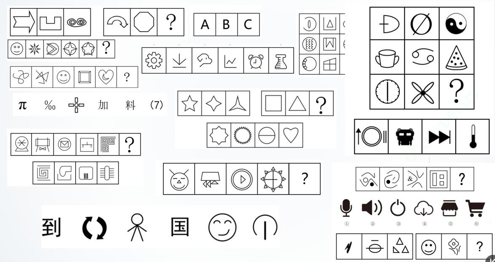
第二组特征：明显规整一些、点线更多、外部更清晰、有带汉字的
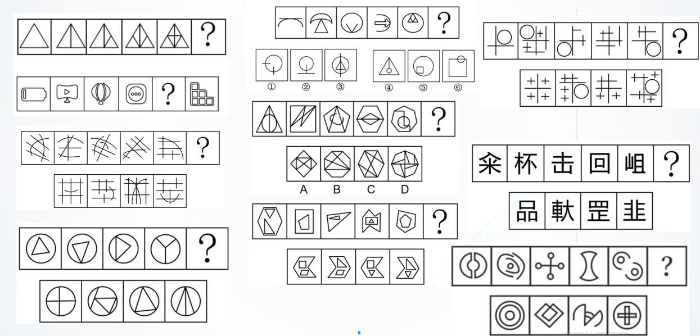
第三组特征：样式差不多、有黑白阴影（背景图类）、黑白点规则地移动、方向感、位置感很强
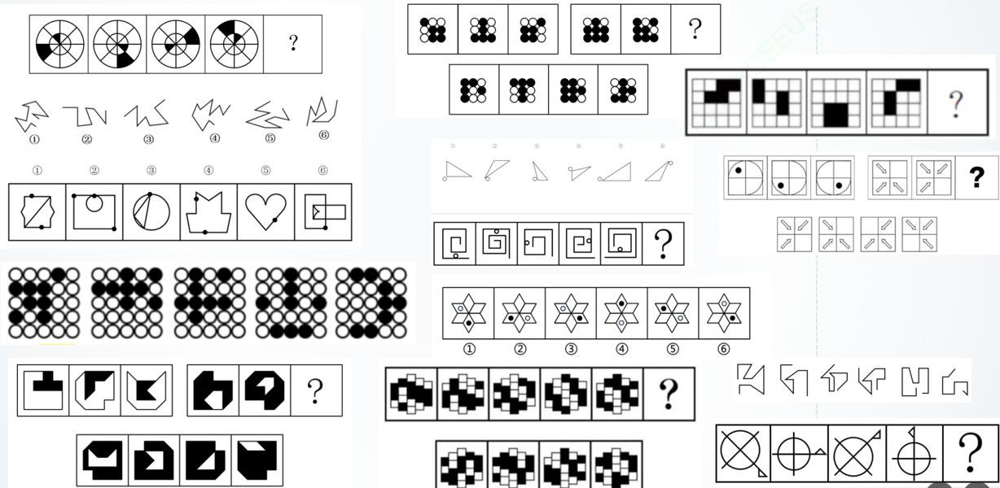
定性分析（口诀：屈臣氏整风）
例题 16一、考点介绍
①屈——曲直性
“屈”指的是曲直性，题干中出现曲线图形时可考虑
【细化考点一】曲直性之有无曲线
示例：
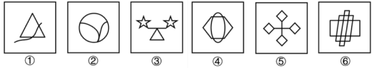
曲；
⑤全直线；⑥全直线
③⑤⑥只有直线（没有曲线）；①②④有曲线
【细化考点二】曲直性之全曲、全直、曲直
示例：
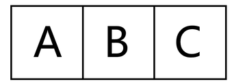
A 只有直线；B 有直有曲；C 纯曲线；
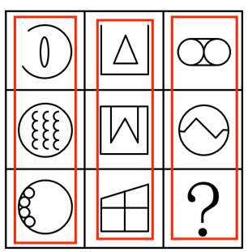
竖着看：第一列全曲线；第二列全直线；第三列有直有曲
【细化考点三】曲线数量（详见定量分析）
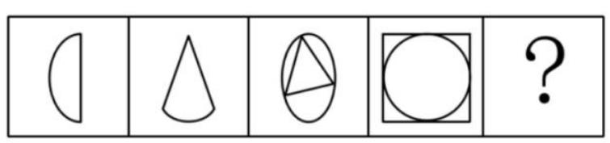
曲线数量都是1
【细化考点四】曲线（圆）与直线关系：相切相交相离（详见圆提示）
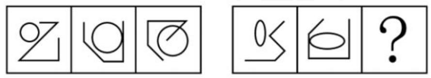
相离、
相切、
相交
【例题】
把下面6 个图形分为两类，使每一类图形都有各自的共同特征或规律分类正确的一项是：
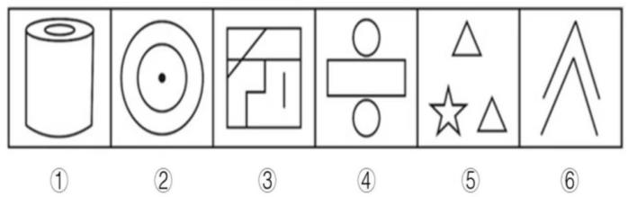
【参考答案】A
从所给的四个选项中，选择最合适的一个填入问号处，使之呈现一定的规律性：
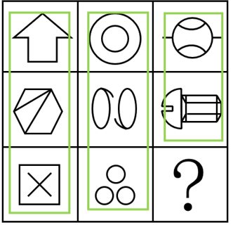
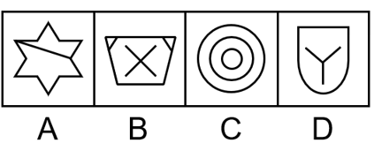
【参考答案】D
②臣——对称性
“臣”指的是对称性，题干中出现明显对称图形时可考虑
常考：轴对称图形、中心对称图形、既是轴对称又是中心对称图形
常见轴对称图形：
、
、
、
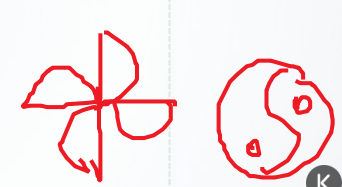
常见中心对称图形：Z、S、N、
常见既是轴对称又是中心对称的图形：H、I、O
【细化考点一】对称性质：中心对称、轴对称、既是中心对称又是轴对称图形
三大哥：性质（轴对称还是中心对称）、数量（几条对
示例：
称轴）、方向（横、竖、45°等）
三小弟：过点过线过面、位置关系、整体对称
（中心对称）
【细化考点二】对称轴方向（详见四大类之对称类）；
【细化考点三】对称轴数量（详见四大类之对称类）；
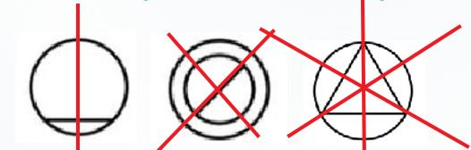
【细化考点四】对称轴过点过线过面（详见四大类之对称类）；
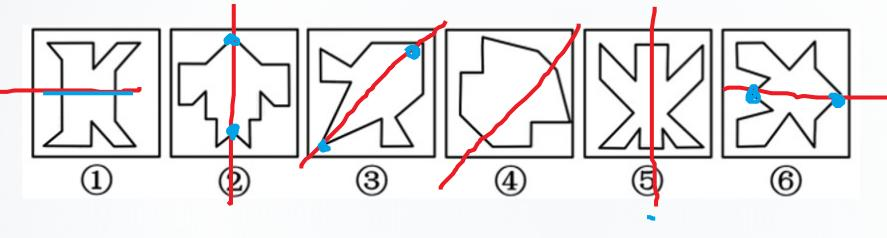
②③⑥过点，①④⑤轴和原图形某条线是垂直的
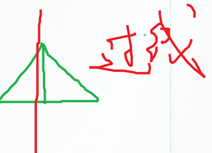
补充：过线
对称轴和原图形的某条线重合了才叫过线
过面：
左侧过三个面，右侧过一个面
【细化考点五】多条对称轴位置关系（详见四大类之对称类）；
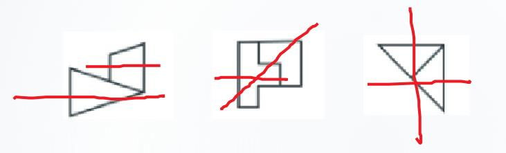
对称轴平行、45°、垂直
【细化考点六】图形整体对称（详见四大类之对称类）；
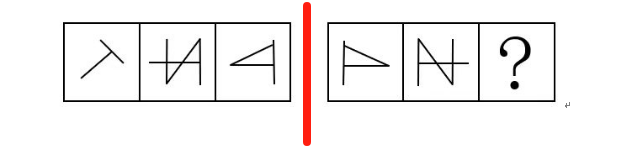
整体对称
【例题】
从所给的四个选项中，选择最合适的一个填入问号处，使之呈现一定的规律性：
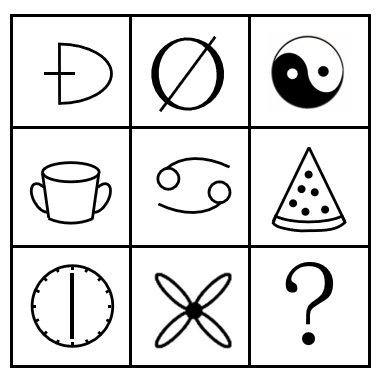
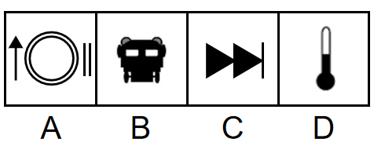
【参考答案】A
从所给的四个选项中，选择最合适的一个填入问号处，使之呈现一定的规律性：
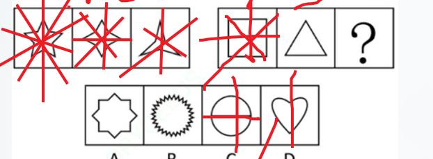
【参考答案】C
选C.
从所给的四个选项中，选择最合适的一个填入问号处，使之呈现一定的规律性：
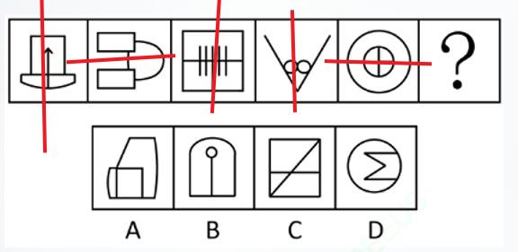
数线
【参考答案】D
③氏——相同相似
【细化考点一】各图形间均存在同一元素
示例：
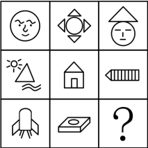
第一行都有圆；第二行都有三角形；第三行都有平行四边形
【细化考点二】各图形内部存在相同元素或内外元素相似（详见分割图类）
示例：
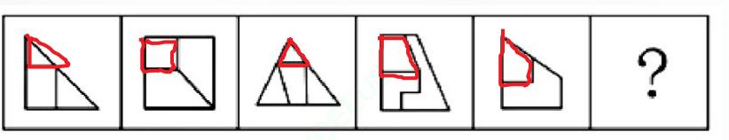
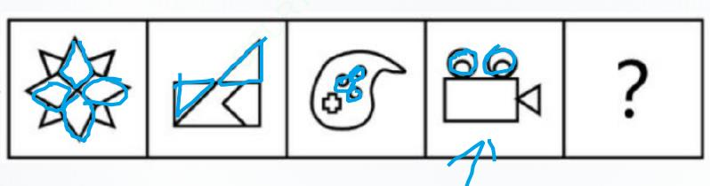
【细化考点三】相邻图形有相同相似元素（元素前后传递）
示例：
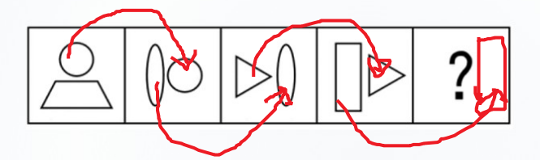
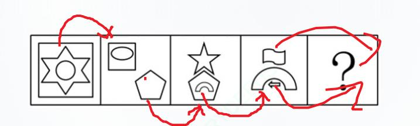
【例题】
从所给的四个选项中，选择最合适的一个填入问号处，使之呈现一定的规律性：
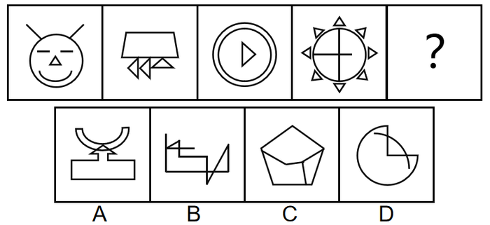
【参考答案】B
从所给的四个选项中，选择最合适的一个填入问号处，使之呈现一定的规律性：
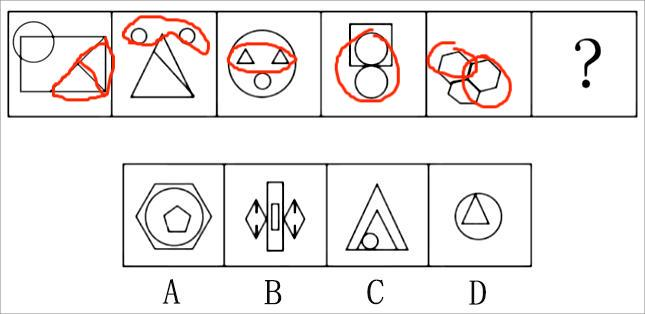
【参考答案】B
把下面的六个图形分为两类，使每一类图形都有各自的共同特征或规律，分类正确的一项是：
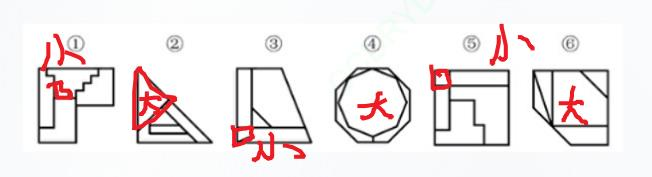
【参考答案】C
从所给的四个选项中，选择最合适的一个填入问号处，使之呈现一定的规律性：
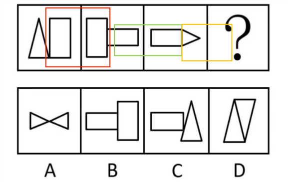
【参考答案】A
幅图形的左侧；第三幅图右面是三角形，所以第四幅图左侧应是三角形，选项A 左侧图形是三角形，当选。
从所给的四个选项中，选择最合适的一个填入问号处，使之呈现一定的规律性：
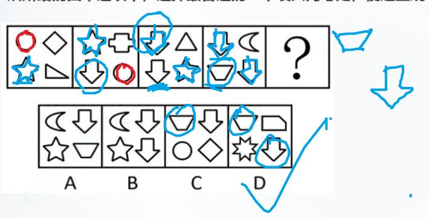
【参考答案】D
选D。
④整——整体部分
“整”指的是整体和部分，图形凌乱且相离，可考虑整体部分
【细化考点一】整体图形与多部分图形
示例：
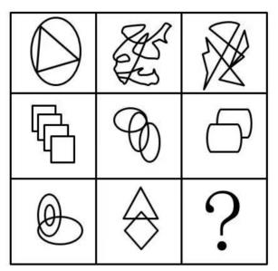
B 一个整体
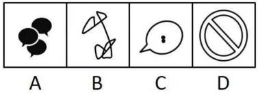
一个整体；
【细化考点二】各个图形的部分数
示例：
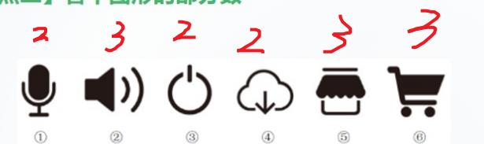
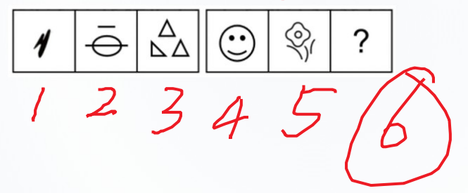
【例题】
从所给的四个选项中，选择最合适的一个填入问号处，使之呈现一定的规律性：
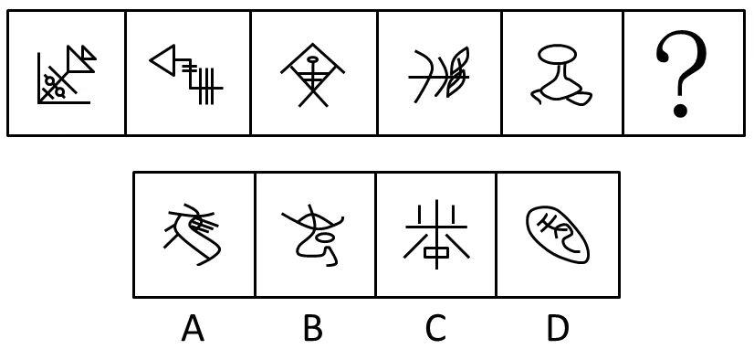
【参考答案】A
从所给的四个选项中，选择最合适的一个填入问号处，使之呈现一定的规律性：
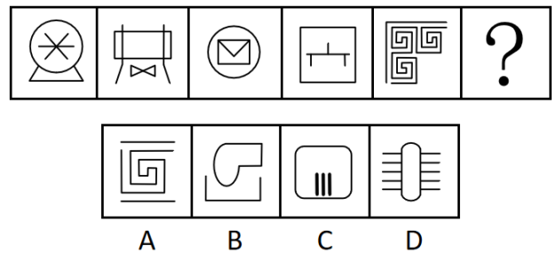
【参考答案】B
⑤风——封闭开放
“风”指的是封闭开放性，出现简笔画或图形凌乱，可观察封闭空间
【细化考点一】是否存在封闭空间
示例：
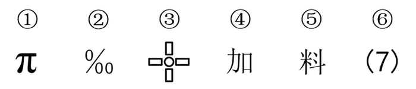
①⑤⑥纯开放图形；②③④有封闭空间
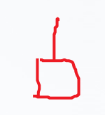
纯封闭图形：
半开放图形：
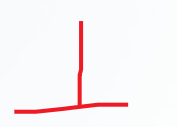
完全开放图形
【细化考点二】全封闭、半封闭、全开放性质判断
示例：
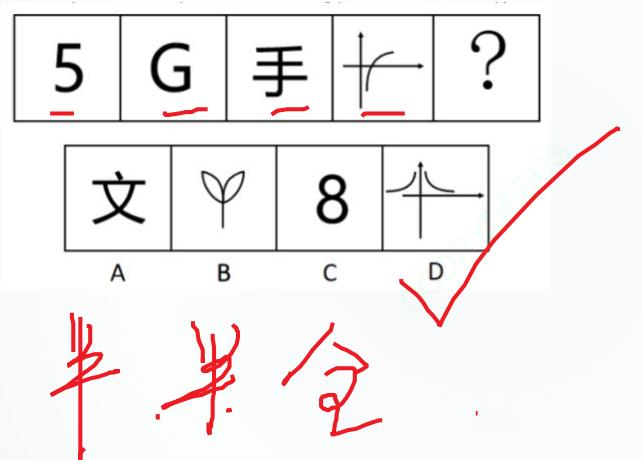
AB 半开放，C 全封闭，D 全开放
【细化考点三】封闭空间数量
示例：
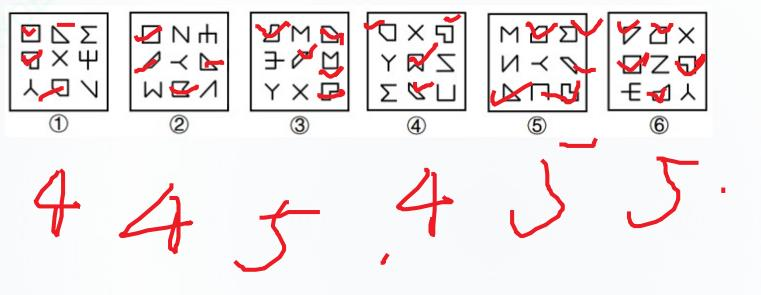
【例题】
把下面的六个图形分为两类，使每一类图形都有各自的共同特征或规律，分类正确的一项是：
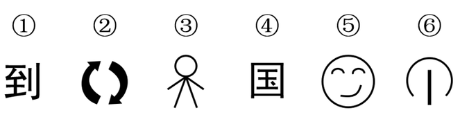
【参考答案】A
把下面的六个图形分为两类，使每一类图形都有各自的共同特征或规律，分类正确的一项是：
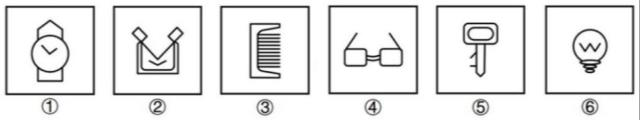
【参考答案】C
⑥奇偶性
“奇偶”指的是图形可数出某种元素的数量，并存在奇数、偶数分类的规律
【例题】
从所给的四个选项中，选择最合适的一个填入问号处，使之呈现一定的规律性：
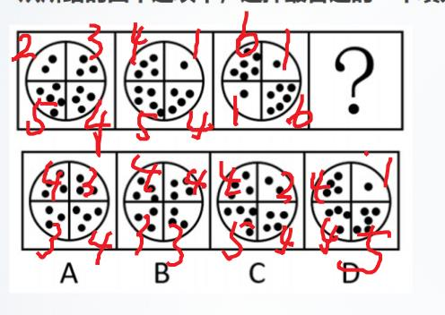
【参考答案】A
【
解
析
】
题
干
黑
点
数
量
都
是
14
，
排
除
C
选
项
；
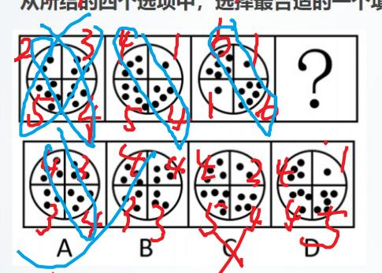
题干对角线黑点数分别是偶数和奇数，选
把下面的六个图形分为两类，使每一类图形都有各自的共同特征或规律，分类正确的一项是：
【参考答案】B
二、定性分析考点总结
定性分析（屈臣氏整风）
知识点
细化
示例
有无曲线
全曲、全直、曲直
屈
—
曲直性
曲线数量
曲线（圆）与直线关系：
相切相交相离
对称性质
对称轴方向
对称轴数量
臣
—
对称性
对称轴过点过线过面
多条对称轴位置关系
图形整体对称
氏
—
相同
相似
各图形间
均存在同一元素
各图形内部存在相同元素
或内外元素相似
相邻图形有相同相似元素
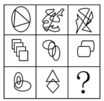
整体图形与
多部分图形
整
—
整体
部分
各个图形的部分数
是否存在封闭空间
风
—
封闭
开放
全封闭、半封闭、
全开放性质判断
封闭空间数量
定量分析（点线面角素）
例题 27一、基础考点
①点
“点”指的是交点，包括曲直、十字、圈内、圈外交点等；
图形线多、交叉多、存在与圆或弧之间的交点（需注意相切相交），考虑点数量；
近两年也有针对“图形拐点类”进行考察。
【细化考点一】曲直交点
示例：
曲直焦点为1 个
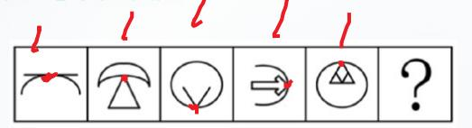
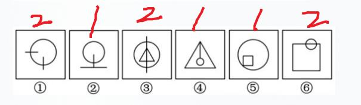
①③⑥曲直交点为2 个，②④⑤曲直交点为1 个
【细化考点二】十字交点
示例：
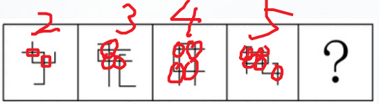
【细化考点三】切点
示例：
①②④切点一个；③⑤⑥切点两个
【细化考点四】内部交点
示例：
【细化考点五】外框交点
示例：
【细化考点六】拐点处特征（拐弯的点变黑了）
示例：
【例题】
把下面的六个图形分为两类，使每一类图形都有各自的共同特征或规律，分类正确的一项是：
【参考答案】A
从所给的四个选项中，选择最合适的一个填入问号处，使之呈现一定的规律性：
“细节猜心思”，内部曲线和直线造成交点
【参考答案】D
从所给的四个选项中，选择最合适的一个填入问号处，使之呈现一定的规律性：
【参考答案】B
试试数十字交点数，十字交点分别是0、1、2、3、4，问号处为5，选B
从所给的四个选项中，选择最合适的一个填入问号处，使之呈现一定的规律性：
【参考答案】C
从所给的四个选项中，选择最合适的一个填入问号处，使之呈现一定的规律性：
【参考答案】A
②线
“线”指的是某种线的数量，包括直线、曲线、笔画数、连接处线段、对称轴等，存在规整多边形或
圆弧等曲线时可考虑
【细化考点一】直线数
示例：
【细化考点二】曲线数
示例：
【细化考点三】横竖线数量
示例：
【细化考点四】笔画数（详见六提示之一笔画）
示例：
符号“日、田等”
【细化考点五】内外数量和差（详见六提示之数量加减）
示例：
外部轮廓很规整，可能考察外部轮廓和内部线段数或空间等数量关系，本题考察内外线条数均相
等，选D.
【细化考点六】点发射射线数
示例：
【例题】
从所给的四个选项中，选择最合适的一个填入问号处，使之呈现一定的规律性：
【参考答案】C
选C。
从所给的四个选项中，选择最合适的一个填入问号处，使之呈现一定的规律性：
【参考答案】C
从所给的四个选项中，选择最合适的一个填入问号处，使之呈现一定的规律性：
【参考答案】C
从所给的四个选项中，选择最合适的一个填入问号处，使之呈现一定的规律性：
第二个图：很多横线和竖线
题干的横竖线数量很跳跃，可以数他们之间的关系。
【参考答案】C
分图均出现圆，圈出来一个封闭空间，只有C 有一个封闭空间，选C。
从所给的四个选项中，选择最合适的一个填入问号处，使之呈现一定的规律性：
【参考答案】C
C。
从所给的四个选项中，选择最合适的一个填入问号处，使之呈现一定的规律性：
AC 四笔、B 三笔，均排除
【参考答案】D
从所给的四个选项中，选择最合适的一个填入问号处，使之呈现一定的规律性：
【参考答案】D
补充：
奇点：发射出奇数条射线的点
包括端点（露头）
、
T 点（和一条线相交，不出头）
奇点数÷2=笔画数
吹捏：形成封闭空间，就可以不要
外部轮廓形成封闭空间，可以不要，里面就剩一横一竖，两笔画
把下面的六个图形分成两类，使每一类图形都有各自的共同特征或规律，分类正确的一项是：
【参考答案】D
发射出3 条射线，选D.
③面
“面”指的是封闭空间数（注意特殊形状，比如三角形）、面积，存在很多封闭空间时可考虑
【细化考点一】封闭空间数
示例：
【细化考点二】相同面数量
示例：
相同面分别是2、3、4、5
【细化考点三】面的面积
示例：
进行黑白切割，黑白面积相等
【例题】
从所给的四个选项中，选择最合适的一个填入问号处，使之呈现一定的规律性：
【参考答案】C
从所给的四个选项中，选择最合适的一个填入问号处，使之呈现一定的规律性：
【参考答案】A
从所给的四个选项中，选择最合适的一个填入问号处，使之呈现一定的规律性：
【参考答案】D
1
6、
1
5 、
1
4 、
1
3 、
1
2 所以问号处应填
1
1 ，选D。
把下面的六个图形分为两类，使每一类图形都有各自的共同特征或规律，分类正确的一项是：
【参考答案】B
补充：
奇点：发射出奇数条射线的点（1 条、3 条、极少数发射5 条）
一笔画：0 个奇点或两个奇点！
包括端点（露头）T 点（和一条线相交，不出头）
奇点数÷2=笔画数
吹捏：形成封闭空间，就可以不要
通过吹捏，
（红色部分都可以去掉），就剩
，一笔即可画成。
通过吹捏，可以把三角去掉，就剩
，4 笔。
在外部轮廓多找：
不找：
④角
“角”可能考察角的数量，比如：直角或者锐角的数量。
【细化考点一】直角（详见六提示之直角提示）
示例：
【细化考点二】锐角、钝角
示例：
【例题】
从所给的四个选项中，选择最合适的一个填入问号处，使之呈现一定的规律性：
【参考答案】C
角数为5
个直角的图形，C 选项符合。
从所给的四个选项中，选择最合适的一个填入问号处，使之呈现一定的规律性：
【参考答案】D
为具备3 个直角的图形，D 选项符合。
把下面的六个图形分为两类，使每一类图形都有各自的共同特征或规律，分类正确的一
项是：
【参考答案】B
⑤⑥形成为锐角，B 选项符合。
从所给的四个选项中，选择最合适的一个填入问号处，使之呈现一定的规律性：
【参考答案】A
，第三列均存在两个钝角，A 选项符合。
⑤素
“素”多考察元素种类和数量、也可能考察元素换算和遍历
【细化考点一】元素种类
示例：
【细化考点二】元素个数
示例：
【细化考点三】元素换算
示例：
【细化考点四】元素遍历，每种元素均出现相同次数或各位置均出现相同次数
示例：
【例题】
从所给的四个选项中，选择最合适的一个填入问号处，使之呈现一定的规律性：
【参考答案】A
A 选项正确。
从所给的四个选项中，选择最合适的一个填入问号处，使之呈现一定的规律性：
【参考答案】C
把下面的六个图形分为两类，使每一类图形都有各自的共同特征或规律，分类正确的一
项是：
【参考答案】C
个相同图形，C 选项正确。
从所给的四个选项中，选择最合适的一个填入问号处，使之呈现一定的规律性：
【参考答案】A
得出2、5、8、11 等差数列，选项总值应为14，对应A 选项。
从所给的四个选项中，选择最合适的一个填入问号处，使之呈现一定的规律性：
【参考答案】C
得出3、4、5、6、7 等差数列，选项总值应为8，对应C 选项。
从所给的四个选项中，选择最合适的一个填入问号处，使之呈现一定的规律性：
【参考答案】A
下方元素应位与第三列图形下方，上方图形位于左上角，A 选项正确。
二、定量分析考点总结
定量分析（点线面角素）
知识点
细化
示例
曲直交点
十字交点
切点
点
内部交点
外框交点
拐点处特征
直线数
曲线数
横竖线数量
线
笔画数
内外数量和差
点发射射线数
封闭空间数
相同面数量
面
面的面积
直角
角
锐角、钝角
元素种类
素
元素个数
元素换算
元素遍历
位置分析（直接想位移）
例题 22此类考法较易识别，图形样式多相同或相似，但位置出现变化，可能是对位置关系的考
察。
一、基本考点
①直——垂直平行
“直”指的是垂直平行关系，出现相似三角形、四边形时也需要考虑平行线组数
【细化考点一】垂直平行关系
示例：
【细化考点二】平行线组数（详见六提示之平行线组数）
示例：
【例题】
从所给的四个选项中，选择最合适的一个填入问号处，使之呈现一定的规律性：
【参考答案】C
另一条线所在面而垂直于另一条线，唯有C 选项存在垂直关系，C 选项符合。
把下面的六个图形分为两类，使每一类图形都有各自的共同特征或规律，分类正确的一
项是：
【参考答案】B
②接——连接方式
“接”指的是连接方式（点连接、线连接），也需要考虑连接处的线段数，题干中存在简
笔画时可考虑
【细化考点一】点连接、线连接（详见六提示之连接）
示例：
【细化考点二】连接处特征
【细化考点三】连接处线段数
示例：
【例题】
把下面的六个图形分为两类，使每一类图形都有各自的共同特征或规律，分类正确的一
项是：
【参考答案】D
把下面的六个图形分为两类，使每一类图形都有各自的共同特征或规律，分类正确的一
项是：
【参考答案】A
把下面的六个图形分为两类，使每一类图形都有各自的共同特征或规律，分类正确的一
项是：
【参考答案】A
从所给的四个选项中，选择最合适的一个填入问号处，使之呈现一定的规律性：
【参考答案】D
D 选项符合。
③想——方向
“想”指的是方向，可考虑对称轴方向、首尾线段方向等
【细化考点一】对称轴方向
示例：
【细化考点二】折线的首尾线段方向（平行垂直、同向反向）
示例：
【细化考点三】某条特征线或某种连线的方向
示例：
【例题】
从所给的四个选项中，选择最合适的一个填入问号处，使之呈现一定的规律性：
【参考答案】A
特殊面为轴对称图形，对称轴呈逆时针45°旋转，A 选项符合。
从所给的四个选项中，选择最合适的一个填入问号处，使之呈现一定的规律性：
【参考答案】B
斜形式，A 选项具有4 条对称轴，C 选项非对称图形，D 选项具有两条对称轴但方向错误，
均排除。
把下面的六个图形分为两类，使每一类图形都有各自的共同特征或规律，分类正确的一
项是：
【参考答案】C
把下面的六个图形分为两类，使每一类图形都有各自的共同特征或规律，分类正确的一
项是：
【参考答案】D
④位——位置关系
“位”指的是位置，在有指示图形（黑点、小圆等）时可考虑
【细化考点一】指示点
示例：
【细化考点二】相对位置
示例：
【例题】
把下面的六个图形分为两类，使每一类图形都有各自的共同特征或规律，分类正确的一
项是：
【参考答案】D
位于图形右侧。
从所给的四个选项中，选择最合适的一个填入问号处，使之呈现一定的规律性：
【参考答案】B
项应位于第6 条，B 选项符合。
从所给的四个选项中，选择最合适的一个填入问号处，使之呈现一定的规律性：
【参考答案】A
从所给的四个选项中，选择最合适的一个填入问号处，使之呈现一定的规律性：
【参考答案】B
位于中间，B 选项正确。
⑤移——移动
“移”指的是移动，平移、循环、内外圈移动、翻转、旋转等
【细化考点一】上下、左右、圆周移动，步数可能不变或递增
示例：
【细化考点二】内外圈双移动
示例：
【细化考点三】旋转、翻转
示例：
【细化考点四】图形重合后，去同存异或去异存同，或者黑白块/点运算，可能会和翻
转、旋转结合考察
示例：
【例题】
从所给的四个选项中，选择最合适的一个填入问号处，使之呈现一定的规律性：
【参考答案】B
应在第一行，B 选项符合。
从所给的四个选项中，选择最合适的一个填入问号处，使之呈现一定的规律性：
【参考答案】A
动5 格，只有A 正确。
从所给的四个选项中，选择最合适的一个填入问号处，使之呈现一定的规律性：
【参考答案】D
从所给的四个选项中，选择最合适的一个填入问号处，使之呈现一定的规律性：
【参考答案】A
有A 符合。
从所给的四个选项中，选择最合适的一个填入问号处，使之呈现一定的规律性：
【参考答案】B
从所给的四个选项中，选择最合适的一个填入问号处，使之呈现一定的规律性：
【参考答案】A
.
从所给的四个选项中，选择最合适的一个填入问号处，使之呈现一定的规律性：
【参考答案】B
从所给的四个选项中，选择最合适的一个填入问号处，使之呈现一定的规律性：
【参考答案】D
先进行去同存异，得到结果后再进行旋转。
二、位置分析考点总结
位置分析（直接想位移）
知识点
细化
示例
垂直平行关系
直
—
垂直平行
平行线组数
点连接、线连接
接
—
连接方式
连接处特征
连接处线段数
对称轴方向
想
—
方向
折线的首尾线段方向
（平行垂直、同向反向）
某条特征线或某种连线的方向
位
—
位置关系
指示点
相对位置
上下、左右、圆周移动，
步数可能不变或递增
内外圈双移动
旋转、翻转
移
—
移动
图形重合后，
去同存异或去异存同；
或者黑白块/点运算，
可能会和翻转、旋转结合考察
四大类之对称图类
例题 10第一节 四大类之对称图类
一、对称类之性质
主要考察图形是否为对称图形，包括中心对称和轴对称；
中心对称提示图形：Z、S、风车、太极、平行四边形等。
从所给的四个选项中，选择最合适的一个填入问号处，使之呈现一定的规律性：
【参考答案】B
从所给的四个选项中，选择最合适的一个填入问号处，使之呈现一定的规律性：
【参考答案】A
需要具有两种对称性质的图形，A 选项符合。
二、对称类之数量
主要考察对称轴数量的变化。
3 条对称轴
4 条对称轴
5 条对称轴
6 条对称轴
把下面的六个图形分为两类，使每一类图形都有各自的共同特征或规律，分类正确的一
项是：
【参考答案】D
确。
从所给的四个选项中，选择最合适的一个填入问号处，使之呈现一定的规律性：
【参考答案】B
三、对称类之方向
考查方向时图形以轴对称图形为主，一般只有一条对称轴。
从所给的四个选项中，选择最合适的一个填入问号处，使之呈现一定的规律性：
【参考答案】D
四、对称类之过点过线过面
对称轴经过原图形上交点、线段、封闭空间。
把下面的六个图形分为两类，使每一类图形都有各自的共同特征或规律，分类正确的一
项是：
【参考答案】D
项符合。
把下面的六个图形分为两类，使每一类图形都有各自的共同特征或规律，分类正确的一
项是：
【参考答案】A
行分组，A 选项符合。。
五、对称类之位置关系
若图形由两个或以上轴对称图形组成，可考虑两条对称轴之间的平行、垂直等关系。
从所给的四个选项中，选择最合适的一个填入问号处，使之呈现一定的规律性：
【参考答案】B
把下面的六个图形分为两类，使每一类图形都有各自的共同特征或规律，分类正确的一
项是：
【参考答案】A
为0°进行分组，A 选项符合。
六、对称类之整体对称
填入选项后，图形呈整体对称样式。
从所给的四个选项中，选择最合适的一个填入问号处，使之呈现一定的规律性：
【参考答案】B
四大类之背景图类
例题 18课前回顾
一、“三大哥”之移动
背景图中所有图形轮廓相同且元素数量基本一致且元素数量远小于轮廓格子数量，可
以优先考虑背景图中的移动。
注：内外圈同时移动、六边形斜线移动是近年考察的热点和难点。
从所给的四个选项中，选择最合适的一个填入问号处，使之呈现一定的规律性：
第一行黑点向右移动1 格，移到最右侧后返回向左移动。
第二行黑点向右移动2 格，移到最右侧后返回向左移动。
第三行黑点向右移动3 格，移到最右侧后返回向左移动。
从所给的四个选项中，选择最合适的一个填入问号处，使之呈现一定的规律性：
内圈红点每次逆时针移动1 格
；
内圈蓝点每次逆时针移动2 格
。
从所给的四个选项中，选择最合适的一个填入问号处，使之呈现一定的规律性：
；
A 点、B 点每次分别移动半格
。
二、三大哥之叠加
背景图中图形轮廓相同且元素数量不一致（参差不齐），并且已知图形为“3×3”或
“3＋3”排列时，可优先考虑叠加。
从所给的四个选项中，选择最合适的一个填入问号处，使之呈现一定的规律性：
三、三大哥之部分数
图形特征：背景图中黑点呈顶格状，接到外框上，有一种切断的感觉，可考虑部分数。
黑点白点抱团
从所给的四个选项中，选择最合适的一个填入问号处，使之呈现一定的规律性：
从所给的四个选项中，选择最合适的一个填入问号处，使之呈现一定的规律性：
分数之和为：2、3、4、5、6，故应选一个黑点白点部分数之和为7 的。
四、六小弟之“笔”
图形特征：黑点或白点连成线条状。
把下面的六个图形分为两类，使每一类图形都有各自的共同特征或规律，分类正确的一
项是：
下列选项中，与所给图形规律相同的是：
五、六小弟之“面”
“面”是指面积（也可能考察周长）。
图形特征：会有清晰的一个图形轮廓。
把下面的六个图形分为两类，使每一类图形都有各自的共同特征或规律，分类正确的一
项是：
7.5。
把下面的六个图形分为两类，使每一类图形都有各自的共同特征或规律，分类正确的一
项是：
六、六小弟之“连”
“连”是指连接方式。
题型特征：阴影位置存在点连接或线连接。
从所给的四个选项中，选择最合适的一个填入问号处，使之呈现一定的规律性：
七、六小弟之“报”
“报”是指抱团。
题型特征：图形比较杂乱分散，小黑块几个几个聚在一起。
从所给的四个选项中，选择最合适的一个填入问号处，使之呈现一定的规律性：
挨着，第三行每个图形中有3 个黑色小球挨着。
并且第一列黑色小球数为7 个，第二列黑色小球数为8 个，第三列黑色小球数为9 个。
八、六小弟之“对”
“对”是指对称。
图形特征：所有图形黑格或白格分布规则。
从所给的四个选项中，选择最合适的一个填入问号处，使之呈现一定的规律性：
白色部分应该为中心对称图形。
从所给的四个选项中，选择最合适的一个填入问号处，使之呈现一定的规律性：
图形只是中心对称图形，所以？处图形应只是中心对称图形，排除B、D。
其次数黑点，第一列黑点数为6 个，第二列黑点数为8 个，第三列黑点数为10 个，选
C。
九、六小弟之“滴”
“滴”是指递推。
图形特征：所有图形每行（列）均有阴影且相邻图形相似，图形行列很多，一般在5
×5 以上。
从所给的四个选项中，选择最合适的一个填入问号处，使之呈现一定的规律性：
一格；图二和图三仅第二行不同，并且第二行黑点整体向右移动一格；故图五和？处应仅
第五行不同，并且第五行黑点整体向右移动一格。
从所给的四个选项中，选择最合适的一个填入问号处，使之呈现一定的规律性：
图二和图三仅第二行变化，并且第二行黑点数减少一个；故？处应仅第五行变化，并且第
五行黑点数减少一个。
从所给的四个选项中，选择最合适的一个填入问号处，使之呈现一定的规律性：
第二步标注每个图形每列黑点数：图一为12241321，图二为21122413，观察发现整体向右
移动两格（并且向下移动一格）：
，所以图四最后两列
应在？处前两列，只能选A。
从所给的四个选项中，选择最合适的一个填入问号处，使之呈现一定的规律性：
；
图二到图三：黑点向右下移动一格
，故图五到？处：黑点应向左下移动
一格。
四大类之分割图类
例题 12一、分割图类之连接方式
图形特征：图形中有一部分被标记，且与其他封闭空间连接。
把下面的六个图形分为两类，使每一类图形都有各自的共同特征或规律，分类正确的一
项是：
从所给的四个选项中，选择最合适的一个填入问号处，使之呈现一定的规律性：
二、分割图类之大小
图形特征：被分割的各部分有明显的最大或最小图形。
从所给的四个选项中，选择最合适的一个填入问号处，使之呈现一定的规律性：
三、分割图类之三不沾
图形特征：中间图形与外部轮廓无公共点和公共边。
把下面的六个图形分为两类，使每一类图形都有各自的共同特征或规律，分类正确的一
项是：
①②④每一部分均与外部轮廓有公共边，③⑤⑥标红部分与外部轮廓无公共边。
把下面的六个图形分为两类，使每一类图形都有各自的共同特征或规律，分类正确的一
项是：
共边。
四、分割图类之边数
图形特征：最大面、最小面、外部轮廓为规整的多边形，例如三角形、四边形、五边
形等。
从所给的四个选项中，选择最合适的一个填入问号处，使之呈现一定的规律性：
从所给的四个选项中，选择最合适的一个填入问号处，使之呈现一定的规律性：
从所给的四个选项中，选择最合适的一个填入问号处，使之呈现一定的规律性：
五、分割图类之对称
图形特征：最大面、最小面或其他特殊空间为对称图形。
把下面的六个图形分为两类，使每一类图形都有各自的共同特征或规律，分类正确的一
项是：
把下面的六个图形分为两类，使每一类图形都有各自的共同特征或规律，分类正确的一
项是：
六、分割图类之相似
图形特征：内部存在相同相似图形或内部与外部图形相似。
把下面的六个图形分为两类，使每一类图形都有各自的共同特征或规律，分类正确的一
项是：
从所给的四个选项中，选择最合适的一个填入问号处，使之呈现一定的规律性：
四大类之汉字类
例题 15一、汉字之文字结构
从所给的四个选项中，选择最合适的一个填入问号处，使之呈现一定的规律性：
从所给的四个选项中，选择最合适的一个填入问号处，使之呈现一定的规律性：
二、汉字之笔画数、第一笔
从所给的四个选项中，选择最合适的一个填入问号处，使之呈现一定的规律性：
再看横线数，依次为1、2、3、4 条，?处横线数应为5 条，选D。
从所给的四个选项中，选择最合适的一个填入问号处，使之呈现一定的规律性：
从所给的四个选项中，选择最合适的一个填入问号处，使之呈现一定的规律性：
第三行第一笔均为“竖”。
三、汉字之偏旁部首/部分
从所给的四个选项中，选择最合适的一个填入问号处，使之呈现一定的规律性：
檀 香 复 赢 赛 ？
康 徽 嬴 质
A
B
C
D
从所给的四个选项中，选择最合适的一个填入问号处，使之呈现一定的规律性：
四、汉字之拼音
从所给的四个选项中，选择最合适的一个填入问号处，使之呈现一定的规律性：
巴 参 ？ 卡 蓝 芒
当 刀 大 分
A
B
C
D
第一组为ba、can、？。第二组为ka、lan、mang。？处应为韵母为ang 的。
从所给的四个选项中，选择最合适的一个填入问号处，使之呈现一定的规律性：
第一组为qia、qian、qiang。第二组应为zhu、zhua、zhuan。
五、汉字之空间数量、部分数、横竖撇捺数量
把下面的六个图形分为两类，使每一类图形都有各自的共同特征或规律，分类正确的一
项是：
从所给的四个选项中，选择最合适的一个填入问号处，使之呈现一定的规律性：
从所给的四个选项中，选择最合适的一个填入问号处，使之呈现一定的规律性：
六、汉字（或英文）之曲直性
从所给的四个选项中，选择最合适的一个填入问号处，使之呈现一定的规律性：
从所给的四个选项中，选择最合适的一个填入问号处，使之呈现一定的规律性：
从所给的四个选项中，选择最合适的一个填入问号处，使之呈现一定的规律性：
形中均有两个带曲线字母。
四大类考点总结
例题 0四大类
知识点
细化
示例
性质
Z、S、
、
、
数量
方向
对称图类
过点过线过面
位置关系
整体对称
背景图类
“三大哥”之移动
“三大哥”之叠加
“三大哥”之部分数
“笔”
“面”
“连”
“报”
“对”
“滴”
连接方式
分割图类
大小
三不沾
边数
对称
相似
文字结构
笔画数、第一笔
汉字类
偏旁部首/部分
拼音
空间数量、部分数、
横竖撇捺数量
曲直性
六提示（平圆一接直角减）
例题 25一、六提示之平行组数
提示点：两个相同或相似三角形、轮廓自带平行线、N 字型、Z 字型、工字型、H 字型
从所给的四个选项中，选择最合适的一个填入问号处，使之呈现一定的规律性：
从所给的四个选项中，选择最合适的一个填入问号处，使之呈现一定的规律性：
第二组图形为三组平行线，A 选项有三组平行线，符合；B 和C 只有一组平行线，D 有两组
平行线。
把下面的六个图形分为两类，使每一类图形都有各自的共同特征或规律，分类正确的一
项是：
线。
二、六提示之圆提示
提示点：各个图形均存在“圆（或曲线）”，常见考点为圆内或圆上的交点数量、圆
内空间数、直线与圆的相交相切相离、包围和半包围等。
从所给的四个选项中，选择最合适的一个填入问号处，使之呈现一定的规律性：
有一个交点。C 选项有一个切点一个交点，D 选项两个切点。
从所给的四个选项中，选择最合适的一个填入问号处，使之呈现一定的规律性：
4，选项C 有5 个。
从所给的四个选项中，选择最合适的一个填入问号处，使之呈现一定的规律性：
从所给的四个选项中，选择最合适的一个填入问号处，使之呈现一定的规律性：
2 个，第二组切点有2、3、4 个，A 选项切点有4 个，符合。
把下面的六个图形分为两类，使每一类图形都有各自的共同特征或规律，分类正确的一
项是：
三、六提示之笔画数
提示点：为出头、T 点、分离、特殊字符（田、日、☆、奥迪车标等），一笔画可用“吹
捏”判断，也可数奇点（发射奇数条射线的点、奇点数0 或2 为一笔画，否则笔画数为奇点
数的一半）。
吹捏法原理：
捏（简化图形）——将图形中独立的单区域空间去掉，直至没有空间为止，剩下线条几
笔画，原图即为几笔画
吹（修正图形）——在不改变连接关系前提下，图形外轮廓或内部空间可修正形状，线
条可修正长短和方向。
把下面的六个图形分为两类，使每一类图形都有各自的共同特征或规律，分类正确的一
项是：
通过数奇点，发现①③⑤是一笔画，②④⑥是两笔画，对应B 选项。
从所给的四个选项中，选择最合适的一个填入问号处，使之呈现一定的规律性：
选项符合。
把下面的六个图形分为两类，使每一类图形都有各自的共同特征或规律，分类正确的一
项是：
把下面的六个图形分为两类，使每一类图形都有各自的共同特征或规律，分类正确的一
项是：
四、六提示之连接方式
提示点：简笔画图形，例如树叶、蜡烛等。
把下面的六个图形分为两类，使每一类图形都有各自的共同特征或规律，分类正确的一
项是：
把下面的六个图形分为两类，使每一类图形都有各自的共同特征或规律，分类正确的一
项是：
五、六提示之直角数
提示点：垂线、直角三角形、电话卡（修正图形）、矩形等。
从所给的四个选项中，选择最合适的一个填入问号处，使之呈现一定的规律性：
C 选项是3 个直角，符合。
从所给的四个选项中，选择最合适的一个填入问号处，使之呈现一定的规律性：
角，四个直角用矩形或者上下两个垂线。B 选项有6 个直角，符合。
把下面的六个图形分为两类，使每一类图形都有各自的共同特征或规律，分类正确的一
项是：
从所给的四个选项中，选择最合适的一个填入问号处，使之呈现一定的规律性：
选项有4 个直角，符合。
六、六提示之数量加减
提示点：规整的外部轮廓，多为多边形；只有两种元素组成；存在“十”可考虑横竖
线的数量关系。多考察外部线条与内部点、线、面之和差。
从所给的四个选项中，选择最合适的一个填入问号处，使之呈现一定的规律性：
数内部空间、线条、交点。外部轮廓数－内部空间数=2，B 选项符合。
从所给的四个选项中，选择最合适的一个填入问号处，使之呈现一定的规律性：
从所给的四个选项中，选择最合适的一个填入问号处，使之呈现一定的规律性：
从所给的四个选项中，选择最合适的一个填入问号处，使之呈现一定的规律性：
把下面的六个图形分为两类，使每一类图形都有各自的共同特征或规律，分类正确的一
项是：
从所给的四个选项中，选择最合适的一个填入问号处，使之呈现一定的规律性：
从所给的四个选项中，选择最合适的一个填入问号处，使之呈现一定的规律性：
下图这类题考内外数量加减，大家可以反复看一下这些图外部轮廓的特征，增
加直观印象，下次我们看到这个考点的题就可以快速反应出来啦！
第七节 六提示考点总结
六提示
知识点
提示点
示例
两个相同或相似三角形
轮廓自带平行线
N 字型、Z 字型、工字型、H 字型
平行组数
提示：
各个图形均存在“圆（或曲线）”
考点：
圆内或圆上的交点数量、圆内空
间数、直线与圆的相交相切相
离、包围和半包围等
圆提示
笔画数
出头、T 点、分离、特殊字符
（田、日、☆、奥迪车标等）
连接方式 简笔画图形，例如树叶、蜡烛
直角数
垂线、直角三角形、
电话卡（修正图形）、矩形
规整的外部轮廓，多为多边形；
只有两种元素组成；
存在“十”可考虑横竖线的数量
关系；
多考察外部线条与内部点、线、
面之和差
数量加减
立体图形之展开图
例题 10第一节 立体展开图
一、六面体类
①理论知识
5
1
3
4
2
点连接面（5-2 3-6）：可绕公共点旋转
6
线连接面（2-3 4-6）：保持公共边不变
对立面（1-3 2-4 5-6）：永远不存在连接关系
母图
点连接面（1-3 4-6）：可绕公共点旋转
线连接面（2-3 4-5）：保持公共边不变
对立面（1-4 2-5 3-6）：永远不存在连接关系
变种1
点连接面（3-56）：可绕公共点旋转
线连接面（1-2 3-4 5-6）：保持公共边不变
变种2
对立面（1-3 4-6 2-5）：永远不存在连接关系
②解题三板斧
1．可通过对立面关系，排除不符合对立面条件的选项。
如，某选项中，应为对立面的两个面居然相邻，可迅速排除
2．处理母图时，可将1 直接平移至4 的右侧（反之亦可），且5、6 均可随着1、4 一
起平移。
如，
等价于
3．若5、6 为中心对称图形，则可直接平移两格（若非中心对称图形，则需旋转180°）。
如，
等价于
左边给定的是纸盒的外表面，下列哪一项能由它折叠而成：
右面是4 号图，左边应该是3 号图，现在左边变成了6 号，排除；C 选项正面是3 号图，右
边是4 号图，上面是5 号图，从1 号图上面移到3 号位上面，上变下，左变右，正确；
左边给定的是纸盒的外表面展开图，下列哪项能由它折叠而成：
号图和右面的5 号图是对立面，也可直接排除）；B 选项正面是1 号图，上面是5 号图，方
向错了，且右面也不对，排除；C 选项正面是4 号图，右边是1 号图，把5 号图移两个格，
是中心对称图形所以不变，选项中上面的图方向变了，排除；D 选项从上面往下看，移动题
干图形，D 选项符合。
左边给定的是纸盒的外表面展开图，下列哪项能由它折叠而成：
右边也不对；B 选项观察右
上角公共点，右侧面方向有误
；C 选项正确，
。
左边给定的是多面体的外表面，右边哪一项能由它折叠而成：
；
B 选项正面是6 号图，右边是5 号图，对立面不该相邻，排除；C 选项正面是4 号图，上面
是3 号图，右边是5 号图，正确；D 选项正面是2 号图，右侧应该是5 号图，排除。
左边给定的是多面体的外表面，右边哪一项能由它折叠而成：
，排除；B 选项正面方向错了，黑圈应该挨着公共点
，
排除；C 选项上面不对，排除；D 选项平移后正确
。
下面选项中，哪个图形可以由左面纸板折叠而成：
正确；C 选项正面和右
面都错了；D 选项右侧面方向有误。
左边给定的是纸盒的外表面，右边哪一项是由它折叠而成：
；B 选项右侧面方向有误；C 选项上面和正面方
向有误；D 选项上面和右侧面方向有误。
左边给定的是纸盒的外表面展开图，右边哪一项能由它折叠而成：
；B 选项右面应该是空白
的3，排除；C 选项正面方向反了；D 选项正确
。
左图为所给正方体纸盒的外表面展开图，问哪一项可以由其折叠而成：
；B 选项和C 选项通过公
共点所连接面排除
；D 选项上面黑色和白色反了
。
下图为给定的多面体及其外表面展开图，问字母A、B、C、D 和数字1、2、3、4 代表的
棱的对应关系为：
，经过平移对应，C 选
项正确。
立体图形之截面·视图·拼合
例题 22以下除哪项外，都是同一正方体纸盒的外表面展开图：
同的，B 选项中，两个C 面开口方向是不同的，再观察C 选项中，两个C 面开口方向也是不
同的，BC 一致，说明D 和其他三个都不同，答案为D 选项。
以下除哪项外，都是同一正方体纸盒的外表面展开图：
，B 选项中正方形在左，三角形在
右；D 选项中，正方形在右，三角形在左。再看一个选项，A 选项中的正方形在左，三角形
在右，AB 一致，说明D 特殊，答案为D 选项。
二、四面体
①理论知识
2
4
3
可沿三角形顶点
2
4
进行旋转，
1
3
变型为
1
1、4 可以直接
平移到另一边，
2
4
2
4
1
3
3
1
变型为
解题方式：关注两连接面的公共边，注意公共边的顶点和底点。
左边给定的是纸盒的外表面，下列哪一项能由它折叠而成：
题干中1 号图的短线应该是从C 点发射出去的，但是
A 选项中的短线是从A 点发射出去的，排除；B 选项是从C 点发射出去的，正确；CD 选项对
应的是3、4 号图
，正确画法应该是
，答案为B
选项。
左边给定的是纸盒外表面的展开图，右边哪一项能由它折叠而成：
；
BCD 选项对应的是题干中蓝色部分的图形，观察看白色的小三角，应该在下面，是C 点
发射出去的，对应C 选项。D 选项的白色小三角形位置反了，错误。答案为C 选项。
左图为给定四面体的外表面展开图，以下哪项可以由它折叠而成：
红色部分的图形，中间红色斜线为公共边，A
选项中黑色三角形的斜边方向错了，应该对应公共边，错误；
把最左
边的图形旋转180 度，得到图形
，对应B 选项的图形，答案为B 选项。
一、理论知识
①长方体截面
可截出来的图形：锐角三角形、梯形、平行四边形（包括长方形、正方形）、非正五边
形、六边形。
②圆柱截面
可截出来的图形：正圆形、椭圆形、椭圆形的部分（不可截出正圆形的部分）、长方形
（是否能截出正方形取决于圆柱体的高与直径之比）。
③圆锥截面
可截出来的图形：圆形、等腰三角形、椭圆形、椭圆形的部分（不可截出正圆形的部分）。
二、解题方法
一般可截出简单、规整的图形，“缺失”的部分一般也是规整图形。
左图为给定的立体图形（边长为L），将其从任一位置剖开，则右边各项中不可能是该
立体图形的截面形状：
。A 选项可以切出，
。C 选项可以切出，
。答
案为D 选项。
左图为给定的多面体，将其从任一面剖开，哪项不可能是该多面体的截面：
；C 选项可以切出，
；D 选项的两块，高度应该是不一样的，D 错误，答案为D 选项。
左图是给定的空心立体图形，将其从任一面剖开，右边哪项可能是该立体图形的截面：
角形。A 选项中间没有中空，最下面应该是椭圆，不可能转弯，A 选项也错误，切出来这样
才可以
。答案为B 选项。
下图是给定的立体图形（大圆柱内的虚线部分为挖空部分），将其从任一面剖开，下面
哪一项不可能是该立体图形的截面：
，错误；B 选项可以切
出，垂直切，
；C 选项可以切出，
；
D 选项可以切出，
；故答案为A 选项。
下面的三棱台如图所示，从中挖掉一个圆柱体，然后从任一面剖开，哪一项不可能是该
三棱台的截面：
；C 选项可以切出，不刮到中空即可得到；
D 选项可以切出，
；B 选项垂直下刀不可能切出矩形，B 应该是这样子，
，答案为B 选项。
将一个正方体从中间挖去一个圆柱，得到如左图所示的新立体图形，从任意面剖开，右
边哪一项不可能是该立体图形的截面？
错误；A 选项可以
切出，
；C 选项可以切出，
；D 选项可以切出，
；答
案为B 选项。
小总结：
下图为15 个白色和5 个灰色正方体组合而成的多面体，将其经A、B、C 三个顶点切开
后，正确的截面是：
过ABC 三点切开，则经过正方体的1、5、9，得到C 选项，答案为C 选项。
左图为13 个白色正方体和5 个灰色正方体组合而成的多面体，现用经A、B、C 三个顶
点的平面对该多面体进行切割，正确的截面是：
块，经过ABC 三点切开，得到B 选项的图形，答案为B 选项。
第三节 立体视图
立体视图可按方向分为：主视图、后视图、左视图、右视图、俯视图（从上看）、仰视
图（从下看）
视图由轮廓+内部线条组成
轮廓：立体视图的外轮廓
内部：不平滑的“棱”产生的实线线条
上图是给定的多面体，下边哪一项可能是该多面体的视图：
选项上面应该是梯形，
；D 选项最上面的正方形应该往右一些，不能过线，答案
为B 选项。
下列立体图形，其视图不可能是所给四个选项中的哪一项：
图，正确；D 是仰视图，正确；B 是正视图，正确，答案为A 选项。
从所给的四个选项中，选择最合适的一个填入问号处，使之呈现一定的规律性：
第四节 立体拼合
立体拼合题，一般出现的图形都是由小立方体堆叠成的。通常需要从四个选项中选出能
够和题干中出现的部分图形拼合成整体图形的选项。
左图为等大的3 个灰色正方体和15 个白色正方体组合成的多面体，其可以切割为①、
②和③三个小多面体，问③代表的多面体可能是：
，把①放下来，
，
再画第二层，
，把②放下来，缺少的是L 形，蓝色的部分，
，答案为A 选项。
左边的立体图形是由①、②和③组成的，下列哪项可以填入问号处：
，最上面一
层，
，则缺少的是一个L 形，这个形状，
，为A
选项的图形，答案为A 选项。
下图为同样大小的正方体堆叠而成的多面体正视图和后视图。该多面体可拆分为①、②
和③共三个多面体的组合，问下列哪一项能填入问号处：
此样式，（缺少5 个方块的）
，只有C 符合；
方法二：一层一层画图，
，缺少蓝色
样式的，对应C 选项，答案为C 选项。
下列图形中，左图为相同大小的15 个白色和3 个灰色正方体组合而成的多面体，其可
以由①、②和③三个多面体组合而成，哪一项能填入问号处：
，3 的下方不缺方块，因为D 选项排除，答案为A 选项；
方法二：一层一层画图，缺少的样式只有A 符合，答案为A 选项。
左图为15 个白色正方体和3 个灰色正方体组合而成的多面体，其可以由①、②和③三
个多面体组合而成。请问哪项能填入问号处：
，都是白色方块，BC
都有黑方块，排除；D 选项的黑方块在左侧，应该在中间，排除，答案为A 选项。
方法二：一层一层画图，
缺少的样式是
，第二层是一个黑色，第三层是一个白色，只有A 符合，答案
为A 选项。
蜈蚣平均多达40 只脚，但却能够步履协调、正常行走。当别的小动物问蜈蚣是怎么做
到用这么多脚走路时，蜈蚣也开始好奇地观察起自己平时怎么走路，结果它的脚反而开始纠
缠在一起。这便是蜈蚣效应，即对事物有超过平常的关心，反而导致在处理问题时方寸大乱。
根据上述定义，下列没有体现蜈蚣效应的是：
做，也体现了蜈蚣效应。
和题干说的关联不大，而题干说的是对事情保持应有的注意力，不要过于关注，过于关注
反而会方寸大乱。
定义判断全体系
例题 29第一节 整体概述
总体做题思想：定义判断更重理解，要站在一定高度上把握，可联系生活中的人或事或
某种现象，试着猜测其现实所指；
切记定义判断不是“连连看”，找出一堆关键要素一一对应，这样做的结果就是“只见
树木不见森林”。
那到底什么是关键信息？
好多同学容易忽略的“被定义词”，才是最关键信息，试想，此定义有好多特征和要
素，为什么选取其中一或两词作为其“名”，无其他原因，只因“名”里有最重要特征。
后续解释，是为了让我们更好理解被定义词，读题的过程，可看作是寻找被定义词中特
征对应的过程，需特别关注的有主体、对象、特殊要求、中心语（此类信息在被定义词中
往往无法包含）。
什么是定义题目最大的坑？
属于、不属于一定分清，养成良好读题习惯，不属于题目的错误选项都是“例子”，可
以借用例子理解定义；
其他需注意的点：
多定义或多情况定义要注意找一一对应，正确选项有时会完美对应定义结构。
第二节 单定义
一、偏正短语式
体验式采访是指直接投入到所要报道的新闻事件中去体验生活，以获得新闻报道所需要
的素材，以及对新闻事件的认识。
根据上述定义，下列不属于体验式采访的是：
【参考答案】A
A 选项，类似体验性培训、学习，有体验但是无采访，不符合定义，当选。
体育赛事赞助是指企业以现金、实物、服务、技术、人力资源等方式支持体育赛事，并
由此获得商业回报的行为，体现的是体育赛事组委会和体育赛事赞助商之间对等互换以谋求
各自利益的关系。
根据上述定义，以下属于体育赛事赞助的是：
【参考答案】B
A 选项，属于体育赛事但不是赞助，只是合作，不符合定义，排除；
C 选项，主体北京冬奥村不是企业，不符合定义，排除；
D 选项，球队不是体育赛事，不符合定义，排除。
诉前财产保全是指利害关系人因情况紧急，若不立即申请财产保全将会使其合法权益受
到难以弥补的损害，起诉前向人民法院申请，由人民法院采取的一种财产保全措施。
根据上述定义，下列不属于诉前财产保全的是：
已将设备转卖，遂请求法院查封甲正在出售的大楼
同，遂请求人民法院冻结200 万元预付款
乙无力归还，甲向法院申请查封乙的财产
车予以查封，再将甲告上法庭
【参考答案】A
A 选项，“乙随即起诉”，即已经起诉，属于诉后，不符合定义，当选。
无感审批是指通过智能技术强化身份认证、智能授权、自动填表等功能，企业群众无需
出示证件、无需填写表单，“不知不觉”就拿到审批文件，实现“无感”审批、“省心”办
事。
根据上述定义，以下属于无感审批的是：
游客无需出示证件，可以直接出示购票二维码入园
息和申请表格，随后完成在线审核，获得建筑许可
人员，工作人员会帮忙核对材料，帮助他们方便快捷地完成相关手续
完成查询、续费、转款等功能，无需出示证件、无需填写表单
【参考答案】B
A 选项，进公园检票过程不是审批，不符合定义，排除；
B 选项，填写单位代码属于正常流程，后续审核符合无感审批，当选；
C 选项，只是工作人员帮忙无智能，从新旧方法来看还属于老方法，不符合定义，排
除；
D 选项，保险公司提供服务过程没有审批，不符合定义，排除。
档案管理是指档案馆（室）以维护档案的真实、完整、准确、安全，便于社会和其他各
方面利用为原则，对档案进行收集、整理、保管、鉴定、统计并提供利用的各种业务工作。
按管理门类分为文书档案管理和专业档案管理；按档案载体形式分为传统档案管理和电子档
案管理。
根据上述定义，下列属于档案管理的是：
【参考答案】A
B 选项，主体不是档案馆，不符合定义，排除；
C 选项，主体不是档案馆，不符合定义，排除；
D 选项，“建立档案工作责任制”管理的是工作人员而不是档案，不符合定义，排除。
隐性饥饿，是指机体由于营养不平衡或者缺乏某种维生素及人体必需矿物质，同时又存
在其他营养成分过度摄入，从而产生隐蔽性营养需求的饥饿症状。
根据上述定义，下列属于隐性饥饿的是：
难耐晕倒在地
奶等，但同时高强度的健身训练还是让他浑身酸痛、疲惫不堪
后来因饮食缺少蛋白质和维他命而导致记忆力减退
体检中发现自己存在高血糖、高血脂、高血压等问题
【参考答案】C
A 选项，已经饿晕，不属于隐性，不符合定义，排除；
B 选项，不饥饿也不缺营养，不符合定义，排除；
D 选项，未体现缺少什么营养，不符合定义，排除。
群体规范是群体所确立的表明在特定环境中群体成员的行为准则和标准，可分为描述性
规范和指令性规范两种。描述性规范表明人们在特定情境下应该做的，它简单地告诉人们，
哪些行为是有效的和适合的。指令性规范详细说明在特定情境下，什么是人们必须做的，以
及什么是被人们赞同或者是反对的行为。
根据上述定义，下列各项中属于描述性规范的是：
【参考答案】A
B 选项，必须遵守，属于指令性规范，不符合定义，排除；
C 选项，必须遵守，属于指令性规范，不符合定义，排除；
D 选项，并非规范不符合定义，排除。
二、主体、对象、特殊要求、中心语
代际责任：指在不超出自身能力的前提下，相邻两代人的一方向另一方主动提供经济帮
扶、生活照顾、健康保障、精神抚慰等各种支持的行为。
下列不属于代际责任的是：
老年活动中心打牌下棋，在公园找人聊天，终于帮他们重新找到了“组织”
都会专程赶到城里，把孙女接回农村老家痛痛快快地玩上整个假期
板上的照片、简历，觉得合适的就记下基本情况、电话号码。虽然快三十岁的孙女
根本不着急，她却一直乐此不疲
怒之下退了群。后来，儿子又把他请回，还邀约了几位有同样爱好的长辈，群里逐
渐热闹起来，他也时不时点赞或评论几句
【参考答案】C
C 选项，罗奶奶帮助孙女，属于隔代人，不符合定义，当选。
回应性监管是指政府通过制度设计，采用多样化的监管手段和策略对市场主体和社会组
织进行动态化、智能化、差别化的监管。回应性监管强调监管主体的多元化，除政府以外，
企业、社会组织，乃至被监管对象都是监管主体；在监管策略上，采取差异化、阶梯化的监
管方式，即政府首先鼓励自我监管，难以奏效时才采取更为严厉的强化型自我监管直至命令
控制型监管。
根据上述定义，下列选项没有体现回应性监管的是：
【参考答案】A
A 选项，老方法，不涉及“政府首先鼓励自我监管，难以奏效时才采取更为严厉的强化
型自我监管直至命令控制型监管”，不符合定义，当选。
认知计算是指机器通过与人的自然语言交流及不断学习从而帮助人们做到更多的系统。
认知计算试图解决生物系统中的不精确、不确定和部分真实的问题，以实现不同程度的感知、
记忆、学习、语言、思维和问题解决等过程。
根据上述定义，下列不符合认知计算的是：
进行分类并且指导销售员工对不同顾客销售哪种产品
出恶意软件的侵害或数据损失，协助行为分析和异常探测工作
医疗等领域为人类提供智能的信息化服务
领域
【参考答案】D
D 选项，是一种计划，并不是一个系统，不符合定义，当选。
人力资本投资是指体现在劳动者身上的，用来提高人的生产能力从而提高人在劳动力市
场上的收益能力的初始性投资。
根据上述定义，下列不属于人力资本投资的是：
【参考答案】D
D 选项，未体现在劳动者身上，不符合定义，当选。
最大最小准则的基本特点是，决策者总是担心最终结果会于已不利。于是为了保险，在选择
方案时只希望自己可能遇到的最坏结果比采用其他方案可能遇到的最坏结果都要好些。
下列表格提供了某公司家用电器的4 种经营方式、不同市场状态下的收益值。
经营方式市场状态
畅销
一般
滞销
甲
10
8
5
乙
13
9
﹣2
丙
11
7
4
丁
15
6
﹣1
根据上述准则，该公司应选择的经营方式是：
【参考答案】A
滞销中选最好，当选甲。
生物燃料泛指由生物质组成或萃取的固体、液体或气体燃料，可以替代由石油、核能等
传统燃料，这些新兴的燃料是可再生燃料。
根据上述定义，下列不属于生物燃料的是：
【参考答案】C
C 选项，中心语为桐油树，并非燃料，不符合定义，当选。
第三节 多定义
互补品是指两种商品之间存在某种消费依存关系，即一种商品的消费必须与另一种商品
的消费相配套。互补品一般可以分为两类：普通互补品，指两种商品之间没有固定的同时使
用的比例；完全互补品，指两种商品之间必须按照固定不变的比例同时被使用。
根据上述定义，下列选项正确的是：
【参考答案】C
C 选项，毛笔和墨汁需要相互搭配使用，且没有固定比例，符合定义，当选。
单播是单点对单点数据传输；组播是单点对特定多点数据传输，发出一份数据包，特定
的多点同时接收；广播是单点对非特定多点传输，发出一份数据包，非特定多点同时接收。
根据以上定义，下列选项中利用了组播技术的是：
【参考答案】A
A 选项，电视频道节目是同时接收，付费的人属于特定多点，符合定义，当选。
统计数据分为定性数据与定量数据。定性数据包括分类数据和顺序数据。分类数据是指
只能归于某一类别的非数字型数据，它是对事物进行分类的结果，用文字表述；顺序数据是
指归于某一有序类别的非数字型数据。定量数据是指表现为具体数字观测值的数据。
①按城市规模可将城市分为特大城市、大城市、中等城市和小城市；
②婚姻状况：1-未婚，2-已婚，3-离异，4-丧偶；
③A 地到B 地的距离为200 公里，到C 地为320 公里，到D 地为100 公里；
④某医院建筑面积37.5 万平方米，开放床位3182 个，临床医生687 人。
根据上述定义，关于以上4 组数据的说法正确的是：
【参考答案】D
仅D 选项符合，当选。
悲观是对人、事、物产生消极的看法。悲观可以分成以下几类：气质性悲观，是指人们
在对未来的看法上，长期倾向于期待坏的结果；归因性悲观，是指在一件事情发生后对它进
行解释时，总会采取内在的、稳定的负面归因；防御性悲观，是指人们会在事件发生前，将
期待降到比较低的水平，想象出最坏的可能。
根据上述定义，下列体现了防御性悲观的是：
的方向发展
表示担忧
不要太在意客户的态度，这样的想法支持他勇敢向前
【参考答案】B
B 选项，“对自己能否胜任这一岗位表示担忧”，对还未到来的错误悲观，降低期待认为
自己不能胜任，符合定义，当选。
总量指标动态数列是将反映某种社会经济现象的一系列总量指标按时间先后顺序排列
形成的数列，可分为两类：
（1）时期数列：每个指标都表示社会经济现象在一定时期内发展过程的总量，各指标
值可以相加，指标数值的大小与时期长短有直接关系；
（2）时点数列：每个指标都表示社会经济现象在某一时点（时刻）上的数量，各指标
值不能相加，指标数值大小和“时点间隔”长短没有直接关系，每个指标通常都是定期（间
断）登记取得的。
根据上述定义，下列属于时点数列的是：
年份
2016 年
2017 年
2018 年
2019 年
2020 年
税收（亿元）
1530
1950
2390
3025
3650
年份
2017 年
2018 年
2019 年
2020 年
年末员工人数（人）
4459
4925
5012
5347
月份
1 月
2 月
3 月
4 月
5 月
平均工资（元）
3530
3600
4150
3920
4300
季度
第一季度
第二季度
第三季度
第四季度
产量（万辆）
160
182
205
217
【参考答案】B
B 选项，相加不是五年的员工总人数，不可相加，属于时点数列，当选。
第四节 专业性定义题
一、法律相关
专业人士会有其他专门的罪名
包庇罪是指明知是犯罪的人而为其提供隐藏处所、财物，或者帮助其逃匿，或者作假证
明包庇的行为。但事前通谋的，以共同犯罪论处。
根据上述定义，下列可能构成包庇罪的是：
等人抢劫得手后，李某将赃物藏于自家的仓库内
为盗窃所得，遂将该幅名画烧毁
万元，推翻了之前对王某不利的陈述，谎称是自愿和王某走的
造大量证据，成功帮助于某脱罪
【参考答案】C
C 选项，“谎称是自愿”符合作假证明包庇的行为，当选。
共同犯罪是指二人以上共同故意犯罪，共同故意犯罪要求共犯人知道共犯的内容及社会
意义，并希望结果的发生，并且共犯人主观上要有共同犯罪意思联络，知道自己不是孤立的
在犯罪，而是和他人一起共同犯罪。
根据上述定义，下列案件不属于共同犯罪的是：
某殴打。黄某受伤倒地后杨某未实施救助，与李某快速离开了现场。经鉴定，黄某
受重伤
第二天杀死刘某。但是陈某感到害怕，于当天晚上告知刘某杀人计划，并和刘某一
起到公安机关报案
该超市偷东西，两人相视而笑。之后，张某和王某一起将偷取的东西变卖，分别获
利2.2 万元和1.3 万元
丁某归还钥匙。丁某请求谢某让他配置—把钥匙之后再归还，谢某同意。随后丁某
利用自己配置的钥匙盗窃了汽车
【参考答案】A
A 选项，李某和杨某事前并不是互相知道，不属于共同犯罪，当选。
二、医学相关
焦虑性神经官能症是以广泛性焦虑症（慢性焦虑症）和发作性惊恐状态（急性焦虑症）
为主要临床表现，是一种无根据的惊慌和紧张或其紧张惊恐程度与现实情况很不相称，心理
上体验为泛化的、无固定目标的担心惊恐，生理上伴有警觉增高的躯体症状。
根据上述定义，下列属于焦虑性神经官能症的是：
来，即使自己会的问题也回答不出来
都非常担心，几乎没睡觉
【参考答案】A
A 选项，小李被提问时自己会的问题也回答不出来，符合“无根据的惊慌和紧张或其紧张
惊恐程度与现实情况很不相称”，符合定义，当选。
睡眠-觉醒节律紊乱，也称昼夜节律睡眠-觉醒障碍，指个体的睡眠与其现实要求或大部
分人所遵循的节律不符的觉醒紊乱。
根据上述定义，下列不属于睡眠-觉醒节律紊乱的是：
【参考答案】C
C 选项，只有一晚上，不符合定义，当选。
三、经济、科学等
科学预测：指基于已掌握的规律，通过科学分析和预测，对未来可能发生的现象，作出
允许质疑及检测的推测。
下列属于科学预测的是：
拥堵现象，要想按时到达目的地，至少得提前半小时出发
材料，很快确定并抓获了犯罪嫌疑人，仅用了3 小时就破了案
要预报，有时还会请气象专家对天气变化原因作出分析
体检报告后告诉他：“超标情况不严重，注意休息，很快就会恢复正常”
【参考答案】C
C 选项，天气预报是经过科学分析得出的预测，符合定义，当选。
定律假说是对一类事物或现象的性质或发生原因作出推测性解释,得出一个可能具有普
遍性意义的规律性命题,从而试图建立、发展或补充科学理论。
根据上述定义,下列属于定律假说的是：
性极大
【参考答案】C
C 选项,“万有引力定律”，属于定律，符合定义，当选。
教育调查是指在没有预定因子、不施行控制的条件下，对现有教育方面的有关客观事实
了做好教育，是大话题
所进行的观察和分析。其目的在于了解教育已有成果，总结经验，发现问题；研究教育理论，
探索教育规律；预测教育发展趋向，为制定教育方针、政策提供事实依据。
根据上述定义，下列不属于教育调查的是：
【参考答案】C
C 选项，目的只是为了预测有多少学生有望升入重点高中，不是为了本地区教育事业，是
功利性调查，不符合定义，当选。
滞后现象指的是解释变量对被解释变量的影响不可能即时完成，在这一过程中通常存在
时间滞后，也就是说，解释变量需要通过一段时间才能完全作用于被解释变量。
根据上述定义，以下选项属于滞后现象的是：
就被葛根吸收了
程度的上涨
及时发放到灾民手中
【参考答案】C
C 选项，“为小微企业发放了无息贷款”为因，“该国物价出现了一定程度的上涨”为果，
6 个月体现时间的滞后，符合定义，当选。
第五节 常用技巧
一、造句法
R 关系的非对称性指的是存在论域中的元素（或对象）x、y，xRy 并且yRx 都成立；也
存在论域中的元素（或对象）m、n，mRn 成立但是nRm 不成立。
根据上述定义，以下哪项中的关系具有非对称性：
【参考答案】D
关系具有确定性性质是指对于某一关系R，如果对于特定论域中三个对象a、b、c 而言，
当对象a 与对象b 之间具有R 关系。并且对象a 与对象c 之间也具有R 关系时，则b＝c。
根据上述定义，下列关系具有确定性性质的是：
【参考答案】A
汉语中有一类名词连名词的复合词，其词素组合顺序为，前一个词素是被修饰、被限定
的成分，后一个词素是修饰、限定成分，称为“正偏式”名-名复合词。
根据上述定义，下列属于“正偏式”名-名复合词的是：
【参考答案】A
作为“正偏式”名-名复合词，只有A 选项可以解释为像舌头的火当选。
语义关系与语法关系
例题 34二、根据“与众不同”确定答案
商业效用原则是商事实践中发展出来的一项交易惯例，市场主体提供的商品、服务以及
其他标的物应当能够发挥基本的功能作用，如果欠缺必要的使用条件或者辅助设施导致其交
易目的落空的，应当予以补足。最佳效用原则是指通过配置组合，使得资源能够最大程度地
发挥效能，提高利用效率。
根据上述定义，下列选项最能体现商业效用原则的是：
【参考答案】C
服务；C 选项：卖地下室赠送通道，其中：车位、椅子和三包服务都是可有可无的，只有通
道是必须要有的，C 选项特殊，当选。且题干中“能够发挥基本的功能作用”表意为：必须
的东西，只有C 选项符合。
美国著名心理学家麦克利兰于1973 年提出著名的素质冰山模型，将个体素质划分为表
面的“冰山以上部分”和深藏的“冰山以下部分”，其中，“冰山以上部分”是人的外在表
现，是容易了解与测量的部分，可以通过培训来改变和发展。而“冰山以下部分”是人内在
的、难以测量的部分。它们不大容易通过外界的影响而得到改变，但却对人的行为与表现起
着关键性作用。
根据上述定义，下列对某人的描述属于“冰山以上部分”的是：
【参考答案】D
提升的，可以改变。故选答案 D。
发散思维是一种从不同的方向、途径和多种角度去设想、探求更多答案，最终使问题获
得圆满解决的思维。
根据上述定义，下列不属于发散思维的是：
【参考答案】C
己设想，D 也是自己想，只有C 是没有想，是别人想后我来选，故选答案C。
定性研究方法是根据社会现象或事物具有的属性和在运动中的矛盾变化，从事物的内在
规定性来研究事物的一种方法或角度。他以普遍承认的公理、一套演绎逻辑和大量的历史事
实为分析基础，从事物的矛盾性出发，描述、阐释所研究的事物。
根据上述定义，下列运用了定性研究方法的是：
【参考答案】D
是国内国外旅游总数，而D 的满意度不好量化，分为非常满意，大体满意，不太满意等，且
A\B\C 都很客观，D 比较主观，故选答案D。
无方向性假设指变量间有一定的关系但不能预测关系的性质。如果没有理论依据，或者
在文献资料和实践观察中没有证据来推测变量关系，研究者只能形成无方向性的假设。方向
性假设预测了两个或两个以上变量间的关系及关系的性质。
根据上述定义，下列属于方向性假设的是：
【参考答案】B
景的关系； D 选项：职业发展机会和成就感降低的关系；都不知是正相关还是负相关；B 选
项：学龄儿童社会交往能力和母亲抑郁分值有关，并且母亲抑郁高，孩子能力低（即呈负相
关），故B 选项当选。
三、根据“新旧”确定答案
按运营主体分类，电子商务模式可分为传统电商模式和内容电商模式。传统电商模式是
指消费者在全品类电商平台上通过搜索、浏览、比价等操作来购买所需的商品。内容电商模
式是指平台通过传播优质内容吸引对内容感兴趣的人群，进而引导其购买内容相关的商品。
根据上述定义，下列不涉及内容电商模式的是：
商品
量不俗
户喜爱
销售一空
【参考答案】A
及内容电商。B、C、D 选项都是用内容吸引人，在过程中卖东西。A 就是传统模式。故选答
案 A。
刑事科学技术是公安、司法机关依照刑事诉讼法的规定，应用现代科学技术的成果，收
集、检验和鉴定与犯罪活动有关的物证，为侦查、起诉、审判工作提供线索和证据的专门技
术。
根据上述定义，下列没有体现刑事科学技术的是：
的判断
【参考答案】A
判断属于痕迹检验、痕迹鉴定；C 选项声谱仪很明显运用了新技术；D 选项成分鉴定需要用
现代科学技术，故选答案A。
预判设计是一种能够引导用户、缩短用户行为路径的有效设计手段。它可以根据用户的
行为或用户所在的场景，让功能“主动找到”用户，并让用户与之产生自然的交互，为用户
提供更好的使用体验，本质就是为用户多想一步，让用户使用起来尽量简单。
根据上述定义，下列不属于预判设计的是：
【参考答案】A
判， 不是新东西；B 选项：变慢是预判了没有听懂多想了一步； C 选项：差评预判了被店
家骚扰，所以匿名；D 选项：预判后不用再重新搜索了，没有这个按钮还需要重新输入搜索。
新零售模式即企业通过运用大数据、人工智能等先进技术手段，对商品的生产、流通与
销售过程进行全面升级改造，进而重塑业态结构与生态圈，实现线上线下的融合、消费的跨
界融合。新零售模式的变革将有效推动消费供给侧改革，实现商品的基础效率提升，促进消
费升级，创造更多的商业机会。
根据上述定义，下列不属于新零售模式的是：
【参考答案】B
验式购买也是新型的，不是直接推销，属于；而B 咖啡店什么都没做，不是新零售模式，当
选，故答案为B 选项。
类比推理
必做100题
跟我一起学行测
第一节 整体概述
总体做题思想：类比题目相对比较简单，难题多为掺杂常识，做类比题一定注意“大众
思维”和“简单思维”，多想内在联系，即词与词本身有没有联系，例如“猎豹-速度快”、
“蜜蜂-采蜜”等等。
做类比题目要“以我为主”，主动去找到题干与选项的内在联系；切忌被出题人“牵着
鼻子走”，因为类比推理是假设性推理，如果逼着自己去给选项找理由，总能找到千奇百怪
的理由。
类比推理常见的关系有四种，其中语义关系（成语）、范畴关系（集合性名词）、对应
关系（生活性表达）多为一级辨析，语法关系多为二级辨析（常见二级辨析还有褒贬色彩、
物理化学变化等）。
类比推理经常涉及常识、“生僻”成语等，需要在日常做题中积累。
常用方法：造句子是类比推理较常用的方法，做题时要选择与题干相似点最多的选项；
也可以设想更合适的答案是什么，以此排除错误选项，避免被出题人迷惑。
第二节 语义关系
一、反义和近义（同义）
近义（同义）、反义关系：词语含义相近（相同）或相反。
补充知识点：成语的常见考法为语义、褒贬和结构分析。
先礼：后兵
【参考答案】B
重和轻反义词，B 当选。
骈偶：颠倒
【参考答案】D
和予是近义词，当选。
停：行：止
【参考答案】C
选，满和盈不是同义，是递进关系，满了之后继续加才会盈。
所以排除 B，选 C
瓜熟蒂落：水到渠成
【参考答案】A
B 项翻云覆雨是说权势大，玩弄手段，也指反复无常，翻天覆地是说变化大，二者不是
近义词，排除；C 项耳濡目染是说眼睛看到的耳朵听到的受到的环境影响，耳熟能详是听得
多了熟悉了，二者不是近义词，排除；D 项大功告成是成功了，功败垂成是马上成功了但是
最后失败了，二者是反义词。A 项朝三暮四和朝秦暮楚是说多变反复无常，二者是近义词，
当选。对应选项 A。
志同道合：沆瀣一气
【参考答案】A
个褒义一个贬义。B 项的鼠目寸光和高瞻远瞩是反义词，排除；C 项的举棋不定和优柔寡断
是近义词，但都不是褒义词，排除；D 项口若悬河是说个没完，是中性词，没有褒贬色彩，
排除； A 项居安思危是要有危患意识，是褒义，杞人忧天是不必要的担心，是贬义，二者
意思相近，一个褒义一个贬义，当选。对应选项A。
二、引申、象征、一语双关
引申义：指一个词的本身引申出来的意义。
象征义：通过某些具体事物象征某些抽象含义。
一语双关：一个词或一句话关涉到两个意思。
白鸽 对于 （ ） 相当于 （ ） 对于 权力
【参考答案】D
布衣：百姓
【参考答案】D
布衣是穿着，鸿雁是鸟，须眉是胡子和眉毛，巾帼是穿着，所以选 D.
胃口：兴趣
【参考答案】C
A 项器官是心腹的本义，排除；B 项比赛不是黑马的引申义，黑马的引申义是开始不被
看好后来逆袭的选手，排除；D 项骨肉引申义一般是自己的孩子，不是指亲人，排除；C 项
学生是桃李的引申义，当选，对应选项 C。
三、意思解释
意思解释：一个词语是对另一词语的意思解释。
转念：主意
【参考答案】C
顿悟 对于 （ ） 相当于 研究 对于 （ ）
【参考答案】A
顿悟和观察未必有关，顿悟和思维未必有关，顿悟和真理未必有关，B,C,D 排除。
四、同字不同义
同字不同义：指相同的字在不同的词语中表达的意思不同。
峰：山峰：碳达峰
【参考答案】B
顶端，一个本义一个象征义。 A 项的界都是范围，没有象征义，排除；C 项的菜篮子的子
没有含义，排除；D 项的领头羊的羊指的也是本义，不是引申义，排除；B 项海潮是本义，
移民潮像海潮一样的趋势， 是象征义，当选，对应选项 B。
火：火急：火警
【参考答案】B
劲都是比喻义，排除；C 项牛毛是本义，牛饮是比喻义，与题干顺序相反， 排除；D 项鹊
桥是本义，鹊起是比喻义，与题干顺序相反，排除；B 项蛇行是比喻义，蛇胆是本义，当选，
对应选项 B。
第三节 语法关系
一、词性考察
词性考察：多考察名词、动词、形容词。
手足：手：足
【参考答案】A
名词，江湖的引申义是指社会。B 选项，巨、大是形容词；C 选项，拉、扯是动词；D 选项，
给、予是动词。所以选A.
教案 对于 （ ） 相当于 （ ） 对于 分类
【参考答案】D
最好 是一个动词，一个名词，D 选项符合，A、B、C 不符合。再代入题干，按照教案授课，
按照标准分类，可以类比。
畅通：拥堵
【参考答案】B
项，松散的反义词更偏向紧凑，结实没有凑在一起的意思；C 和 D 均不符合。
二、结构考察
结构考察：多考察动宾、主谓、偏正、主宾、并列等。
劲敌：严冬
【参考答案】A
阿爸、老虎、朋友、知音都是名词。
政通人和：国泰民安
【参考答案】B
首先从词义来看，政通人和和国泰民安是近义词，都是形容国家态势好,排除 A 选项。
然后题干中的成语：政通和人和是并列结构，国泰和民安是并列结构，本身结构特殊，考结
构可能性更大，C 选项，心领和神会是并列，心照和不宣不是并列，排除；D 选项，奋起修
饰直追，迎头修饰赶上，不是并列结构，排除。
B 选项符合上述两项的同时，政通人和和国泰民安都是形容国家态势好的状态，星罗棋
布和漫山遍野都是形容分布比较广的状态，都是形容一种状态，但是 D 选项不是形容一种
状态，而是一种动作，所以本题倾向于不选D。 有些同学会认为这道题考的是因果关系，
政通人和才能国泰民安，奋起直追才能迎头赶上，这也是一种思路，但是由于本题题干结
构非常清晰，所以倾向于选 B。
蛛丝马迹：鸟迹虫丝
【参考答案】C
名词，所以当选 C。
厚此：薄彼
【参考答案】C
A 选项，口蜜和腹剑不是反义，排除B 选项，阳奉和阴违不是动宾，是偏正，排除 D 选项。
舍本和逐末并列，反义，动宾结构，选 C。
精准：扶贫
【参考答案】B
动宾； B 选项，热心助人是偏正；C 选项，进退自如是主谓；D 选项，不搭。
愚公移山：郑人买履
【参考答案】B
项；邯郸学步是去邯郸学步，不是主谓宾排除 C 选项；凿壁偷光不是主谓宾结构，排除 D 选
项；杞人忧天和庖丁解牛都是主谓宾结构，B 当选。
春山暖日和风：阑干楼阁帘栊
【参考答案】B
小桥流水人家。题干左右都是 3 个名词并列。B 选项符合。
三、句子成分考察
句子成分考察：将所给词语构造成短句，每个词语在句子中的位置、成分一致。
风险：社会：预防
【参考答案】B
全食品，不一致，排除 A 选项；严禁弯道超车，弯道超车不是偏正短语，排除 C 选项；读
书改变命运是主谓宾，排除 D 选项；惩治 官员腐败，惩治是动词，官员腐败是偏正短语，
B 当选。
奋进：新征程
【参考答案】A
锋。而B\C\D 都是动宾，A 当选。
局域网：计算机：文件共享
【参考答案】C
A 选项：在空间站（地点）航天员（人物） 不符合上述逻辑排除
B 选项：图书馆阅览室都是地点 不符合
C 选项：在纺织厂用纺织设备进行原料加工，符合
D 选项：在电视台，网络媒体进行节目制作（不合现实逻辑）
故选择C 选项。
范畴关系
例题 26一、全同关系
全同关系指的是两个词或概念表示的是同一个意思，即两个概念的外延完全重合。常见
的全同关系包括古今、中外、自他、雅俗、同义词等。例如：父亲与爸爸、蹴鞠与足球。
分母：除数
伊妹儿：电子邮件
二、并列关系
并列关系指的是两个事物是完全不同的，但属于同一类事物或具有相同的属性或功能。
即两者属于同一层级的不同概念。并列关系可细分为矛盾关系和反对关系。
春夏：秋冬
非四个并列的单字，排除；C 选项日出日落是主谓，非四个并列单字，排除；D 选项，雷鸣
是主谓，暴雨是偏正，排除。
毛笔 对于 （ ） 相当于 （ ） 对于 菊花
是并列关系，当选。
诗：赋：词
竹简是都能写字的并列关系，时间顺序与题干不符，排除；B 项昆曲、京剧都属于戏剧，排
除；C 项工笔画是绘画的一种技艺，与油画和水墨画无法构成并列关系，排除；D 项甲骨文、
隶书、楷书是汉字的种类，并列关系，且出现时间顺序与题干一致，当选。
①并列之矛盾反对
反对关系表示除了这两个选项之外还有其他选项，即除了A、B 之外，还有C 或其他。
例如：苹果和梨、红色与黑色。
矛盾关系表示非此即彼的关系，即除了A 就是B。例如：生与死、合法与非法；
乾：坤
属于反义。A 选项秦、汉是并列－反对，不是反义，排除。B 选项中、外属于并列－矛盾，
排除。C 选项纵、横属于并列－反对，且属于反义，当选。D 选项二者属于并列－矛盾，但
不是反义，排除。
线性振动：非线性振动：振动
属于反对，是牵牛花的一部分，排除。B 选项食肉动物、食草动物属于反对，排除。C 选项
投资者、经营者属于反对，排除。D 选项主要矛盾、次要矛盾是矛盾关系，且都和矛盾构成
种属关系，符合题意，当选。
存在：虚无
看作并列中的反对，排除；C 选项物质和意识为矛盾关系，当选；D 选项原因、结果属于反
对关系，排除。
城市：农村
农业为反对关系，排除；D 选项学习与工作为反对关系，排除；C 选项硬件与软件为矛盾关
系，与题干一致，当选。
唯物主义：唯心主义
了黑色金属都属于有色金属），当选；B 选项共产党员和共青团员为反对，（还有群众），
排除；C 选项黄色人种和白色人种属于反对（还有黑色人种），排除；D 选项工人阶级与农
民阶级属于反对（还有资产阶级等），排除。
非法收入：合法收入
票、债券等），排除；B 选项物质资本与人力资本是反对关系（还存在其他资本），排除；
C 选项国有经济与私营经济是反对关系（还有集体、外资等），排除；D 选项有偿服务与无
偿服务为矛盾关系，当选。
三、包含关系
包含关系指的是一个概念包含另一个概念的全部外延。包含关系可细分为种属关系和组
成关系。有时也需要注意名词是特指还是泛指。
①包含之种属关系
种属关系表示一个概念的全部外延与另一个概念的部分外延重合的关系，即一个对象是
另一个对象的一种。当两个词可以造句为“A 是B（的一种、一类）”时，说明两者是种属
关系。
深空探测 对于 （ ） 相当于 （ ） 对于 公益组织
组织，当选；A 选项，深空探测时可能有一项工作是无人采样，不能说慈善捐款可能有一项
工作是公益组织，排除；B 选项遥感技术是深空探测可能会使用的技术，排除；C 选项深空
探测在宇宙空间里，不能说公益事业在公益组织里，排除。
儿童读物：启蒙读物
除；B 选项刑事诉讼与民事诉讼是并列关系，排除；C 选项生产资料与生活资料是并列关系，
排除；D 选项麻疹疫苗是一类疫苗，种属关系，当选。
苏格拉底：人类
是泛指，排除；B 选项故宫是建筑，但故宫不是特指，有北京、沈阳、台北故宫，排除；C
选项《唐诗三百首》是书籍，但《唐诗三百首》有不同出版社出版的不同版本，排除；D 选
项，太阳是恒星，种属关系且太阳为特指，当选。
有理数：无理数：实数
时与房屋无法构成种属，排除；B 项阴刻、阳刻并列，阴刻阳刻都是雕刻，构成种属关系，
当选；C 项不能说西汉、东汉是一种汉朝，不构成种属关系，排除；D 项西欧、东欧是欧洲
的一部分，组成关系，排除。
电气：煤气：气
选项银河不是河，运河是河，符合，当选。C 选项正面反面都是面，且正面、反面是反对关
系，排除。D 选项榆钱不是钱，金钱和钱是全同关系，排除。
鳄鱼：鱼
排除。B 选项，蜗牛不是昆虫，蜗牛是软体动物，蜗牛和昆虫不是同一层级，符合，当选。
C 选项，小熊猫和浣熊都是哺乳动物，排除。D 选项，蝮蛇是蛇，排除。
脊椎动物：包括圆口类、鱼类、两栖动物、爬行动物、鸟类和哺乳动物等六大类。
特殊考点：蝙蝠、鲸鱼、海豚是哺乳动物；青蛙、蝾螈、娃娃鱼、大鲵是两栖动物。
②包含之组成关系
组成关系表示一个概念是另外一个概念的组成部分，即整体和部分之间的关系。当两个
词语造句为“A 是B 的一部分”，说明两者是组成关系。
省份：河北：石家庄
选项，桃子是水果，二者是种属关系，桃核是桃子的一部分，二者是组成关系，符合，当选。
B 选项中国是亚洲的一部分，北京是中国的一部分，二者都是组成关系。C 选项蜜蜂是昆虫，
二者是种属关系，但蜂蜜不是蜜蜂的一部分，排除。D 选项民企是一种企业，华为是民企，
都属于种属关系，排除。
（ ） 对于 膝盖骨 相当于 地铁站 对于 （ ）
选项，膝盖骨是腿的一部分，站台是地铁站的一部分，逻辑一致，当选。C 选项膝盖骨是一
个器官，但列车不是地铁站，不一致，排除。D 选项，肩胛骨和膝盖骨属于并列，地铁站和
终点站属于交叉，不一致，排除。
陨石 对于 （ ） 相当于 饮料 对于 （ ）
水是一种饮料，但不能说流星是一种陨石，排除；C 项饮料是液体，但陨石不是鹅卵石，排
除；D 项无明显对应关系，排除。
草根：草：平民百姓
系，排除；B 项，鸿毛是大雁的组成部分，鸿毛可以引申为轻微的事物，当选；C 项骨肉是
人的组成部分，骨肉与紧密相连无明显逻辑关系，排除；D 项水分和水不构成组成关系，排
除。
四、交叉关系
交叉关系指的是两个不同概念的外延间有部分重合，即如果满足“有的A 是B，同时有
的A 不是B，有的B 不是A”这个句式，那么A 和B 就满足交叉关系。
匿名投票：实名投票：现场投票
项早间会议、午间会议并列，二者与工作会议均为交叉关系，当选；B 项战国文字属于古代
汉字，与题干不符，排除；C 项金融危机、粮食危机、生态危机三者并列，排除；D 项油料
作物和糖料作物是并列关系，二者都是经济作物，排除。
专项训练：短期训练：综合训练
列，排除。B 选项，2、3 并列，排除。C 选项，抵押贷款：低息贷款：信用贷款，1、3 并列，
分别和2 交叉，当选。D 选项三个并列，排除。
报案人：嫌疑人
（报案人和嫌疑人在同一个案件上可能为同一人）。
A 项买家与获益人为交叉关系，当选（买家和获益人在同一个保险上可能为同一人）；B 项
卖家和买家不能为同一件事的同一人，排除；C 项主角和配角在同一电视剧里不能为交叉关
系，排除；D 项僧侣和道士不存在交叉关系，排除。
纪录片 对于 （ ） 相当于 （ ） 对于 客观题
题是客观题，种属关系，国产片和纪录片为交叉关系，排除；C 项客观题和考试题为交叉关
系，动画片和纪录片是并列关系，排除；D 项纪录片和译制片是交叉关系，必答题和客观题
为交叉关系，关系一致，当选。
铜镜：化妆镜
序反了，排除；B 项木碗是材质、汤碗是功能，关系一致，当选；C 项金簪是金子材质的发
簪，种属关系，排除；D 项瓷瓶是材质、古瓶是从时代角度分类，排除。
对应关系
例题 49一、逻辑性对应
①充分必要关系
调查：发言权
项，死亡不一定推出中毒，排除。B 选项，进步不一定推出批评，排除。C 选项，没有损害
就没有赔偿，如果有赔偿一定受到了损害，当选。D 选项，健康不一定推出锻炼，排除。
小不忍：则乱大谋
知彼才能百战百胜，逻辑关系后推前，与题干相反，排除。C 选项，锲而舍之推朽木不折，
前推后，当选。D 选项，反义词，排除。
开车不喝酒：喝酒不开车
选项无明显逻辑关系，排除。B 选项，好汉→长城，长城→好汉，逆命题，不一致，排除。
C 选项，你好我好→大家好，大家好→你我好，逆命题，排除。D 选项，真金→不怕火炼，
怕火炼→不是真金，逆否命题，一致，当选。
直线交叉：直线不平行
前一定推后，后不一定推前，与题干逻辑关系一致，当选。B 选项，100℃不一定沸腾，排
除。C 选项，全同关系，排除。D 选项，π是求圆面积所需的量，无明显逻辑关系，排除。
②因果关系
春暖：花开
B 选项，二者不是因果关系，是雨后天气晴了。C 选项，因为天寒，所以地冻，因果关系，
当选。D 选项，云开、雾散属于并列关系，排除。
鸟鸣：谷应
所以木断，保留。C 选项，眉开、眼笑属于并列，排除。D 选项，因为开云所以见日，保留。
对比BD 选项，鸟鸣、谷应都是主谓，绳锯、木断都是主谓，但是开云、见日是动宾结构，
综上，答案为B 选项。
虫害：植物受损
B 选项，没有因果关系，排除。C 选项，因为海水污染所以赤潮，顺序相反，排除。D 选项，
没有因果关系，辗转反侧可能是失眠的一种状态，排除。
积少成多：熟能生巧
石出，因为唇亡所以齿寒，符合，当选。B 选项，失之毫厘就可能带来谬以千里的结果，不
符合，排除。C 选项，意指平安与危难互相转化，灾祸与幸福互为因果，没有因果关系，排
除。D 选项，塞翁失马不是因果关系，排除。
近乡情更怯：不敢问来人
并列关系，排除。B 选项，问答顺承，无因果关系，排除。C 选项，因为来自故乡，所以知
道故乡的事情，因果关系，前因后果，当选。D 选项，直到现在人们仍然怀念项羽，因为他
宁肯战死也决不再回江东，果因关系，前果后因，排除。
③行为目的
刻舟：求剑
盗铃，行为目的关系，当选。C 选项，打草不是为了惊蛇，排除。D 选项，指桑骂槐是表面
本质的关系，不是行为目的，排除。
守株：待兔
系，排除。B 选项，画饼是为了充饥，行为目的关系，当选。C 选项，无行为目的关系，排
除。D 选项，并列关系，排除。
洽谈：合作
系，排除。B 选项，并列关系，排除。C 选项，并列关系，排除。D 选项，投资是为了收益，
行为目的，当选。
④哲学关系
实践：认识
发展无哲学关系，排除。B 选项，内因、外因无互相作用的关系，排除。C 选项，整体和部
分无互相作用的关系，排除。D 选项，物质决定意识，意识可以反作用于物质，当选。
禁止：允许
选项，必然的矛盾是可能不，当选。C 选项，必然的矛盾关系是可能不，排除。D 选项，全
同关系，排除。
失眠：焦虑
反作用于理论，互相作用，当选。B 选项，祭奠不会带来牺牲，排除。C 选项，时间先后关
系，无作用反作用关系，排除。D 选项，无作用反作用关系，排除。
销售：购买
排除。B 选项，参与双方对于同一件事在双方的不同角度的两个说法，一方胜利另一方失败，
当选。C 选项，反义，并非同一件事，排除。D 选项，反义，并非同一件事，排除。
二、日常性对应
①原材料（物理化学变化）
布：衣服
作过程是化学变化，排除。B 选项，粮食是酒的原材料，制作过程是化学变化，排除。C 选
项，木材是餐桌的原材料，制作过程是物理变化，与题干一致，当选。D 选项，朱古力就是
巧克力，全同关系，排除。
蚕茧：丝绸：衣服
做不了螺丝，排除。B 选项，树木是纸张的原材料，纸张是书本的原材料，当选。C 选项，
面条做不了馒头，排除。D 选项，沙粒不是珍珠的原材料，排除。
油田∶汽油
的原材料，符合，当选。B 选项，在商场里有衣服，排除。C 选项，农田里有稻谷，排除。D
选项水库里有水，排除。
大豆 之于 （ ） 相当于 原木 之于 （ ）
逻辑一致，当选。B 选项大豆能生豆芽，原木和桐木是交叉关系，不符合，排除。C 选项大
豆和红豆是并列，原木和檀木是交叉关系，排除。D 选项，大豆是豆腐的原材料（化学变化），
原木是木桶的原材料（物理变化），不符合，排除。
②功能
剪发：烫发剂：烫发
【参考答案】A
【答案解析】烫发剂能烫发但不能剪发，A：防腐剂能防腐但不能催熟。都是功能性，
D 选项镇痛与止痛为同义
防爆膜：防刮花：抗撞击
【参考答案】D
【答案解析】防爆膜具有防刮花与抗撞击功能，D 选项：净水器具有除杂质与去异味的
功能。
通讯：手机：存储
【参考答案】D
【答案解析】手机能通讯能存储，D 选项：河坝与手机都是实物，河坝能蓄洪能灌溉
，C 选项中法律需要与外部建立联系才有教育与警示作用
牙刷：刷牙
【参考答案】B
【答案解析】用牙刷可以刷牙，冒号后面为功能，B 选项：用渔网可以网鱼，D 选项风
扇应为吹风，不能是扇风，扇风多为扇子。
风扇：风
【参考答案】D
【答案解析】风扇产生风，A：电瓶是储存电，B：雨伞是挡雨，C：暖壶是盛水，D：
蜡烛是产生光。
③职业
诗人：作诗：作词
【参考答案】D
【答案解析】诗人主要的工作是作诗作词，A;画家创作为艺术范畴，B：指挥家的工作
是指挥，乐手的工作不包含指挥，C：作曲不是鼓手的主要工作。
工程师：研发：产品
【参考答案】A
【答案解析】工程师研发产品，飞行员驾驶飞机。B：锤子是工具
（ ） 对于 妙手回春 相当于 军人 对于 （ ）
【参考答案】C
【答案解析】A 选项中华佗再世意思为医术高超，妙手回春也是形容医术高超，军官也
是军人，是包含的关系，排除，B：悬壶济世也是形容医生，百姓不是职业，C：妙手回春
是形容医生的形容词，戎马倥偬是形容军人的成语，D：视死如归并非是单指军人。
④前后顺序（主体、连续性）
征稿：审校：出版
【参考答案】A
【答案解析】先征稿→审校→出版，B：开题→送审，C：应先发射，D：绘画→装裱→
展出。
预约：核实：兑换
【参考答案】C
【答案解析】先预约→核实→兑换，A:应先插管，B：培训与辞职的顺序不固定，D：
应该先调研。
酉时：戌时：亥时
【参考答案】B
【答案解析】连续的！A：少了夏，时间不连续，C：无顺序，D：地方语言无顺序
⑤场所
油田：钻探：石油
【参考答案】C
【答案解析】在油田钻探石油，C：在渔场捕捞海鲜
老鹰：树枝：天空
【参考答案】A
【答案解析】老鹰在树枝上休息，在天空翱翔捕猎，此题观察主体在地点的活动，A 选
项：蜜蜂在蜂箱休息，在花丛采蜜。
⑥命名方式
珍珠：珍珠婚
【参考答案】B
【答案解析】用属性进行命名，A：长得像，B：果实像，D:槐花蜜是槐花的产物，B：
河流像母亲一样
马 对于 （ ） 相当于 （ ） 对于 橙色
【参考答案】C
【答案解析】A：马面裙跟马无关系，水果跟橙色无关系，B：马是哺乳动物的一种，
颜色里包含橙色，但前后顺序反了，D：马与长颈鹿是并列关系，紫甘蓝与橙色无关系。
耳塞：笔套
【参考答案】A
【答案解析】耳塞：塞进耳朵，笔套：套住笔，A：手铐能铐住手，灯罩能罩住灯，B：
盖头反过来说是功能，耳塞是反着进行命名，故盖头不合适。
青花瓷：青铜剑
【参考答案】C
【答案解析】青花瓷以图案命名，青铜剑以材质命名。A：蓝花不是图案，B：黄大衣
是黄色的大衣而非图案，D：黑皮夹黑是颜色，皮是原材料，不符合题意。
⑦属性
直观性：即时性：网络直播
【参考答案】B
【答案解析】网络直播具有直观性与即时性，行政法规具有公开性与权威性。A：等腰
梯形没有等边性，C：机械钟摆没有延展性，D：石棉纤维没有挥发性
羊：羊奶：腥膻
【参考答案】C
【答案解析】羊能生产羊奶，羊奶的味道是腥膻的。A：蚕丝未必是雪白的，B：粘缚
偏功能，D：营养并不是味道。
潮汐能：生物质能：可再生
【参考答案】D
【答案解析】潮汐能和生物质能并列，可再生是他们的属性而非功能，A：可助眠是功
能，B：可防寒是功能，C：可除菌是功能。
投资：风险：收益
【参考答案】D
【答案解析】投资是追求收益但总伴着风险，A：考试不能作弊，B：疲劳不是风险，C：
决策不是错误就是正确
⑧其他
下载：网站：上传
【参考答案】A
【答案解析】方向性!从网站下载，向网站上传。A：从商家购物，向商家退货，B：不
能去城市返乡，C：与题干给出的顺序相反，D：没有方向性
戏剧：壁画：生活
【参考答案】A
【答案解析】表象与反映内在，戏剧来源于生活，壁画反映生活。A：陈设跟性格有关，
衣饰反映性格，B:无明显反映，C：过于绝对，不一定能反映人品，D：能看时间，而不是
反映
新教师：老教师
【参考答案】C
【答案解析】新教师到老教师需要磨砺与转变，草稿需要磨砺与打磨转变为定稿
餐后打包 对于 （ ） 相当于 （ ） 对于 疫情防护
【参考答案】C
【答案解析】时间内特有的行动，光盘行动要求餐后打包，疫情防护要求少聚餐。
三、理论性对应
①自然科学
自然科学：物理、化学、生物等自然科学常识。
钢材：导体：石墨
【参考答案】A
【答案解析】钢材与石墨都是导体，驱逐舰与巡洋舰都是军舰，C：保温杯不一定是电
器
②文学常识
文学常识：文学作品及作者对应、敬词、谦词等等。
《水浒传》：史进：九纹龙
【参考答案】A
【答案解析】史进是《水浒传》的人物，外号是九纹龙，庞统是《三国演义》的人物，
外号是凤雏。B:卷帘大将是沙僧，C：枕霞旧友是史湘云，D：托塔天王是李靖。
屈驾：赐教：斧正
【参考答案】B
【答案解析】题干都是敬词，B:敬词，A：寒舍为谦词，C:拙见为谦词，D:敢问为谦词
③历史知识
历史知识：历史人物、典故等常识
讷言敏行：《论语》
【参考答案】D
【答案解析】讷言敏行出自《论语》，饮鸩止渴出自《后汉书》
类比推理知识点汇总
例题 0知识点
细化
示例
反义和近义（同义）
停：行：止
语义关系
引申、象征、一语双关
布衣：百姓
意思解释
转念：主意
同字不同义
峰：山峰：碳达峰
词性考察
手足：手：足
语法关系
结构考察
蛛丝马迹：鸟迹虫丝
句子成分考察
风险：社会：预防
全同关系
分母：除数
矛盾关系
非法收入：合法收入
并列关系
反对关系
乾：坤
范畴关系
一般并列
诗：赋：词
种属关系
苏格拉底：人类
包含
组成关系
省份：河北：石家庄
交叉关系
铜镜：化妆镜
逻辑性对应
小不忍：则乱大谋
对应关系
日常性对应
蚕茧：丝绸：衣服
理论性对应
钢材：导体：石墨
归因论证
例题 611.1 归因论证整体概述
归因介绍：指人们对他人或自己行为的原因的推论过程。具体的说，就是观察者对他人的行为过程或
自己的行为过程所进行的因果解释和推论。
题目形式：一般由对比实验和原因分析（对策建议）或不同平常或过往的既成事实和原因分析两部分
组成，有些题目会省略原因分析的过程，直接给出结论或建议。前者可称为对比实验归因，后者可称为一
般归因。
员选取了两组被试者。第一组被试者每天饮用5 杯或5 杯以上咖啡，第二组被试者从不饮用咖啡。一段时
间后发现，第一组被试者中患心脏病的比例明显高于第二组被试者（对比实验）。因此，研究人员得出结
论，过量饮用咖啡增加心脏病的风险（原因分析）。
平常的既成事实）。有人认为，开车接送孩子上学是导致交通严重拥堵的原因（原因分析）。
题型分类：归因论证可分为实验对比归因、时间对比归因、直接根本原因三类，其中，对比归因既是
重点也是难点，这类题目学员们普遍未找到解题思路，但如果“开窍”，是可以“秒杀”题型。
提问方法：绝大多数为“以下哪项如果为真，最能削弱上述结论？”；少数为“以下哪项如果为真，
最能质疑研究人员的解释？”，后者更加简单，抓住“解释”即可。
质疑方式：常见有另有他因、因果倒置、否定此因三种。其中，另有他因需注意“回到实验中”（极
少数会根据结果重新分组），因果倒置需要注意时间先后（本质为原因在结果之后，不能是此原因导致了
结果）。
另外，极少数题目选项不针对原因质疑，而是通过摆事实或列数据质疑实验结果。
正确和错误选项特征：正确选项要讨论原因且分组正确，实验瑕疵类选项（样本数量不足、样本未全
覆盖等）质疑力度很弱，此类问题中“有些”、特例选项是正确答案概率极低。
的既成事实）。这说明公众对糖的危害性的警觉导致了白糖销售量的下降（原因分析）。
以下哪项如果为真，最能削弱上述结论：
岁至32 岁的成年人，让他们完成一份问卷。调查发现，在社交媒体上每天花费时间超过120 分钟的人感
受到的孤独，大约是那些每天费时少于30 分钟的人的两倍（对比实验）。研究人员解释说，这可能是因为
人们在社交媒体上花的时间越多，现实世界中与人交流的时间就越少，因此越容易感到孤独（原因分析）。
以下哪项如果为真，最能削弱上述研究结论：
既成事实），因此有人认为，海尔洗衣机销量的增长，是由于广告的大力宣传作用（原因分析）。
以下哪项为真，最能削弱上述结论：
1.2 对比实验归因
1.2.1 另有他因质疑
另有他因指的是在题干认为的原有原因之外，增加一个也可能导致结果的原因，从而降低原有原因成
立的可能性。
另有他因选项往往只是“将水搅混”，而并非完全否定原有原因。
【例】某位讲师不喜欢运动，并且很胖。因此，不爱运动会导致长胖。
以下哪项如果为真，最能削弱上述观点：
正确另有他因选项特征：回归实验，找到实验组和对照组的另一可能影响结果的不同点。
归因类题目常见错误选项：未谈论原因、未分组的典型伪他因、“有些”类选项、实验瑕疵类选项。
心理学家曾做过一个实验，将被试者分为两组，给他们看同一张交通事故的照片，并询问有关车速的
问题。对第一组问“你认为是以多快的速度相撞的”，而对第二组则问“你认为是以多快的速度猛烈撞击
到一起的”。后者是让人想到撞击非常猛烈的表达方式。一周后，再询问被试者“汽车的挡风玻璃是否撞
碎了”（实际上并没有撞碎）。结果显示，回答“是”的人，第二组的比例比第一组多两倍以上。心理学
家由此得出结论：人类的记忆并不是固定的，而是根据之后获取的信息而变化。
以下哪项如果为真，最能削弱心理学家的结论：
某研究发现，连续8 周每天服用450～900 毫克茶氨酸后，被试的睡眠满意度显著提高。某厂商因此
推出一款含有茶氨酸的饮料，并以该研究为主要内容拍摄广告，声称这款饮料有助于缓解失眠、促进睡眠。
以下哪项如果为真，最能质疑该厂商的说法：
《英国医学杂志》发表的一篇研究成果显示：吃白米饭最多的人和最少的人相比，患糖尿病的风险会
增加55%。有人据此得出结论，多吃白米饭易患糖尿病。
以下哪项如果为真，最能削弱上述结论：
某研究机构耗时9 年，追踪调查6.3 万名健康人士的饮食习惯，包括肉的消费量、肉类烹调方式以及
肉类煮熟的程度等。研究小组按食用烤肉的量多少把研究对象分为5 组。截至研究结束时，共有208 人患
上胰腺癌，他们大多集中在烤肉食用量最高的两组。因此，研究者得出大量食用烤肉更容易患胰腺癌。以
下哪项如果为真。
最能削弱上述结论：
有研究人员分析发现，那些在公共交通领域财政支出更多的城市空气质量也更好，因此，该研究人员
得出结论：增加城市公共交通财政支出有利于提升城市的空气质量。
以下最能削弱上述论断的是：
1.2.1.1 “继发关联”的另有他因
继发关联是指疾病A 与疾病B 并不存在因果关系，而是由于两者（A 和B）有共同的原因C 而产生的
关联。
归因论证中的“继发关联”指的是，A 与B 不存在因果关联，A 与B 均是其共同原因C 导致的结果。
研究人员发现，在过去的一个半世纪中，出现过几次地球转速放缓时期，这种时期每次会持续5 年左
右，更为关键的是，地球转速放缓的同时伴随着强震增多。研究人员据此得出结论：地球转速放缓导致强
震多发。
以下哪项如果为真，最能质疑上述结论：
研究人员基于生物库大样本队列，采用生物电阻抗测量脂肪含量，分析其与死亡风险的关系，结果显
示脂肪含量过少与死亡风险增高存在关联。研究人员认为，脂肪含量过少的人，死亡风险会增高。
以下哪项如果为真，最能削弱上述结论：
1.2.1.2 利用分组正确找到另有他因选项
题干中有多种实验分组方式时，根据最终的结论确定实验组和对照组，并根据正确的分组找出另有他
因选项。
心理学家考察了450 位中年男性和女性，他们中有白领阶层，也有蓝领阶层；有技能判断型人群，也
有决策制定型人群。结果发现，那些身居重要职位的高管人士普遍比一般员工更胖。研究者认为，做出许
多决定所承受的压力通过饮食方式得到排解，这最终在一定程度上改变了高管人士之前的饮食习惯，如果
你的职位幸运地得到晋升，你将发现不仅是薪水变多，自己的腰围也在变粗，伴随着体重上升。
以下哪项如果为真，最能质疑上述结论：
为加强对青少年的健康监测，科学家分析了4257 名青少年的数据，这些孩子在12 岁、14 岁和16 岁
的时候，戴着加速计，在至少3 天的时间里跟踪他们至少10 个小时并随访6 年。加速计客观记录佩戴者
是否正在进行轻度活动，是否正在进行中度体力活动，或者是否久坐。研究发现，在12 岁、14 岁和16 岁
时，每天每增加1 个小时的久坐时间，到18 岁时抑郁评分分别增加11.1%、8%、10.5%。科学家据此得出
结论，青少年久坐，不运动会增加抑郁症风险。
以下哪项如果为真，最能质疑上述结论：
1.2.2 因果倒置质疑
因果倒置是一种在相对确定的条件下把原因和结果相互颠倒，视结果为原因和视原因为结果而引起的
谬误。
【例】所有迈阿密电力公司的高级官员都拥有大的游艇，因此如果你想成为迈阿密电力公司的高级官
员的话，你最好有一艘大一点的游艇。
对许多人来说，阿尔茨海默病是一种熟悉而可怕的疾病，虽进展缓慢但无情剥夺着患者的记忆力、辨
别力还有认知力，使他们无法进行日常生活。一些研究认为，这种病主要是由于大脑内部蛋白质的异常积
聚导致的，这些异常积聚会在脑中形成β-淀粉样斑块和缠结，最终导致突触(大脑中的连接节点)减少，从
而降低认知能力。
以下哪项如果为真，最能削弱上述结论：
研究人员对1728 名抑郁症患者以及7199 名非抑郁症患者进行了检查，结果显示，在这些抑郁症患者
中，有65%的人患有复发性抑郁症。研究发现，患有复发性抑郁症的患者大脑中的海马体明显小很多。研
究人员据此得出结论，海马体缩小是复发性抑郁症的原因。
以下哪项如果为真，最能削弱上述结论：
研究人员调查了女性晚年体重变化与健康状况的关系，发现60 岁以上仍保持体重稳定的女性更容易
活到90～100 岁。研究显示，与体重减轻5%或更多的老年女性相比，体重保持稳定的老年女性健康状况更
好，其长寿的可能性高出1.2 至2 倍。与体重稳定的女性相比，体重至少减轻5%的女性健康状况相对较
差。研究人员由此认为，老年女性体重减轻会导致其健康状况受损。
以下除哪项外，均能削弱上述结论：
1.2.2.1 因果倒置和另有他因力度比较
某社区近期举行了一项关于家庭饲养宠物与家庭生活幸福感关系的调查。此次调查走访了100 户家
庭，调查的内容包括宠物的种类、饲养宠物的时间、家庭成员的学历和职业等诸多方面。调查结果表明，
饲养宠物的家庭，其家庭成员的幸福感普遍高于没有饲养宠物的家庭。这说明，家庭饲养宠物有助于提升
家庭生活幸福感。
以下哪项如果为真，最能削弱上述论证：
1.2.3 否定此因质疑
否定此因并不探讨题干中某结果的原因是什么，只是否定题干中认定的原因。
【例】某警官推断某起盗窃案是王某所为，但王某提供了当天未在场的证据。
某研究调查了数千名被试者的睡眠情况与健康状况，结果发现，从中年至老年（50 岁至70 岁间）一
直处于较短睡眠模式（即每晚睡眠时长少于6 小时）的人，失智风险会增加30%。研究者呼吁，中老年人
适当增加睡眠时长，可以预防失智的发生。
以下陈述如果为真，哪项最能质疑研究者的观点：
国内有研究发现，在小学阶段，春季出生的孩子比冬季出生的孩子学习成绩更好，在学业上获得成功
的概率也更高。有人据此推测，这是由于春季出生的孩子年纪更大一些，而年纪大的孩子往往更成熟，更
容易获得老师的关注。
以下选项如果为真，最能反驳上述判断的是：
1.2.4 排除他因支持
排除他因支持指的是排除其他可能影响结果的原因的可能性，让题干中认定的原因成为唯一的可能原
因，从而进行支持。
【例】“某商场举行了有奖促销活动，销售额大幅提升，因此，有奖促销活动是导致销售额提升的原
因”，可通过“此期间，其他经营条件与以往无变化”来进行支持。
某地交通部门在该地交通主干道上安装了新型测速探头，经过一个月的试用，由新型测速探头检测出
的超速违章案件数量比上个月增加了17.3%。交通部门领导对于该新型测速探头的试用效果十分满意，认
为它比过去的测速探头更加有效。
以下哪项最可能是上述领导结论所需要的假设：
A 市近年来人才外流数量不断增加，然而自从许多外地大学迁移到A 市以后，该市大学生就业率出现
了严重下降。据此，有专家认为许多大学迁移到A 市导致其就业率降低。
据此，下面哪个选项为真，最能加强上述结论：
某团队开展了一项关于预防中风的研究。研究对象分为两组，一组食用低钠盐（约75%的氯化钠和25%
的氯化钾），一组食用普通盐（约97%的氯化钠）。在5 年的跟踪调查中发现，食用低钠盐的群体，其中
风发病率显著低于食用普通盐的群体。因此，减少钠的摄入有助于预防中风。
以下各项如果为真，最不能支持这一结论的是：
一些研究人员以859 名初中生为被试者，连续三年在每年5 月测量被试者的抑郁水平、自我伤害度以
及父母心理控制程度，研究人员根据被试者三次测量后抑郁和自伤程度的发展轨迹，将被试者分为“低抑
郁-低自伤-稳定组”“中抑郁-中自伤-降低组”“低抑郁-低自伤-增长组”3 组，经过对照发现，父母心
理控制水平越高的青少年属于“低抑郁-低自伤-增长组”的可能性越大，因此，父母心理控制是造成青少
年抑郁和自伤的主要人际因素。
以下哪项如果为真，最能支持上述观点：
波动状态无关，该选项下不下降与平均水平无关
系、家庭关系、同伴。这些关系不能显著预测青少年抑
郁和自伤的发展轨迹，说明二者不是线性相关的，即对
青少年抑郁影响不明显，属于次要原因，那么父母影响
就是最主要的人际因素。
A 选项实际举例：
1.3 时间对比归因
时间对比归因指的是当前与以往相比出现某种变化，并找到此种变化的可能原因。此时，可通过找到
当前与过去的另一点不同，来进行他因削弱。
注意，一直存在且无变化的事实不会是某种变化的原因，“变化”才是“变化”的原因。
【例】最近某位同学的成绩突飞猛进，参加了四海培训班是其原因。
以下哪项如果为真，最能削弱上述观点：
未剥皮的文玩核桃价格从两年前的20 元/斤涨到了今天的120 元/斤，可见文玩核桃的种植者们正在
哄抬价格，相关部门应出台措施规范市场，控制因炒作所致的价格上升。
以下哪项如果为真，最能削弱上述结论：
价，可能因为产的少，物以稀为贵
何价格上涨
是购买群体
调查结果显示，在过去的5 年中，该国民众对巧克力的消费量显著减少，与此同时，关于巧克力中的
咖啡因会对人体健康造成不可逆的副作用的宣传日益增多。因此，巧克力消费量的减少是因为消费者意识
到了巧克力中咖啡因的害处。
以下哪项如果为真，最有可能质疑上述结论：
1990 年，W 市70 岁以上老人骨折发生率很高，同时，70 岁以上老人的死亡率也很高，因此可以得知，
骨折高发导致了70 岁以上老人死亡率的上升。
以下哪项如果为真，最能削弱上述结论：
年死亡率（包括骨折率高），均是战乱的结果
年
某桃园5 月份对其种植的蟠桃进行套袋。6 月份，桃果出现异常，50 克左右的大果很少；10 余克的小
果特别多，约占75%，正常情况下，此时果实应重50 克左右。有人推测，今年出现小果占比过大是由于套
袋较早造成的，因为过早套袋会使果实失去营养竞争力，在营养供应不足的情况下，果实竞争不过新梢。
以下哪项如果为真，最能削弱上述推测：
果实大小不一，呈现平均分布，不会造成小果出现占比
75%的极端情况
1.4 一般归因
一般归因指的是没有明显的对比试验和时间对比，只针对某个既成事实进行归因（也可以看作是某种
情况和其他情况的对比）。
红霉素是一种抗生素，最早从放线菌糖多孢红霉菌的分泌物中发现。最新研究中，人们发现一种名为
文蛤的贝类体内也会分泌红霉素。红霉素主要由微生物合成，此前从未在动物体内发现，研究者据此推测，
文蛤合成红霉素的能力应当源于文蛤体的微生物，正是这些微生物帮助文蛤合成了红霉素。
的微生物
以下哪项如果为真，最能阻碍研究者的推测：
存储红霉素，话题不一致
明显关系，可能只是其中一类红霉素，不知道对整体有
无影响
小结：
1.4 直接根本原因
直接根本原因是一种固定题型，可直接“秒杀”，一般由原观点、反对者观点组成，多数设问为质疑
反对者。正确答案一般为“原观点认为的原因”导致了“反对者认为的原因”，即原观点是根本原因，反
对者是直接原因。
【例】有研究者认为，儿童缺钙会导致脾气暴躁。但是，有反对者认为，儿童焦虑不安是导致脾气暴
躁的原因。
以下哪项如果为真，最能削弱反对者的观点：
有研究人员认为，人类脱发是由于营养不均衡导致的，当人体无法吸收到均衡的营养，毛囊就会萎缩，
从而导致脱发。但是，有反对者认为，脱发是由于毛囊受损导致的。当毛囊受损后，处于“假性死亡”状
态，毛囊退化并萎缩，导致毛发停止生长，逐渐枯萎脱落。
以下哪项如果为真，最能削弱反对者的观点：
原观点是营养不均衡导致脱发；反对者认为毛囊受损导致脱发。质疑反对者，就质疑反对者的原因不是根
本原因，即营养不均衡导致毛囊受损导致脱发。
某段时间内，在经历了较长时间的持续下跌后，全球范围内的原油价格出现了明显的反弹，但是原油
价格在突破了每桶70 美元大关后，其反弹势头突然中止了。对于此次原油价格反弹中止的原因，有学者
认为，这是由主要市场需求疲软造成的。但是，有反对人士指出，并非是主要市场需求疲软导致了此次原
油价格反弹中止，而是由全球原油库存增加导致的。
以下哪项如果为真，最能削弱反对人士的观点：
者认为的原因
代表库存未增加
研究发现，细胞端粒遗传介质减少是导致阿尔兹海默症的原因，而且这种变化还会隔代遗传。但是有
反对者认为，脑部神经突起数目的减少使得大脑中神经元传递效率变低，这是引发阿尔兹海默症的原因。
以下哪项如果为真，最能削弱反对者观点：
找到原观点和反对者观点，直接串起来
月球表面存在水分子，但其来源一直是未解之谜。一种观点认为：这些水主要来自地球大气层，大气
层中逸散的氢离子会进入月球表面，与月壤中原子结合形成水。而反对者认为：月球表面的水主要来自太
阳风（太阳大气射出的带电粒子流），这些粒子流中携带氢原子，当氢原子进入月球后，与月壤中的氧原
子结合形成水。
以下哪项如果为真，最能支持反对者的观点：
时地月距离较远
质疑老观点，没有支持反对者
离子
1.5 构成或补充对比实验
1.5.1 构成对比实验
构成对比实验指的是选项与题干分别为实验组和对照组，通过“异因异果”进行支持（四圈支持）或
通过“异因同果”/“同因异果”进行质疑（三圈质疑）。
【例】某调查发现，某小学中缺钙的儿童往往脾气暴躁，有人据此认为缺钙会导致儿童脾气暴躁。
1.5.1.1 四圈支持
环境与生活方式能使基因表达发生改变，但不涉及DNA 序列的变化，研究人员发现，喝茶也能让人发
生这种变化，但其作用仅限于女性。研究结果显示，经常喝茶的女性的确也出现了基因表达改变的现象，
并且不少变异的基因与癌症和雌激素水平有关。
以下哪项如果为真，最能支持上述结论：
干没关系
某居民小区盗窃案件频发，在小区居民的要求下，物业于去年年初为该小区安装了一种多功能防盗系
统，结果该小区盗窃案件的发生率显著下降，这说明多功能防盗系统能够有效降低盗窃案件的发生率。
以下哪项如果为真，最能加强上述结论：
确实有效
不一
1.5.1.2 三圈质疑
有人认为，希腊人说话时经常打断对方，是由于希腊语的语法和句法所致。希腊人在交谈时，句子以
动词开始，动词的构成包含大量信息，因此在第一个动词说出来后对方就已经知道他的结论是什么，这样
就很容易打断他。
以下哪项如果为真，最能削弱上述观点：
的普遍特点，和题干一致
遍特点，跟题干说的希腊人的普遍特点不符
词在前，动词包含大量信息使得人们知道结论是什么，
此项说威尔士语动词包含信息多，但动词到底在前说还
是在后说，属于不明确
一家全国连锁珠宝店的H 分店，去年在当地投放大量电梯促销广告。广告投放后，客流量激增，净利
润和前一年同期相比增长了30%。可见电梯促销广告对于提高企业利润十分有效。假设G、M、R、S 是与H
分店规模、位置等具有可比性的其他4 家分店，则下列最能削弱上述论证的是：
速不一致
1.5.2 补充对比实验
物，该选项支持成了产生更多病毒DNA 的原因是四号突
变基因
补充对比实验指的是选项本身即是一个对比实验，通过对比实验结果进行支持或削弱。
阿尔茨海默病是一种较为严重的疾病，4 号基因突变曾被认为是阿尔茨海默病的一项致病因素。但近
期有科学家提出导致这一复杂疾病的病因可能很简单，就是一些能引起脑部感染的微生物，如HSV-1 病毒。
以下哪项如果为真，最能支持上述科学家的观点：
基因的群体高2 倍
慢性疲劳综合征危害极大，它使人在正常的工作后感到极度疲劳，怎么休息也无济于事。这种疾病过
中的致炎因子
去不能通过验血或其他检查得出明确的生物指标，因此其病因历来被归为心理因素。最近，研究人员对诊
断为慢性疲劳综合征的48 名患者和39 名健康志愿者的大便和血液样本进行研究后得出结论:肠道细菌和
血液中的致炎因子可能与该疾病有关。
以下哪项如果为真，最不能支持上述结论：
点关系，有点支持
道细菌和慢性疲劳不一定相关，质疑力度不强，但属于
质疑项
花生老师另外加的一道题：
一项研究通过比较某市在参与创建全国卫生城市前后的环境空气质量发现，该市在参与创建全国卫生
城市之后环境空气质量明显优于之前，因此该研究得出结论，创建全国卫生城市有助于提升该市的环境空
气质量。
以下哪项如果为真，最能支持上述结论？
量变好的原因是什么，这里说的是补助
个横向实验，从另一个角度再做了一个实验去验证
总结：
目 录
1.1 归因论证整体概述 ....................................................... 1
1.2 对比实验归因 ........................................................... 2
1.2.1 另有他因质疑 ....................................................... 2
1.2.2 因果倒置质疑 ....................................................... 9
1.2.3 否定此因质疑 ...................................................... 12
1.2.4 排除他因支持 ...................................................... 13
1.3 时间对比归因 ........................................... 错误!未定义书签。
1.4 一般归因 ............................................... 错误!未定义书签。
1.4 直接根本原因 ........................................... 错误!未定义书签。
1.5 构成或补充对比实验 ..................................... 错误!未定义书签。
1.5.1 构成对比实验 ....................................... 错误!未定义书签。
1.5.2 补充对比实验 ....................................... 错误!未定义书签。
第二章 逻辑论证之一般质疑 .................................... 错误!未定义书签。
2.1 无论据有结论的一般质疑 ................................. 错误!未定义书签。
2.2 有论据有结论的一般质疑 ................................. 错误!未定义书签。
2.2.1 质疑论据 ........................................... 错误!未定义书签。
2.2.2 增加反向论据 ....................................... 错误!未定义书签。
2.2.3 断点拆桥 ........................................... 错误!未定义书签。
2.2.4 质疑结论中的“无中生有” ........................... 错误!未定义书签。
2.3 严谨逻辑关系的一般质疑 ................................. 错误!未定义书签。
2.3.1 “A 且非B”质疑A→B ................................ 错误!未定义书签。
2.3.2 “A→非B”质疑A→B ................................ 错误!未定义书签。
2.4 比例类论证 ............................................. 错误!未定义书签。
第三章 逻辑论证之支持、前提、解释 ............................ 错误!未定义书签。
3.1 支持、前提假设、解释说明的整体概述 ..................... 错误!未定义书签。
3.2 五种常见支持方式 ....................................... 错误!未定义书签。
3.2.1 解释说明 ........................................... 错误!未定义书签。
3.2.2 断点搭桥 ........................................... 错误!未定义书签。
3.2.3 增加正向论据 ....................................... 错误!未定义书签。
3.2.4 必要条件（反向代入） ............................... 错误!未定义书签。
3.2.5 举例支持 ........................................... 错误!未定义书签。
3.3 变化/比较的支持方式 .................................... 错误!未定义书签。
3.4 三种常见的前提假设 ..................................... 错误!未定义书签。
3.4.1 断点搭桥 ........................................... 错误!未定义书签。
3.4.2 补充漏洞 ........................................... 错误!未定义书签。
3.4.3 必要条件/能与不能 .................................. 错误!未定义书签。
3.5 解释说明类 ............................................. 错误!未定义书签。
第四章 推出推理.............................................. 错误!未定义书签。
4.1 等价推出 ............................................... 错误!未定义书签。
4.1.1 与题干等价 ......................................... 错误!未定义书签。
4.1.2 与题干不等价 ....................................... 错误!未定义书签。
4.2 根据已知事实正推 ....................................... 错误!未定义书签。
4.3 根据所需结果逆推 ....................................... 错误!未定义书签。
4.4 两难推理 ............................................... 错误!未定义书签。
4.5 范畴推理 ............................................... 错误!未定义书签。
4.5.1 直言命题考察 ....................................... 错误!未定义书签。
4.5.2 集合关系考察 ....................................... 错误!未定义书签。
第五章 分析推理.............................................. 错误!未定义书签。
5.1 真假话分析推理 ......................................... 错误!未定义书签。
5.1.1 矛盾法 ............................................. 错误!未定义书签。
5.1.2 假设法 ............................................. 错误!未定义书签。
5.1.3 代入法 ............................................. 错误!未定义书签。
5.1.4 命题的真假判断 ..................................... 错误!未定义书签。
5.1.5 两真两假模型 ....................................... 错误!未定义书签。
5.2 日常分析推理 ........................................... 错误!未定义书签。
5.2.1 画表法 ............................................. 错误!未定义书签。
5.2.2 赋值法 ............................................. 错误!未定义书签。
5.2.3 特殊模型 ........................................... 错误!未定义书签。
第六章 推理方式与论证结构 .................................... 错误!未定义书签。
6.1 推理方式判断 ........................................... 错误!未定义书签。
6.2 论证结构或错误相似 ..................................... 错误!未定义书签。
6.3 三段论 ................................................. 错误!未定义书签。
附：逻辑基础知识点总结（一二三四五） .......................... 错误!未定义书签。
第一章 逻辑论证之归因论证
1.1 归因论证整体概述
归因介绍：指人们对他人或自己行为的原因的推论过程。具体的说，就是观察者对他人的行为过程或
自己的行为过程所进行的因果解释和推论。
题目形式：一般由对比实验和原因分析（对策建议）或不同平常或过往的既成事实和原因分析两部分
组成，有些题目会省略原因分析的过程，直接给出结论或建议。前者可称为对比实验归因，后者可称为一
般归因。
员选取了两组被试者。第一组被试者每天饮用5 杯或5 杯以上咖啡，第二组被试者从不饮用咖啡。一段时
间后发现，第一组被试者中患心脏病的比例明显高于第二组被试者（对比实验）。因此，研究人员得出结
论，过量饮用咖啡增加心脏病的风险（原因分析）。
平常的既成事实）。有人认为，开车接送孩子上学是导致交通严重拥堵的原因（原因分析）。
题型分类：归因论证可分为实验对比归因、时间对比归因、直接根本原因三类，其中，对比归因既是
重点也是难点，这类题目学员们普遍未找到解题思路，但如果“开窍”，是可以“秒杀”题型。
提问方法：绝大多数为“以下哪项如果为真，最能削弱上述结论？”；少数为“以下哪项如果为真，
最能质疑研究人员的解释？”，后者更加简单，抓住“解释”即可。
质疑方式：常见有另有他因、因果倒置、否定此因三种。其中，另有他因需注意“回到实验中”（极
少数会根据结果重新分组），因果倒置需要注意时间先后（本质为原因在结果之后，不能是此原因导致了
结果）。
另外，极少数题目选项不针对原因质疑，而是通过摆事实或列数据质疑实验结果。
正确和错误选项特征：正确选项要讨论原因且分组正确，实验瑕疵类选项（样本数量不足、样本未全
覆盖等）质疑力度很弱，此类问题中“有些”、特例选项是正确答案概率极低。
的既成事实）。这说明公众对糖的危害性的警觉导致了白糖销售量的下降（原因分析）。
以下哪项如果为真，最能削弱上述结论：
岁至32 岁的成年人，让他们完成一份问卷。调查发现，在社交媒体上每天花费时间超过120 分钟的人感
受到的孤独，大约是那些每天费时少于30 分钟的人的两倍（对比实验）。研究人员解释说，这可能是因为
人们在社交媒体上花的时间越多，现实世界中与人交流的时间就越少，因此越容易感到孤独（原因分析）。
以下哪项如果为真，最能削弱上述研究结论：
既成事实），因此有人认为，海尔洗衣机销量的增长，是由于广告的大力宣传作用（原因分析）。
以下哪项为真，最能削弱上述结论：
1.2 对比实验归因
1.2.1 另有他因质疑
另有他因指的是在题干认为的原有原因之外，增加一个也可能导致结果的原因，从而降低原有原因成
立的可能性。
另有他因选项往往只是“将水搅混”，而并非完全否定原有原因。
【例】某位讲师不喜欢运动，并且很胖。因此，不爱运动会导致长胖。
以下哪项如果为真，最能削弱上述观点：
正确另有他因选项特征：回归实验，找到实验组和对照组的另一可能影响结果的不同点。
归因类题目常见错误选项：未谈论原因、未分组的典型伪他因、“有些”类选项、实验瑕疵类选项。
心理学家曾做过一个实验，将被试者分为两组，给他们看同一张交通事故的照片，并询问有关车速的
问题。对第一组问“你认为是以多快的速度相撞的”，而对第二组则问“你认为是以多快的速度猛烈撞击
到一起的”。后者是让人想到撞击非常猛烈的表达方式。一周后，再询问被试者“汽车的挡风玻璃是否撞
碎了”（实际上并没有撞碎）。结果显示，回答“是”的人，第二组的比例比第一组多两倍以上。心理学
家由此得出结论：人类的记忆并不是固定的，而是根据之后获取的信息而变化。
以下哪项如果为真，最能削弱心理学家的结论：
引导性，可能是因为本身记忆力就差
某研究发现，连续8 周每天服用450～900 毫克茶氨酸后，被试的睡眠满意度显著提高。某厂商因此
推出一款含有茶氨酸的饮料，并以该研究为主要内容拍摄广告，声称这款饮料有助于缓解失眠、促进睡眠。
以下哪项如果为真，最能质疑该厂商的说法：
的药物，引入了一个其他能影响结果的变量
《英国医学杂志》发表的一篇研究成果显示：吃白米饭最多的人和最少的人相比，患糖尿病的风险会
增加55%。有人据此得出结论，多吃白米饭易患糖尿病。
以下哪项如果为真，最能削弱上述结论：
某研究机构耗时9 年，追踪调查6.3 万名健康人士的饮食习惯，包括肉的消费量、肉类烹调方式以及
肉类煮熟的程度等。研究小组按食用烤肉的量多少把研究对象分为5 组。截至研究结束时，共有208 人患
上胰腺癌，他们大多集中在烤肉食用量最高的两组。因此，研究者得出大量食用烤肉更容易患胰腺癌。以
下哪项如果为真。
最能削弱上述结论：
酒，不一定是因为烤肉吃的多
有研究人员分析发现，那些在公共交通领域财政支出更多的城市空气质量也更好，因此，该研究人员
得出结论：增加城市公共交通财政支出有利于提升城市的空气质量。
以下最能削弱上述论断的是：
的更多，而可能是因为有更多的钱改善
1.2.1.1 “继发关联”的另有他因
继发关联是指疾病A 与疾病B 并不存在因果关系，而是由于两者（A 和B）有共同的原因C 而产生的
关联。
归因论证中的“继发关联”指的是，A 与B 不存在因果关联，A 与B 均是其共同原因C 导致的结果。
研究人员发现，在过去的一个半世纪中，出现过几次地球转速放缓时期，这种时期每次会持续5 年左
右，更为关键的是，地球转速放缓的同时伴随着强震增多。研究人员据此得出结论：地球转速放缓导致强
震多发。
以下哪项如果为真，最能质疑上述结论：
球转速放缓
研究人员基于生物库大样本队列，采用生物电阻抗测量脂肪含量，分析其与死亡风险的关系，结果显
示脂肪含量过少与死亡风险增高存在关联。研究人员认为，脂肪含量过少的人，死亡风险会增高。
以下哪项如果为真，最能削弱上述结论：
个事
1.2.1.2 利用分组正确找到另有他因选项
题干中有多种实验分组方式时，根据最终的结论确定实验组和对照组，并根据正确的分组找出另有他
因选项。
心理学家考察了450 位中年男性和女性，他们中有白领阶层，也有蓝领阶层；有技能判断型人群，也
有决策制定型人群。结果发现，那些身居重要职位的高管人士普遍比一般员工更胖。研究者认为，做出许
多决定所承受的压力通过饮食方式得到排解，这最终在一定程度上改变了高管人士之前的饮食习惯，如果
你的职位幸运地得到晋升，你将发现不仅是薪水变多，自己的腰围也在变粗，伴随着体重上升。
以下哪项如果为真，最能质疑上述结论：
时间锻炼
为加强对青少年的健康监测，科学家分析了4257 名青少年的数据，这些孩子在12 岁、14 岁和16 岁
的时候，戴着加速计，在至少3 天的时间里跟踪他们至少10 个小时并随访6 年。加速计客观记录佩戴者
是否正在进行轻度活动，是否正在进行中度体力活动，或者是否久坐。研究发现，在12 岁、14 岁和16 岁
时，每天每增加1 个小时的久坐时间，到18 岁时抑郁评分分别增加11.1%、8%、10.5%。科学家据此得出
结论，青少年久坐，不运动会增加抑郁症风险。
以下哪项如果为真，最能质疑上述结论：
因为玩恐怖游戏
1.2.2 因果倒置质疑
因果倒置是一种在相对确定的条件下把原因和结果相互颠倒，视结果为原因和视原因为结果而引起的
谬误。
【例】所有迈阿密电力公司的高级官员都拥有大的游艇，因此如果你想成为迈阿密电力公司的高级官
员的话，你最好有一艘大一点的游艇。
对许多人来说，阿尔茨海默病是一种熟悉而可怕的疾病，虽进展缓慢但无情剥夺着患者的记忆力、辨
别力还有认知力，使他们无法进行日常生活。一些研究认为，这种病主要是由于大脑内部蛋白质的异常积
聚导致的，这些异常积聚会在脑中形成β-淀粉样斑块和缠结，最终导致突触(大脑中的连接节点)减少，从
而降低认知能力。
以下哪项如果为真，最能削弱上述结论：
茨海默病病因
研究人员对1728 名抑郁症患者以及7199 名非抑郁症患者进行了检查，结果显示，在这些抑郁症患者
中，有65%的人患有复发性抑郁症。研究发现，患有复发性抑郁症的患者大脑中的海马体明显小很多。研
究人员据此得出结论，海马体缩小是复发性抑郁症的原因。
以下哪项如果为真，最能削弱上述结论：
研究人员调查了女性晚年体重变化与健康状况的关系，发现60 岁以上仍保持体重稳定的女性更容易
活到90～100 岁。研究显示，与体重减轻5%或更多的老年女性相比，体重保持稳定的老年女性健康状况更
好，其长寿的可能性高出1.2 至2 倍。与体重稳定的女性相比，体重至少减轻5%的女性健康状况相对较
差。研究人员由此认为，老年女性体重减轻会导致其健康状况受损。
以下除哪项外，均能削弱上述结论：
因遗传决定的
轻不会让健康受损，严谨逻辑关系A 且非B 质疑
1.2.2.1 因果倒置和另有他因力度比较
某社区近期举行了一项关于家庭饲养宠物与家庭生活幸福感关系的调查。此次调查走访了100 户家
庭，调查的内容包括宠物的种类、饲养宠物的时间、家庭成员的学历和职业等诸多方面。调查结果表明，
饲养宠物的家庭，其家庭成员的幸福感普遍高于没有饲养宠物的家庭。这说明，家庭饲养宠物有助于提升
家庭生活幸福感。
以下哪项如果为真，最能削弱上述论证：
1.2.3 否定此因质疑
否定此因并不探讨题干中某结果的原因是什么，只是否定题干中认定的原因。
【例】某警官推断某起盗窃案是王某所为，但王某提供了当天未在场的证据。
某研究调查了数千名被试者的睡眠情况与健康状况，结果发现，从中年至老年（50 岁至70 岁间）一
直处于较短睡眠模式（即每晚睡眠时长少于6 小时）的人，失智风险会增加30%。研究者呼吁，中老年人
适当增加睡眠时长，可以预防失智的发生。
以下陈述如果为真，哪项最能质疑研究者的观点：
谈论睡眠短的原因是什么
此因
国内有研究发现，在小学阶段，春季出生的孩子比冬季出生的孩子学习成绩更好，在学业上获得成功
的概率也更高。有人据此推测，这是由于春季出生的孩子年纪更大一些，而年纪大的孩子往往更成熟，更
容易获得老师的关注。
以下选项如果为真，最能反驳上述判断的是：
他年纪就小，否定此因
1.2.4 排除他因支持
排除他因支持指的是排除其他可能影响结果的原因的可能性，让题干中认定的原因成为唯一的可能原
因，从而进行支持。
【例】“某商场举行了有奖促销活动，销售额大幅提升，因此，有奖促销活动是导致销售额提升的原
因”，可通过“此期间，其他经营条件与以往无变化”来进行支持。
某地交通部门在该地交通主干道上安装了新型测速探头，经过一个月的试用，由新型测速探头检测出
的超速违章案件数量比上个月增加了17.3%。交通部门领导对于该新型测速探头的试用效果十分满意，认
为它比过去的测速探头更加有效。
以下哪项最可能是上述领导结论所需要的假设：
的检出数变多了
A 市近年来人才外流数量不断增加，然而自从许多外地大学迁移到A 市以后，该市大学生就业率出现
了严重下降。据此，有专家认为许多大学迁移到A 市导致其就业率降低。
据此，下面哪个选项为真，最能加强上述结论：
有关。就业率严重下降是和许多大学迁移到本市大学生多有关系，支持他就要排除他因， 岗位数没有减
少，还增多了，选择A 选项。
一般质疑
例题 512.1 无论据有结论的一般质疑
无论据有结论：此类问题较简单，题干常由“背景、分析和结论”，常用提出反向论据的方式反驳论点。
此类题目较简单，要注意话题一致，主体正确，贴合题干。
最近的寒冷天气让人烦恼，不过天冷对健康也是有好处的，有研究表明，寒冷天气有利于减轻过敏症
状。
下列最能削弱上述结论是：
电商平台个人信息泄露问题日益受到人们的关注。目前，一些电商平台和物流企业相继推出隐私号码
保护功能，收件人下单时的真实手机号码将被隐藏，商家、物流和消费者之间将通过系统生成的虚拟号码
联系，交易完成一段时间后，该虚拟号便自动失效。有人认为这一功能将大大改善电商平台个人信息泄露
的问题。
以下哪项如果为真，最能质疑上述观点：
好
已经发生
再去弥补
受到侵犯时举证困难、成本高昂
英国伦敦大学的研究发现，过分依赖GPS 导航，会阻断脑部海马回形成新的记忆；用惯电子产品会导
致很多人只会用零散的语言交流；用游戏和电视节目取代传统阅读会造成人的阅读能力和思考能力下降。
于是，研究者认为，高科技会使人变笨。
以下哪项如果为真，最能削弱上述研究者的观点：
2.2 有论据有结论的一般质疑
2.2.1 质疑论据
在论据存在错误时，可通过指出论据问题质疑，论据有误，自然推不出题干结论。论据是个人观点、
个人判断时，可能存在论据有误的错误。
另，对比实验归因题目可看作是特殊的“质疑论据”。
有人认为，人们购买电动汽车的目的是为了省钱，因为给车辆充电的成本低于加燃油的成本。然而，
考虑到电动汽车使用多年后必须更换电池，以及为了安装家用充电桩必须购买固定停车位，实际上的总支
出成本要远高于传统燃油汽车，因此，人们购买电动汽车的目的并非是为了省钱。
如果下列陈述为真，最能削弱上述推论的是：
最近，某市新出台一项规定，骑电动车上路必须佩戴头盔，有人对此持反对意见，他们认为每个人都
有权冒自己愿意承担的风险，只要这种风险不会给别人带来损害，所以骑电动车戴头盔不应被强制要求，
正如有人愿意承担风险去投资，有人愿意承担风险去冲浪，纯属他个人的私事一样。
以下哪项如果为真，最能对上述反对意见提出质疑：
涨
2.2.2 增加反向论据
很多时候，题干可能通过一些有利因素得出积极结论或通过一些不利因素得出消极结论，犯了考虑不
全面的错误；有些时候，因少数样本得出普遍结论，犯了以偏概全的错误；
针对上述问题，可通过增加反向论据来进行质疑。
【例】
某位讲师的行测成绩很好，所以能考上公务员。
某种新材料有很多优点，所以能替代老材料。
聚苯乙烯泡沫塑料广泛用于制造一次性咖啡杯等用品，但其原料来自石油等不可再生能源，生成的聚
苯乙烯高温条件下可能产生对人体有害组分，且无法自然降解，燃烧时还会造成环境污染。研究人员开发
出一种源自特定植物的环保材料，这种环保材料质量较轻，可支撑自身重量200 倍的物体而不变形，还可
自然降解，燃烧不会产生污染性烟尘。研究人员认为，这种环保材料有望成为制造一次性咖啡杯等用品的
重要材料。
以下哪项如果为真，最能削弱上述结论：
料的耐久性
等用品的供应量
群
生产
二氧化碳的排放量剧增导致全球气候变暖，使珠穆朗玛峰所在的喜马拉雅地区冰川正面临急剧缩小的
危险。研究显示，珠峰海拔在5000 米到6000 米的冰川集中区域出现冰川快速融化的现象，这些地方将只
在冬季而不是在温暖的季节时看到结冰。专家推论说，根据未来的气候变化趋势，喜马拉雅地区的冰川减
少的速度还有可能加快，如果本世纪内气温如预测的一样继续升高，该地区的冰川最终将消失殆尽。
如果以下各项为真，最能削弱上述论证的是：
粮食可以在收割前在期货市场进行交易。如果预测水稻产量不足，水稻期货价格就会上升；如果预测
水稻丰收，水稻期货价格就会下降。假设今天早上，气象学家们预测从明天开始水稻产区会有适量降雨。
因为充分的潮湿对目前水稻的生长非常重要，所以今天的水稻期货价格会大幅下降。
下面哪项如果正确，最严重地削弱以上的观点：
杭州和武汉有很多相似之处。例如，都在长江流域，都在北纬30 度附近，夏天都很炎热。因为武汉有
樱花，所以杭州也有樱花。
以下哪项如果为真，最能削弱上述结论：
癌细胞休眠后，人体免疫系统难以对其进行识别和攻击，化疗药物也难以对它们发挥作用，因此休眠
癌细胞是癌症转移和复发的一大风险因素。某研究小组日前报告称，他们在实验动物身上识别出处于休眠
状态的骨髓瘤细胞，并对其进行基因组分析，发现其中某些处于激活状态的“特定基因”在未休眠癌细胞
中通常不会被激活。研究人员推测，正是这些“特定基因”的激活使癌细胞表现为休眠状态，从而躲避免
疫系统与药物的攻击。
以下哪项如果为真，最能质疑上述推测：
2.2.3 断点拆桥
若题干的论据和结论并不十分相关，根据论据推不出结论，犯了“推不出”的错误，可通过拆桥来进
行质疑。
【例】明天是星期三，一定是晴天。可通过“星期和天气无明显相关”来质疑。
2020 年的冬天似乎比往年更早到来。还没进入11 月份，我国部分地区就出现了第一场降雪和气温降
至零度以下的情况。有专家据此表示，2020 年的冬天将成为我国60 年来最冷的一个冬天。
以下哪项如果为真，最能削弱上述论述：
公众人物需要担当更多的道德责任，因为权力和责任是相等的，既然拥有常人不具备的优势地位，那
么就应该比一般人承担更高的道德要求。因此，承受更多的舆论批评甚至人身攻击，哪怕是一定程度的失
真，也是不得不付出的必要代价。
最能质疑上述观点的一项是：
近日，有人利用网络传谣，声称许多葡萄是通过喷催色剂被“暴力”催熟的，并附上了果农为葡萄喷
液的视频。经核实，视频中使用的并非催色剂，而是目前国际上都在广泛使用的植物生长调节剂，对植物
并无伤害。经过官方及专家的辟谣，今年葡萄的销售额与去年相比并没有下降，可见不实谣言对消费者的
购买力并没有产生影响。
以下哪项如果为真，最能反驳上述说法：
“地球一小时”是世界自然基金会应对全球气候变化所提出的一项倡议，希望家庭及商户在每年3 月
的最后一个星期六20:30～21:30 期间熄灯1 小时。“地球一小时”能减少的用电量主要来自照明用电。据
统计，照明用电量约占用电总量的12%，其中只有部分用户参与熄灯活动。因此，在活动中减少的电能消
耗量是微乎其微的。有市民据此认为，“地球一小时”并没有取得什么实际的效果。
以下哪项如果为真，最能质疑上述市民的看法：
像“无息贷款”、“重金求子”、“办证”等手段拙劣的街头诈骗广告，即使早已被曝光也仍然屡见
不鲜。骗子们宁愿继续使用这些已被大多数人识破的广告内容，也不去研究一些更具欺骗性、隐蔽性的诈
骗广告内容，这只能说骗子太愚蠢，太没有“专业精神”了。
以下陈述如果为真，最能够反驳上述结论的一项是：
2.2.4 质疑结论中的“无中生有”
若题干结论中出现了程度较重的“无中生有”内容，可重点关注，进行质疑。
一项医学研究表明，通过检测人体血液中六万种代谢物中的十几个冠心病标志物，若这些标志物异常，
即可得出被测者患有冠心病的结论，从而及早进行治疗。有媒体报道称，该医学研究实现了只需抽血即可
检测和预防冠心病。
以下哪项如果为真，最能削弱该媒体的结论：
原子制造是以原子为原料制造所需的材料和器件产品。它是近来被高度关注的原子级制造技术体系中
的核心部分之一，将史无前例地实现对原子的逐一精确操控，将原子按需垒砌，构筑原子级细锐、精准、
完美，而且具备从物理上远超常规块材物性的产品。因此，有观点认为，原子制造将会成为微纳制造后人
类制造技术继续微缩发展的趋势，也将成为新物质创制中的极限，对于现有制造业具有颠覆性意义。
以下哪项如果为真，最能削弱上述观点：
2.3 严谨逻辑关系的一般质疑
若题干的结论存在逻辑关联词（例如如果就、只有才、所有都等），可翻译为A→B，再在选项中寻找
A 且非B，少数题目可用A→非B 代替A 且非B 进行质疑。
相关知识点：
命题的真假判断
a
b
a→b
真
真
真
真
假
假
假
真
真
假
假
真
【例】你若盛开，蝴蝶自来。
以下哪项为真最能削弱上述论证：
2.3.1 “A 且非B”质疑A→B
自从刘教授的计算机安装了杀毒软件之后，它就没有中病毒了。由此可见只有安装了杀毒软件，才能
使计算机不中病毒。
以下哪项为真最能削弱上述论证：
近日最新在A 市落地的“点评＋扶贫”新模式，为A 市对口扶贫地区农产品进入城市探索出一条新路
径。该点评网站李经理介绍经验说，只有用具有生态特色的农产品面对城市的广大客户，才能获得他们的
青睐。
以下哪项如果为真，最能质疑李经理的论述：
得了城市居民的青睐
有些人正是因为吃了太多肉类和海鲜，畅饮了过多啤酒，导致尿酸水平升高，造成尿酸盐在关节和肾
脏部位沉积，才使他们患上痛风。因此，患上痛风，对于判断这些患者是否吃了太多肉类和海鲜，饮了过
多啤酒是一项必不可少的条件。
下列哪项如果为真，最能削弱上述断定：
甲说：高学历能让人找到好工作赚大钱。乙说：谁说的？比尔·盖茨没拿到大学毕业证就出来工作，
结果成了世界首富。
乙的反驳实际上是质疑下列哪项断定：
2.3.2 “A→非B”质疑A→B
自从前年甲航运公司实行了经理任期目标责任制之后，公司的经济效益也随之逐年上升。可见，只有
实行经理任期目标责任制，才能使甲公司经济效益稳步增长。
以下哪项如果为真，最能削弱上述论证：
某研究将行走模式分为两类:一类是零星地短时间行走，另一类是不间断地行走10 分钟以上。该研究
追踪了某国16732 名66 岁至78 岁女性，4 年随访期间有804 名女性去世。结果发现，不管是零星散步还
是较长时间的不间断行走，步数更多的人寿命更长；在约4500 步之后，这种效应趋于稳定。研究者提出，
只要开始走路，就能降低老年女性死亡风险。
以下各项如果为真，哪项不能质疑研究者的结论：
动物实验发现，和处于寒冷环境的同等大小的小鼠相比，温暖环境小鼠的骨密度会明显增强，很少出
现骨质疏松。与此同时，温暖环境中小鼠的肠道菌群更为活跃，当把这些小鼠的肠道菌群移植到寒冷环境
的小鼠肠道后，后者骨密度也增强了。由此可见，只要改善肠道菌群活性，就可以增强骨密度。
以下哪项如果为真，最能削弱上述论证：
2.4 比例类论证
比例类论证：此类问题常犯的逻辑错误是用“分子的多少”代替“分子/分母的比例”得出结论，题干
往往包含数字（分子部分），我们需要在选项中找到带“数字”的分母部分，识别题型，可以秒杀。
【例】某次考试只有四海和五湖同学参加，上岸考生中四海占比40%、五湖占比60%；由此可知，五湖
教学效果更好。
在第二次世界大战期间，大约有37.5 万美国平民丧生，40.8 万美国武装部队的人员在海外牺牲。根
据这个数据可以得出，第二次世界大战期间，被派往海外的人员并没有比留在美国的平民危险多少。
下列哪项如果为真，最能揭示上述论断的荒谬之处：
有甲、乙两家公司，甲公司售后服务部门接到的产品投诉电话是乙公司的3 倍。因此，甲公司产品的
质量没有乙公司的好。
以下最能反驳上述结论的是：
一项调查结果显示，78%的儿童中耳炎患者均来自二手烟家庭，研究人员表示，二手烟环境会增加空气
中的不健康颗粒，其中包括尼古丁和其他有毒物质。与居住在无烟环境的孩子相比，居住于二手烟环境的
孩子患中耳炎几率更大，因此医学专家表示，父母等家人吸烟，是造成儿童罹患中耳炎的重要原因。
下列哪项如果为真，最能削弱上述论证：
某县支行在对其储户进行统计分析时发现，在该行存款10 万元以上的大额储户中，有55%的储户是城
镇居民，该行某负责人由此向县领导建议：为了增加大额储户的比例，县政府应该鼓励农村居民向城镇转
移。
以下哪项如果为真，最能质疑该负责人的建议：
一项针对某高校学生的调查显示：90%考试不及格的同学喜欢打游戏。有人据此认为，打游戏更容易导
致学生考试不及格。
以下哪项如果为真，最能削弱上述结论：
一项对某高校教员的健康调查表明，80%的胃溃疡病患者都有夜间工作的习惯。因此，夜间工作易造成
的植物神经功能紊乱是诱发胃溃疡病的重要原因。
以下哪项如果为真，将严重削弱上述论证：
S 市对近五年来在该市工作的人员的工资进行了一项调查，结果显示，近五年来在该市的高收入人群
中，国外留学人员占了70%以上，这充分说明没有留过学的人想要在该市获得高收入相当困难。
下列哪项如果为真，才能支持上述结论：
研究机构对某地区去年肝癌患者的情况展开调查，调查数据显示，75%的肝癌患者都有饮酒习惯。这说
明饮酒习惯将极大地增加患肝癌的风险。
下列如果为真，哪项最能够削弱上述结论：
虽然（论据内容），但是（选项内容），所以结论是错误的
2.1 无论据有结论的一般质疑
无论据有结论：此类问题较简单，题干常由“背景、分析和结论”，常用提出反向论据的方式反驳论点。
此类题目较简单，要注意话题一致，主体正确，贴合题干。
最近的寒冷天气让人烦恼，不过天冷对健康也是有好处的，有研究表明，寒冷天气有利于减轻过敏症
状。
下列最能削弱上述结论是：
支持：寒冷会减轻过敏
相反，是一个反例
项
电商平台个人信息泄露问题日益受到人们的关注。目前，一些电商平台和物流企业相继推出隐私号码
保护功能，收件人下单时的真实手机号码将被隐藏，商家、物流和消费者之间将通过系统生成的虚拟号码
联系，交易完成一段时间后，该虚拟号便自动失效。有人认为这一功能将大大改善电商平台个人信息泄露
的问题。
质疑出发点：用虚拟号不能改善信息泄露问题
以下哪项如果为真，最能质疑上述观点：
比较项不太可能是正确答案
题干只说虚拟号方法有效，没说是最好的方法，所以比较
经发生
说他不是最好的方法无法质疑
流发货过程中的虚拟号不一定能改善泄露问题
再去弥补
受到侵犯时举证困难、成本高昂
困难，无关项
英国伦敦大学的研究发现，过分依赖GPS 导航，会阻断脑部海马回形成新的记忆；用惯电子产品会导
致很多人只会用零散的语言交流；用游戏和电视节目取代传统阅读会造成人的阅读能力和思考能力下降。
于是，研究者认为，高科技会使人变笨。
结论中的笨指的是：脑子不好使了，不灵活
以下哪项如果为真，最能削弱上述研究者的观点：
少也不代表笨吗。老人阅历比年轻人多，但没人说人越老
越聪明。所以更了解世界≠思维更聪明，无法削弱
变化调整的方向（聪明或者笨？），但联系语境生活，题
干想表达的是大脑做出更好方向的变化，大脑具有自适应
能力
2.2 有论据有结论的一般质疑
2.2.1 质疑论据
在论据存在错误时，可通过指出论据问题质疑，论据有误，自然推不出题干结论。论据是个人观点、
个人判断时，可能存在论据有误的错误。
另，对比实验归因题目可看作是特殊的“质疑论据”。
电车总成本比油车贵，结论：买电车不是为了省钱
论据本身有问题
有人认为，人们购买电动汽车的目的是为了省钱，因为给车辆充电的成本低于加燃油的成本。然而，
考虑到电动汽车使用多年后必须更换电池，以及为了安装家用充电桩必须购买固定停车位，实际上的总支
出成本要远高于传统燃油汽车，因此，人们购买电动汽车的目的并非是为了省钱。
如果下列陈述为真，最能削弱上述推论的是：
买停车位
新车的费用，但题目比的是电车和油车的成本
项谈论环保，没谈到省钱
费
最近，某市新出台一项规定，骑电动车上路必须佩戴头盔，有人对此持反对意见，他们认为每个人都
响他人，所以有权冒不戴头盔的险，不应该强制戴头盔
有权冒自己愿意承担的风险，只要这种风险不会给别人带来损害，所以骑电动车戴头盔不应被强制要求，
正如有人愿意承担风险去投资，有人愿意承担风险去冲浪，纯属他个人的私事一样。
以下哪项如果为真，最能对上述反对意见提出质疑：
所以应该从不带头盔已经影响到别人的方向质疑
无法质疑
涨
自己不戴是否会影响他人，C 项无法质疑
头盔者乐意冒险
2.2.2 增加反向论据
很多时候，题干可能通过一些有利因素得出积极结论或通过一些不利因素得出消极结论，犯了考虑不
全面的错误；有些时候，因少数样本得出普遍结论，犯了以偏概全的错误；
针对上述问题，可通过增加反向论据来进行质疑。
【例】
某位讲师的行测成绩很好，所以能考上公务员。
某种新材料有很多优点，所以能替代老材料。
聚苯乙烯泡沫塑料广泛用于制造一次性咖啡杯等用品，但其原料来自石油等不可再生能源，生成的聚
苯乙烯高温条件下可能产生对人体有害组分，且无法自然降解，燃烧时还会造成环境污染。研究人员开发
出一种源自特定植物的环保材料，这种环保材料质量较轻，可支撑自身重量200 倍的物体而不变形，还可
自然降解，燃烧不会产生污染性烟尘。研究人员认为，这种环保材料有望成为制造一次性咖啡杯等用品的
重要材料。
致命缺点
以下哪项如果为真，最能削弱上述结论：
的耐久性
原料
等用品的供应量
瑕疵，不是致命问题
产
要替代，无法质疑
二氧化碳的排放量剧增导致全球气候变暖，使珠穆朗玛峰所在的喜马拉雅地区冰川正面临急剧缩小的
危险。研究显示，珠峰海拔在5000 米到6000 米的冰川集中区域出现冰川快速融化的现象，这些地方将只
在冬季而不是在温暖的季节时看到结冰。专家推论说，根据未来的气候变化趋势，喜马拉雅地区的冰川减
少的速度还有可能加快，如果本世纪内气温如预测的一样继续升高，该地区的冰川最终将消失殆尽。
本世纪，不是数字计算问题，题干最后一句话只是夸张形
如果以下各项为真，最能削弱上述论证的是：
容，要引起别人注意，无法削弱
化，可以削弱
气温越低，7000m 处的冰川本来就是要五六千米化完以后
再化，无法质疑
粮食可以在收割前在期货市场进行交易。如果预测水稻产量不足，水稻期货价格就会上升；如果预测
水稻丰收，水稻期货价格就会下降。假设今天早上，气象学家们预测从明天开始水稻产区会有适量降雨。
因为充分的潮湿对目前水稻的生长非常重要，所以今天的水稻期货价格会大幅下降。
下面哪项如果正确，最严重地削弱以上的观点：
质疑出发点：因为其他因素水稻不会丰收
弱
无关项
法削弱
A 选项：
杭州和武汉有很多相似之处。例如，都在长江流域，都在北纬30 度附近，夏天都很炎热。因为武汉有
樱花，所以杭州也有樱花。
以下哪项如果为真，最能削弱上述结论：
只考虑相似点，未考虑不同点
樱花，可以削弱。虽然杭州武汉气温相同，但降雨量不同，
所以杭州不一定有樱花
癌细胞休眠后，人体免疫系统难以对其进行识别和攻击，化疗药物也难以对它们发挥作用，因此休眠
癌细胞是癌症转移和复发的一大风险因素。某研究小组日前报告称，他们在实验动物身上识别出处于休眠
状态的骨髓瘤细胞，并对其进行基因组分析，发现其中某些处于激活状态的“特定基因”在未休眠癌细胞
中通常不会被激活。研究人员推测，正是这些“特定基因”的激活使癌细胞表现为休眠状态，从而躲避免
疫系统与药物的攻击。
髓瘤细胞休眠，从而躲过免疫系统
以下哪项如果为真，最能质疑上述推测：
干谈的是是否因为特定基因激活从而躲避免疫系统，与啥
时候激活无关
B 选项：
癌细胞会成为漏网之鱼，无关项
为什么有些癌细胞会成为漏网之鱼，无关项
2.2.3 断点拆桥
若题干的论据和结论并不十分相关，根据论据推不出结论，犯了“推不出”的错误，可通过拆桥来进
行质疑。
【例】明天是星期三，一定是晴天。可通过“星期和天气无明显相关”来质疑。
选项出发点：下雪早晚与气温高低无关
2020 年的冬天似乎比往年更早到来。还没进入11 月份，我国部分地区就出现了第一场降雪和气温降至
是其他地区气温高低，质疑位置出错
零度以下的情况。有专家据此表示，2020 年的冬天将成为我国60 年来最冷的一个冬天。
以下哪项如果为真，最能削弱上述论述：
无法质疑
公众人物需要担当更多的道德责任，因为权力和责任是相等的，既然拥有常人不具备的优势地位，那
么就应该比一般人承担更高的道德要求。因此，承受更多的舆论批评甚至人身攻击，哪怕是一定程度的失
真，也是不得不付出的必要代价。
结论：公众人物承受更多的舆论批评甚至人身攻击
最能质疑上述观点的一项是：
断点：道德责任与舆论批评和人身攻击无关
的道德责任不意味着一定要承受舆论批评，所以结论错误
是道德责任和舆论批评的关系
近日，有人利用网络传谣，声称许多葡萄是通过喷催色剂被“暴力”催熟的，并附上了果农为葡萄喷
液的视频。经核实，视频中使用的并非催色剂，而是目前国际上都在广泛使用的植物生长调节剂，对植物
并无伤害。经过官方及专家的辟谣，今年葡萄的销售额与去年相比并没有下降，可见不实谣言对消费者的
购买力并没有产生影响。
以下哪项如果为真，最能反驳上述说法：
购买力可近似理解为销售量
销售量就是降低的，即购买力下降，可以反驳
地区产量可能上升）；且产量与销售额无关，无关项
“地球一小时”是世界自然基金会应对全球气候变化所提出的一项倡议，希望家庭及商户在每年3 月
的最后一个星期六20:30～21:30 期间熄灯1 小时。“地球一小时”能减少的用电量主要来自照明用电。据
统计，照明用电量约占用电总量的12%，其中只有部分用户参与熄灯活动。因此，在活动中减少的电能消耗
量是微乎其微的。有市民据此认为，“地球一小时”并没有取得什么实际的效果。
结论：实际效果微乎其微
以下哪项如果为真，最能质疑上述市民的看法：
地球一小时类似活动（爱眼日，节水日）的目的不在于节
电量，而是唤醒人们节约意识
一个大型城市的三天用电量大概是一年全球用电量的几
千万分之一，节电量依然很少；而且题干数据来源是统计，
本身数据是正确的，质疑论据在本道题不适用
小时目的在于呼吁人们节约能源，所以不能因为一小时节
电量少就说没有取得效果
像“无息贷款”、“重金求子”、“办证”等手段拙劣的街头诈骗广告，即使早已被曝光也仍然屡见不鲜。
骗子们宁愿继续使用这些已被大多数人识破的广告内容，也不去研究一些更具欺骗性、隐蔽性的诈骗广告
内容，这只能说骗子太愚蠢，太没有“专业精神”了。
以下陈述如果为真，最能够反驳上述结论的一项是：
质疑出发点：方法愚蠢≠人愚蠢
以理解为抬杠，没有质疑力度
例如：有的骗子用20 万成本做出5 万的假币
方法是为了筛选目标客户，所以骗子不愚蠢
2.2.4 质疑结论中的“无中生有”
若题干结论中出现了程度较重的“无中生有”内容，可重点关注，进行质疑。
一项医学研究表明，通过检测人体血液中六万种代谢物中的十几个冠心病标志物，若这些标志物异常，
即可得出被测者患有冠心病的结论，从而及早进行治疗。有媒体报道称，该医学研究实现了只需抽血即可
检测和预防冠心病。
以下哪项如果为真，最能削弱该媒体的结论：
方法不可以，选项无关
原子制造是以原子为原料制造所需的材料和器件产品。它是近来被高度关注的原子级制造技术体系中
的核心部分之一，将史无前例地实现对原子的逐一精确操控，将原子按需垒砌，构筑原子级细锐、精准、
完美，而且具备从物理上远超常规块材物性的产品。因此，有观点认为，原子制造将会成为微纳制造后人
类制造技术继续微缩发展的趋势，也将成为新物质创制中的极限，对于现有制造业具有颠覆性意义。
以下哪项如果为真，最能削弱上述观点：
疑
在的缺点不足，时间点对不上
2.3 严谨逻辑关系的一般质疑
若题干的结论存在逻辑关联词（例如如果就、只有才、所有都等），可翻译为A→B，再在选项中寻找A
且非B，少数题目可用A→非B 代替A 且非B 进行质疑。
相关知识点：
命题的真假判断
a
b
a→b
真
真
真
真
假
假
假
真
真
假
假
真
题干描述 翻译方式 质疑方式
【例】你若盛开，蝴蝶自来。
以下哪项为真最能削弱上述论证：
2.3.1 “A 且非B”质疑A→B
自从刘教授的计算机安装了杀毒软件之后，它就没有中病毒了。由此可见只有安装了杀毒软件，才能
使计算机不中病毒。
以下哪项为真最能削弱上述论证：
非B
近日最新在A 市落地的“点评＋扶贫”新模式，为A 市对口扶贫地区农产品进入城市探索出一条新路
径。该点评网站李经理介绍经验说，只有用具有生态特色的农产品面对城市的广大客户，才能获得他们的
青睐。
以下哪项如果为真，最能质疑李经理的论述：
青睐
即：有生态特色但不受青睐，非A 且B
得了城市居民的青睐
课堂小结
支持·前提·解释
例题 713.1 支持、前提假设、解释说明的整体概述
常见问法：
支持论证类“以下哪项如果为真，最能加强上述论证”、“以下哪项如果为真，最能支持上述发现”
前提假设类“如果上述结论为真，需要补充的前提是”、“上述推测还需要隐含哪一项假设”
解释说明类“以下最能解释这一现象的是”、“以下哪项为真，最能解释这一情况”
支持类常见支持方式：解释说明、断点搭桥、增加正向论据、必要条件、举例支持等。
前提假设类常见选项形式：断点搭桥（同支持类）、补充漏洞（类似增加正向论据）、必要条件（同
支持类）。
支持和前提关系：前提假设可看作“特殊支持类”，解法相对固定，重点考虑上述三类选项，但逻辑
本质也是支持，属于补充论证过程缺少内容的支持。
支持和解释关系：解释也可看作“特殊支持类”，通过解释说明支持题干现象的合理性，类似支持类
的解释说明支持。
3.2 五种常见支持方式
3.2.1 解释说明
解释了为什么得到此结论，读懂了该选项应有豁然开朗之感。此类问题相对简单。
河西走廊西部的荒原地处内陆，气候干燥，大部分地方都是戈壁沙漠，绿洲面积仅占总面积的很小一
部分。千百年来，这里留下了一座又一座的古城址，它们有的彼此连缀，仿佛庞大的星座，有的则间断闪
耀，形成多层结构。专家认为，水源变化是形成多个古城址的原因。
以下哪项如果为真，最能支持上述专家的观点：
近年来，一些第三方机构根据高校每年公布的毕业生就业质量报告，制作了高校毕业生薪酬指数排名，
大有以此作为高校排名依据的架势。实际上，一些岗位为社会创造的价值深远，但眼前的薪酬回报可能并
不是最高的，这些毕业生现在和未来为社会创造的价值，可能远远超出其获得的薪酬。因此，毕业生的就
业质量不应以薪酬作为主要衡量指标。
以下哪项如果为真，最能支持上述结论：
3.2.2 断点搭桥
若题干的结论中存在论据没有的“新内容”，此新内容一定在选项中要有所体现，并能够和论据中的
关键信息进行搭桥。
为了研究早餐前锻炼和早餐后锻炼对健康的影响，研究人员进行了连续8 周的实验，其中，实验组在
早餐前锻炼，对照组在早餐后锻炼。结果发现，实验组锻炼过程中平均燃烧的脂肪量是对照组的2 倍。体
检结果进一步显示，实验组胰岛素反应能力得到了改善，而对照组没有。研究人员由此认为，相较于早餐
后锻炼，早餐前锻炼更能降低罹患心血管疾病的风险。
以下哪项如果为真，最能支持上述研究人员的观点：
研究人员招募了33 名年龄在50～65 岁之间的糖尿病前期患者。这些患者超重，并且随着年龄增长，
记忆力下降。在12 周的时间里，除了每天早餐或晚餐食用一包可与水混合的补充粉剂之外，参与者被要
求禁食任何种类的浆果类水果。其中一半的参与者接受了相当于半杯完整蓝莓的粉末，而另一半则接受了
安慰剂。研究人员测试了参与者某些认知能力的下降水平，如工作记忆、心理灵活性和自我控制等执行功
能后发现，蓝莓治疗组的患者此方面表现有明显改善。因此研究人员认为，在某些中年人群的日常饮食中
添加蓝莓或会降低患老年痴呆症的几率。
下列选项如果为真，最能加强上述结论的是：
3.2.2.1 “A→B”搭桥A 和B
若题干存在断点且选项包含逻辑关联词，可在选项中寻找“A→B”搭桥断点A、B。
曹操又称魏武王，河南安阳西高穴大墓中出土了刻有“魏武王格虎大戟”的石碑以及刻有“魏武王常
用魏项石”的石枕等随葬品。所以西高穴大墓就是曹操墓。
如果下列哪项为真，最能加强上述推断：
如何利用法律才能达到保护动物的最好效果？目前，在有些国家，对这个问题的回答是要求人类履行
保护动物的义务。然而，另一方面，法律是否要赋予动物权利呢？对于该问题，反对者认为，动物不能拥
有权利，因为它们自身无法行使这些权利。猪不能亲自作为原告，猿也无法在法庭上表达意愿。
以下哪项如果为真，最能支持反对者的观点：
如果专利技术的宣传推广有足够的资金支持，那么专利技术的拥有者将更加关注其专利技术的宣传推
广工作。专利技术宣传推广得越充分，其转化为专利产品、创造价值的可能性也就越大，整个社会的创新
能力也将得到进一步提高。因此，如果国家增加专利技术宣传推广的补贴，那么将有力增强整个社会的创
新能力。
以下哪项如果为真，最能支持上述论述：
3.2.3 增加正向论据
若题干的论证存在漏洞，可通过增加正向论据补充漏洞来进行支持；若题干的论证过程较完整，也可
通过增加数据、事实等正向论据进行支持。
某专家指出因驾驶人视线偏离或分心产生的注意力不集中等分心驾驶行为是引发我国交通事故的常
见且重要的原因。
以下哪项如果为真，最能支持上述专家的观点：
科学家一直在对珠峰顶部积雪的厚度进行测量研究，过去由于没有探地雷达，测量研究结果具有不确
定性，一般认为珠峰顶部积雪深度在0.92 到3.5 米之间。最近，中国研究人员在珠峰北坡，利用探地雷达
沿着海拔7000 米以上的山脊设置了26 个测量点，通过采集大量数据得出结论，珠峰顶部积雪比以前认为
的要深得多，平均达9.5 米。
以下哪项如果为真，最能支持上述结论：
一项最新研究发现，世界上的绿海龟越来越“雌性化”。专家估计，到2100 年，约有93%的新生绿海
龟为雌性。研究表明，决定绿海龟性别的主要因素是海龟孵化时周围沙子的温度。如果沙子的温度在28 到
30 度之间，孵化出来的绿海龟雌雄比例差不多；如果温度高出这个范围，那孵化出来的绿海龟大多数是雌
性，相反，则大多数为雄性。
以下哪项如果为真，最能支持上述论断：
人体总能量代谢主要由静息代谢水平和活动能量代谢水平决定。静息代谢指人体在静止状态下消耗的
能量，活动能量代谢指人们在日常活动或运动状态下所消耗的能量。近年来，M 市成年人的总能量代谢水
平呈现下降趋势。有人据此认为，M 市成年人的静息代谢水平近年来也呈下降趋势。
以下哪项如果为真，最能支持上述人士的观点：
3.2.4 必要条件（反向代入）
此类选项一般没有极大的力度让结论肯定正确，但却是结论成立的必要前提，属于“没他不行”选项，
缺了这类选项，整个推理过程必然失败。
可采用反向代入的办法验证选项，若实际情况与选项相反，则必然得不出题干的结论，那么此选项就
是结论成立的必要条件。
【例】某起入室盗窃案的主犯是李某。其必要前提是“李某当天在该地出现”。
长期生活不规律会导致免疫细胞和胆固醇积聚在血管壁上，变成粥样斑块。这些斑块破碎时会形成血
栓，血栓有可能脱落，沿血管流动。由于牙周病菌是一种厌氧菌，而血管中有大量氧气，因此牙周病菌单
独进入血管并不能存活。但是，因为免疫细胞能够有效隔绝血管中的氧气，所以人们认为牙周病菌能把免
疫细胞当作交通工具，借此移动至身体各处。
以下哪项如果为真，最能加强上述论证：
最近，一些海洋考古人员在地中海卡梅尔海岸附近的海底发现了一堵约100 米长的巨型石墙。尽管石
墙上没有留下任何文字符号，历史上也没有留下关于这堵石墙的任何记录，考古人员仍然通过对散落在石
墙附近的木桩、石碗和兽骨等物品的测定，认为石墙是7000 年前人类创造的遗迹。它的用途究竟是什么?
由于当时敌人很难来自海上，研究人员推断，当时这里的人们筑起石墙，主要是为了避免海水上涨后淹没
村庄。
以下哪项如果为真，最能支持上述研究人员的推断：
3.2.5 举例支持
数十年来，在恐龙研究中存在这样一个观点：某些恐龙可以根据其骨骼差异来分辨性别。比如，雄性
安氏原角龙与雌性的区别在于，雄性具有更宽的头盾，鼻子上的突起也更大。
以下哪项如果为真，最能支持上述观点：
性骨骼差异
如雄孔雀长着巨大的艳丽尾羽，而雌孔雀则朴实无华
3.3 变化/比较的支持方式
用“变化”支持/解释“变化”，比较尽量说“两边”。
人们感受气味通过嗅觉受体实现。研究发现：随着人类的演化，编码人类嗅觉受体的基因不断突变，
许多在过去能强烈感觉气味的嗅觉受体已经突变为对气味不敏感的受体。与此同时，人类嗅觉受体的总体
数目也随时间推移逐渐变少。由此可以认为，人类的嗅觉经历着不断削弱，逐渐退化的过程。
以下哪项如果为真，最能支持上述结论：
随着通货膨胀的蔓延，H 国电子企业主要产品的原材料价格大幅上涨。该国最大的电子企业公报显示，
今年该企业智能手机应用处理器价格较上年上涨30%，用于智能手机的相机模块价格上涨11%，用于电视
和显示器的面板价格上涨9%。H 国经济界认为，电子企业原材料价格居高不下，将严重削弱该国电子企业
在国际市场上的竞争力。
以下哪项如果为真，最能支持上述结论：
材料价格大幅上涨的原因
消费需求在缩减
的国际电子产品市场中脱颖而出
这种竞争优势在逐渐减弱
最近有研究团队以问卷调查的方式，调查了519 名从未吸过传统香烟、年龄在18 岁至25 岁间的年轻
人，调查内容包括这些年轻人吸电子烟的情况和吸传统香烟的意向等。研究报告称，在从未吸过传统香烟
的年轻人中，那些正在吸电子烟的人更可能尝试传统香烟，有关电子烟的监管政策要注意保护年轻人。
以下各项如果为真，最能支持上述结论的是：
研究人员开发了一种可以从指尖上的汗水中获取能量的新设备。在10 小时的睡眠期间内，无需任何机
械能量输入的情况下，该设备每平方厘米可产生300 毫焦耳的能量；只需按一下手指，就能额外产生30 毫
焦耳的能量。这意味着可自我维持的可穿戴电子产品向更实用、更方便、更大众化的方向迈出了重要一步。
以下哪项如果为真，最能支持上述论述：
3.4 三种常见的前提假设
3.4.1 断点搭桥
手臂疼痛是接种所有疫苗都会产生的副作用。实际上，手臂疼痛是人体对体内注入异物的正常反应。
这种反应与抗原呈递细胞有关，这些细胞通常存在于人体肌肉、皮肤和其他组织中。当它们检测到外来入
侵者时，就会引发连锁反应，最终产生抗体并针对特定病原体提供长期保护，这一过程被称为适应性免疫
反应。因此，当在手臂上接种疫苗时，免疫细胞因子刺激神经是导致手臂疼的原因。
上述论证的成立须补充以下哪项作为前提：
互联网让迎合细分观众群体的媒体繁荣起来，这些媒体不受传统新闻标准的束缚。有一项研究在国外
某互联网平台上追踪了2006 年至2017 年的12.6 万条新闻，结果显示，我们更有可能分享虚假新闻，而
不是真实新闻，这表明人们渴望新奇的内容。
要得到上述研究结论，需要补充的重要前提是：
不同的读者在阅读时，会对文章进行不同的加工编码，一种是浏览，从文章中收集观点和信息，使知
识作为独立的单元输入大脑，称为线性策略；一种是做笔记，在阅读时会构建一个层次清晰的架构，就像
用信息积木搭建了一个“金字塔”，称为结构策略。做笔记能够对文章的主要内容进行标注，因此与单纯
的浏览相比，做笔记能够取得更优的阅读效果。
要使上述论证成立，还需基于以下哪一前提：
3.4.2 补充漏洞
最近，市场上中药材的价格有所下降。据调查，中药材产量的增加是价格下降的主要原因。由于近年
来中药材种植业蓬勃发展，而野生中药材的产量没有显著增加，因此中药材产量的增加主要缘于中药材种
植业的蓬勃发展。
要使上述推理成立，需要补充的前提条件是：
虎山长城遗址除一号台址发现很少的残砖之外，其他地方均没有发现城砖。虎山村及附近村庄也没有
从长城上拆下城砖用于民房建筑的情况。由此可以推测，虎山长城用砖是极少的。
上述推测还需要隐含哪一项假设：
如果狗患有行为焦虑症，则狗血液里镁离子的含量要高于正常狗。通过口服一种名叫因菲他命的药物，
可以有效清除狗血液里的镁离子。因此，口服因菲他命可以用来治疗狗的行为焦虑症。
上述论证基于以下哪项假设：
3.4.3 必要条件/能与不能
有学者宣称在青藏高原海拔4200 米的山坡上发现了2 万年前的人类手印、足迹，该学者认为这些手
印和足迹来自于一种古人类——丹尼索瓦人。
以下哪项如果为真，最有可能是该学者得出上述结论的依据：
为了解对学校食堂的满意度，某大学进行了一项“我最满意的食堂”评比活动。通过让学生对食堂的饭
菜质量、价格、服务态度、卫生状况等10 项指标进行评分来反映其对食堂的满意度，学生给每个评分指标
赋以1 到10 分的某一个分值，然后计算出10 项评分指标的平均得分，从而得出学生对食堂的满意度。
实施这一项评比活动需要假设的前提是：
Ⅰ.对饭菜质量、服务态度等指标的评价可以用数字来表达
Ⅱ.上述10 项指标对学生来说同等重要
Ⅲ.该大学的每个学生都参与了这次评比活动
3.5 解释说明类
在自然界，超过90%的鸟类是一夫一妻制，且大部分都对伴侣忠贞不二。其中，信天翁更是典型代表。
信天翁夫妇很少分开，年复一年地和同一个伴侣在一起。但近日的一项新研究发现，信天翁“离婚率”上升
了，全球变暖可能是罪魁祸首。
以下哪项如果为真，最有助于解释上述现象：
的5 倍多
上升至近8%
间更长并飞得更远，压力荷尔蒙上升，进而影响配偶的选择
某制片公司历经数年制作了一部电影，该电影上映后得到了业内专家一致好评，在各影评网站上也得到
了很高的评分，然而该电影的放映厅内观众寥寥无几，其实际票房收益也很不理想。
以下各项如果为真，最不能解释这一现象的是：
我国数字音乐产业经历了20 多年稳步发展，尽管国内数字音乐用户付费率与国际平台相比还有一定
差距，但国内用户付费习惯已普遍养成，市场已经颇具规模，然而近两年，数字音乐平台面临规模缩水、
用户流失的严重风险。
下列选项如果为真，最不能解释上述矛盾现象的是：
我国的交强险于2006 年7 月正式实行，于2007 年7 月开始普遍推行。作为第一项法定强制险种，交
强险经营的总体要求是不亏不盈。而事实上，自2007 年开办以来，除了2008 年实现盈利7.6 亿元外，其
余年份均为亏损，交强险累计承保利润为-508 亿元，承保利润率为-3.7%，直到2018 年才扭转了12 年半
的亏损局面。但在66 家经营交强险的公司中，40 家盈利，仍有26 家亏损。对一些保险公司来说，交强险
是一种非但不赚钱，还多年连续亏损，却始终坚持不能放弃的业务。
以下哪项如果为真，最有助于解释这些保险公司的行为：
辆保险未用到赔付
非常丰厚
麦子大约在五千年前由西亚传入中国，但由麦子做成的面食直到唐宋时期才成为北方人的主食。在此
之前，北方的主粮是粟，也就是小米。秦汉时期的老百姓很不愿意种麦子，汉朝曾为增加粮食产量两次大
力推广种麦子，但老百姓并没有积极响应。
以下哪项如果为真，最能解释上述历史现象：
有些人正是因为吃了太多肉类和海鲜，畅饮了过多啤酒，导致尿酸水平升高，造成尿酸盐在关节和肾
脏部位沉积，才使他们患上痛风。因此，患上痛风，对于判断这些患者是否吃了太多肉类和海鲜，饮了过
多啤酒是一项必不可少的条件。
必要条件谁在后：吃了太多喝了太多→患上痛风。
下列哪项如果为真，最能削弱上述断定：
过多的啤酒，话题不一致，无法质疑。
甲说：高学历能让人找到好工作赚大钱。乙说：谁说的？比尔·盖茨没拿到大学毕业证就出来工作，
结果成了世界首富。
B：） 好工作赚大钱。题干是A 且非B，在选项里找A→
乙的反驳实际上是质疑下列哪项断定：
B
赚大钱
是没有高学历的情况，无法质疑
稳步增长
你要找的选项是：甲公司没实行 且 经济效益增长
2.3.2 “A→非B”质疑A→B
自从前年甲航运公司实行了经理任期目标责任制之后，公司的经济效益也随之逐年上升。可见，只有
实行经理任期目标责任制，才能使甲公司经济效益稳步增长。
以下哪项如果为真，最能削弱上述论证：
某研究将行走模式分为两类:一类是零星地短时间行走，另一类是不间断地行走10 分钟以上。该研究
追踪了某国16732 名66 岁至78 岁女性，4 年随访期间有804 名女性去世。结果发现，不管是零星散步还
是较长时间的不间断行走，步数更多的人寿命更长；在约4500 步之后，这种效应趋于稳定。研究者提出，
只要开始走路，就能降低老年女性死亡风险。
以下各项如果为真，哪项不能质疑研究者的结论：
确的走路且不健康。后半句理解为只要......就.....，不当的
走路→不能健康
他因
（对比实验归因+严谨逻辑关系）题干做了对比实验，得出结论，只要开始走路，就能降低老年女性死
亡风险。开始走路→就能健康，降低死亡风险。
质疑：开始走路且没降低死亡风险（没健康） 不正确的开始走路且 没有更健康
动物实验发现，和处于寒冷环境的同等大小的小鼠相比，温暖环境小鼠的骨密度会明显增强，很少出
现骨质疏松。与此同时，温暖环境中小鼠的肠道菌群更为活跃，当把这些小鼠的肠道菌群移植到寒冷环境
的小鼠肠道后，后者骨密度也增强了。由此可见，只要改善肠道菌群活性，就可以增强骨密度。
以下哪项如果为真，最能削弱上述论证：
群，才能增强骨密度
不是同一事件，质疑不了。 降低至原有水平，之前可能
确有增加
→增强骨密度）
2.4 比例类论证
时间
比例类论证：此类问题常犯的逻辑错误是用“分子的多少”代替“分子/分母的比例”得出结论，题干
往往包含数字（分子部分），我们需要在选项中找到带“数字”的分母部分，识别题型，可以秒杀。
【例】某次考试只有四海和五湖同学参加，上岸考生中四海占比40%、五湖占比60%；由此可知，五湖
教学效果更好。
根据 A 选项信息填入分母如下图，则四海上岸率>10%,五湖上岸率＜10%，四海上岸率大于五湖，质
疑了题干
根据 B 选项信息填入分母如下图，四海和五湖上岸率都是 10%；
根据 C 选项信息填入分母如下图，四海上岸率小于 10%,五湖上岸率大于 10%，则五湖教学效果好
在第二次世界大战期间，大约有37.5 万美国平民丧生，40.8 万美国武装部队的人员在海外牺牲。根
据这个数据可以得出，第二次世界大战期间，被派往海外的人员并没有比留在美国的平民危险多少。
率。
下列哪项如果为真，最能揭示上述论断的荒谬之处：
有甲、乙两家公司，甲公司售后服务部门接到的产品投诉电话是乙公司的3 倍。因此，甲公司产品的
诉
质量没有乙公司的好。
的比重是 75%，乙公司占总投诉的比重是 25%
以下最能反驳上述结论的是：
不能单纯看投诉量，应该看投诉率。
咨询无关
假设市场上有 1000 个客户，则甲有760 个客户，乙240 个客户，作图：
甲的投诉率小于 10%，乙公司投诉率大于 10%，那么甲公司优于乙公司
一项调查结果显示，78%的儿童中耳炎患者均来自二手烟家庭，研究人员表示，二手烟环境会增加空气
中的不健康颗粒，其中包括尼古丁和其他有毒物质。与居住在无烟环境的孩子相比，居住于二手烟环境的
孩子患中耳炎几率更大，因此医学专家表示，父母等家人吸烟，是造成儿童罹患中耳炎的重要原因。
况，要看得病率，不能看得病的里面有多少在吸烟家庭
下列哪项如果为真，最能削弱上述论证：
患病情况，和无烟家庭比例上升无关
某县支行在对其储户进行统计分析时发现，在该行存款10 万元以上的大额储户中，有55%的储户是城
镇居民，该行某负责人由此向县领导建议：为了增加大额储户的比例，县政府应该鼓励农村居民向城镇转
而低，当选。
移。
以下哪项如果为真，最能质疑该负责人的建议：
结论：增加大额储户，要让农村居民向城镇转移
实际上，要比城镇或者农村哪边大额储户占比高，应该
比的是大额储户占储户的比例。
一项针对某高校学生的调查显示：90%考试不及格的同学喜欢打游戏。有人据此认为，打游戏更容易导
致学生考试不及格。
以下哪项如果为真，最能削弱上述结论：
...
一致的，我们比的是及格率的问题，所以D 是伪他因，
排除。
少是有夜间工作习惯的，有多少是没有夜间工作习惯
的。
一项对某高校教员的健康调查表明，80%的胃溃疡病患者都有夜间工作的习惯。因此，夜间工作易造成
的植物神经功能紊乱是诱发胃溃疡病的重要原因。
不夜间工作的，排除。
以下哪项如果为真，将严重削弱上述论证：
有夜间工作习惯的患病率为 80/800+小于 10%；
无夜间工作习惯的患病率为 20/200-大于 10%；
则夜间工作没有造成患病比例更高，当选。
S 市对近五年来在该市工作的人员的工资进行了一项调查，结果显示，近五年来在该市的高收入人群
中，国外留学人员占了70%以上，这充分说明没有留过学的人想要在该市获得高收入相当困难。
下列哪项如果为真，才能支持上述结论：
研究机构对某地区去年肝癌患者的情况展开调查，调查数据显示，75%的肝癌患者都有饮酒习惯。这说
明饮酒习惯将极大地增加患肝癌的风险。
下列如果为真，哪项最能够削弱上述结论：
C 是典型的支持选项。
占比，排除。
3.1 支持、前提假设、解释说明的整体概述
常见问法：
支持论证类“以下哪项如果为真，最能加强上述论证”、“以下哪项如果为真，最能支持上述发现”
前提假设类“如果上述结论为真，需要补充的前提是”、“上述推测还需要隐含哪一项假设”
解释说明类“以下最能解释这一现象的是”、“以下哪项为真，最能解释这一情况”
支持类常见支持方式：解释说明、断点搭桥、增加正向论据、必要条件、举例支持等。
前提假设类常见选项形式：断点搭桥（同支持类）、补充漏洞（类似增加正向论据）、必要条件（同
支持类）。
支持和前提关系：前提假设可看作“特殊支持类”，解法相对固定，重点考虑上述三类选项，但逻辑
持
本质也是支持，属于补充论证过程缺少内容的支持。
支持和解释关系：解释也可看作“特殊支持类”，通过解释说明支持题干现象的合理性，类似支持类
的解释说明支持。
3.2 五种常见支持方式
3.2.1 解释说明
解释了为什么得到此结论，读懂了该选项应有豁然开朗之感。此类问题相对简单。
河西走廊西部的荒原地处内陆，气候干燥，大部分地方都是戈壁沙漠，绿洲面积仅占总面积的很小一
部分。千百年来，这里留下了一座又一座的古城址，它们有的彼此连缀，仿佛庞大的星座，有的则间断闪
耀，形成多层结构。专家认为，水源变化是形成多个古城址的原因。
以下哪项如果为真，最能支持上述专家的观点：
城址的原因呢
不迁移
近年来，一些第三方机构根据高校每年公布的毕业生就业质量报告，制作了高校毕业生薪酬指数排
名，大有以此作为高校排名依据的架势。实际上，一些岗位为社会创造的价值深远，但眼前的薪酬回报
可能并不是最高的，这些毕业生现在和未来为社会创造的价值，可能远远超出其获得的薪酬。因此，毕
业生的就业质量不应以薪酬作为主要衡量指标。
以下哪项如果为真，最能支持上述结论：
3.2.2 断点搭桥
若题干的结论中存在论据没有的“新内容”，此新内容一定在选项中要有所体现，并能够和论据中的
关键信息进行搭桥。
为了研究早餐前锻炼和早餐后锻炼对健康的影响，研究人员进行了连续8 周的实验，其中，实验组在
早餐前锻炼，对照组在早餐后锻炼。结果发现，实验组锻炼过程中平均燃烧的脂肪量是对照组的2 倍。体
检结果进一步显示，实验组胰岛素反应能力得到了改善，而对照组没有。研究人员由此认为，相较于早餐
后锻炼，早餐前锻炼更能降低罹患心血管疾病的风险。
以下哪项如果为真，最能支持上述研究人员的观点：
持， 当选。
低心血管疾病。
血管疾病风险。 思考燃烧脂肪量及胰岛素能力和心血管疾病的关系进行搭桥
研究人员招募了33 名年龄在50～65 岁之间的糖尿病前期患者。这些患者超重，并且随着年龄增长，
记忆力下降。在12 周的时间里，除了每天早餐或晚餐食用一包可与水混合的补充粉剂之外，参与者被要
求禁食任何种类的浆果类水果。其中一半的参与者接受了相当于半杯完整蓝莓的粉末，而另一半则接受了
安慰剂。研究人员测试了参与者某些认知能力的下降水平，如工作记忆、心理灵活性和自我控制等执行功
能后发现，蓝莓治疗组的患者此方面表现有明显改善。因此研究人员认为，在某些中年人群的日常饮食中
添加蓝莓或会降低患老年痴呆症的几率。
下列选项如果为真，最能加强上述结论的是：
桥， 当选。
结论：吃蓝莓降低老年痴呆风险。
思考吃蓝莓和老年痴呆之间关系，进行搭桥。
3.2.2.1 “A→B”搭桥A 和B
若题干存在断点且选项包含逻辑关联词，可在选项中寻找“A→B”搭桥断点A、B。
曹操又称魏武王，河南安阳西高穴大墓中出土了刻有“魏武王格虎大戟”的石碑以及刻有“魏武王常
用魏项石”的石枕等随葬品。所以西高穴大墓就是曹操墓。
如果下列哪项为真，最能加强上述推断：
操墓。搭不上桥，排除。
不上桥
结论：西高穴大墓 是曹操墓
如何利用法律才能达到保护动物的最好效果？目前，在有些国家，对这个问题的回答是要求人类履行
保护动物的义务。然而，另一方面，法律是否要赋予动物权利呢？对于该问题，反对者认为，动物不能拥
有权利，因为它们自身无法行使这些权利。猪不能亲自作为原告，猿也无法在法庭上表达意愿。
以下哪项如果为真，最能支持反对者的观点：
的权力动物不能拥有。当选
不能行使→不能拥有
支持类
1. 解释说明
2. 断点搭桥
3. 增加正向论据（补充漏洞，数据事实）
4. 必要条件
5. 举例支持
曹操又称魏武王，河南安阳西高穴大墓中出土了刻有“魏武王格虎大戟”的石碑以及刻有“魏
武王常用魏项石”的石枕等随葬品。所以西高穴大墓就是曹操墓。
如果下列哪项为真，最能加强上述推断：
结论：西高穴大墓 是曹操墓
操墓。 断点搭桥失败。
上桥
如何利用法律才能达到保护动物的最好效果？目前，在有些国家，对这个问题的回答是要求
人类履行保护动物的义务。然而，另一方面，法律是否要赋予动物权利呢？对于该问题，反
对者认为，动物不能拥有权利，因为它们自身无法行使这些权利。猪不能亲自作为原告，猿
也无法在法庭上表达意愿。
以下哪项如果为真，最能支持反对者的观点：
无法行使->不能拥有
如果专利技术的宣传推广有足够的资金支持，那么专利技术的拥有者将更加关注其专利技术
的宣传推广工作。专利技术宣传推广得越充分，其转化为专利产品、创造价值的可能性也就
越大，整个社会的创新能力也将得到进一步提高。因此，如果国家增加专利技术宣传推广的
补贴，那么将有力增强整个社会的创新能力。
以下哪项如果为真，最能支持上述论述：
宣传推广越充分->越可能转化为产品->创新能力越高
若题干的论证存在漏洞，可通过增加正向论据补充漏洞来进行支持；若题干的论证过程较完
整，也可通过增加数据、事实等正向论据进行支持。
某专家指出因驾驶人视线偏离或分心产生的注意力不集中等分心驾驶行为是引发我国交通
事故的常见且重要的原因。
以下哪项如果为真，最能支持上述专家的观点：
科学家一直在对珠峰顶部积雪的厚度进行测量研究，过去由于没有探地雷达，测量研究结果
具有不确定性，一般认为珠峰顶部积雪深度在0.92 到3.5 米之间。最近，中国研究人员在珠
峰北坡，利用探地雷达沿着海拔7000 米以上的山脊设置了26 个测量点，通过采集大量数据
得出结论，珠峰顶部积雪比以前认为的要深得多，平均达9.5 米。
以下哪项如果为真，最能支持上述结论：
一项最新研究发现，世界上的绿海龟越来越“雌性化”。专家估计，到2100 年，约有93%的
新生绿海龟为雌性。研究表明，决定绿海龟性别的主要因素是海龟孵化时周围沙子的温度。
如果沙子的温度在28 到30 度之间，孵化出来的绿海龟雌雄比例差不多；如果温度高出这个
范围，那孵化出来的绿海龟大多数是雌性，相反，则大多数为雄性。
以下哪项如果为真，最能支持上述论断：
雄性 适中：比例适当）
人体总能量代谢主要由静息代谢水平和活动能量代谢水平决定。静息代谢指人体在静止状态
下消耗的能量，活动能量代谢指人们在日常活动或运动状态下所消耗的能量。近年来，M
市成年人的总能量代谢水平呈现下降趋势。有人据此认为，M 市成年人的静息代谢水平近
年来也呈下降趋势。
以下哪项如果为真，最能支持上述人士的观点：
总能量下降，则活动代谢不变或上升均代表静息代谢下降
必要条件（反向代入）
此类选项一般没有极大的力度让结论肯定正确，但却是结论成立的必要前提，属于“没
他不行”选项，缺了这类选项，整个推理过程必然失败。
可采用反向代入的办法验证选项，若实际情况与选项相反，则必然得不出题干的结论，
那么此选项就是结论成立的必要条件。
长期生活不规律会导致免疫细胞和胆固醇积聚在血管壁上，变成粥样斑块。这些斑块破
碎时会形成血栓，血栓有可能脱落，沿血管流动。由于牙周病菌是一种厌氧菌，而血管中有
大量氧气，因此牙周病菌单独进入血管并不能存活。但是，因为免疫细胞能够有效隔绝血管
中的氧气，所以人们认为牙周病菌能把免疫细胞当作交通工具，借此移动至身体各处。
以下哪项如果为真，最能加强上述论证：
最近，一些海洋考古人员在地中海卡梅尔海岸附近的海底发现了一堵约100 米长的巨型
石墙。尽管石墙上没有留下任何文字符号，历史上也没有留下关于这堵石墙的任何记录，考
古人员仍然通过对散落在石墙附近的木桩、石碗和兽骨等物品的测定，认为石墙是7000 年
前人类创造的遗迹。它的用途究竟是什么?由于当时敌人很难来自海上，研究人员推断，当
时这里的人们筑起石墙，主要是为了避免海水上涨后淹没村庄。
以下哪项如果为真，最能支持上述研究人员的推断：
举例支持
数十年来，在恐龙研究中存在这样一个观点：某些恐龙可以根据其骨骼差异来分辨性别。
比如，雄性安氏原角龙与雌性的区别在于，雄性具有更宽的头盾，鼻子上的突起也更大。
以下哪项如果为真，最能支持上述观点：
恐龙并不存在两性骨骼差异
差异更加明显，如雄孔雀长着巨大的艳丽尾羽，而雌孔雀则朴实无华
变化/比较的支持方式
用“变化”支持/解释“变化”，比较尽量说“两边”。
人们感受气味通过嗅觉受体实现。研究发现：随着人类的演化，编码人类嗅觉受体的基
因不断突变，许多在过去能强烈感觉气味的嗅觉受体已经突变为对气味不敏感的受体。与此
同时，人类嗅觉受体的总体数目也随时间推移逐渐变少。由此可以认为，人类的嗅觉经历着
不断削弱，逐渐退化的过程。
以下哪项如果为真，最能支持上述结论：
随着通货膨胀的蔓延，H 国电子企业主要产品的原材料价格大幅上涨。该国最大的电子
企业公报显示，今年该企业智能手机应用处理器价格较上年上涨30%，用于智能手机的相机
模块价格上涨11%，用于电视和显示器的面板价格上涨9%。H 国经济界认为，电子企业原材
料价格居高不下，将严重削弱该国电子企业在国际市场上的竞争力。
以下哪项如果为真，最能支持上述结论：
企业主要产品原材料价格大幅上涨的原因
电子产品的全球消费需求在缩减
价在竞争激烈的国际电子产品市场中脱颖而出
竞争力，近年来这种竞争优势在逐渐减弱
最近有研究团队以问卷调查的方式，调查了519 名从未吸过传统香烟、年龄在18 岁至
25 岁间的年轻人，调查内容包括这些年轻人吸电子烟的情况和吸传统香烟的意向等。研究
报告称，在从未吸过传统香烟的年轻人中，那些正在吸电子烟的人更可能尝试传统香烟，有
关电子烟的监管政策要注意保护年轻人。
以下各项如果为真，最能支持上述结论的是：
研究人员开发了一种可以从指尖上的汗水中获取能量的新设备。在10 小时的睡眠期间
内，无需任何机械能量输入的情况下，该设备每平方厘米可产生300 毫焦耳的能量；只需按
一下手指，就能额外产生30 毫焦耳的能量。这意味着可自我维持的可穿戴电子产品向更实
用、更方便、更大众化的方向迈出了重要一步。
以下哪项如果为真，最能支持上述论述：
24 小时电力
三种常见的前提假设
断点搭桥
手臂疼痛是接种所有疫苗都会产生的副作用。实际上，手臂疼痛是人体对体内注入异物
的正常反应。这种反应与抗原呈递细胞有关，这些细胞通常存在于人体肌肉、皮肤和其他组
织中。当它们检测到外来入侵者时，就会引发连锁反应，最终产生抗体并针对特定病原体提
供长期保护，这一过程被称为适应性免疫反应。因此，当在手臂上接种疫苗时，免疫细胞因
子刺激神经是导致手臂疼的原因。
适应性免疫反应->手臂疼
上述论证的成立须补充以下哪项作为前提：
免疫反应->免疫细胞
互联网让迎合细分观众群体的媒体繁荣起来，这些媒体不受传统新闻标准的束缚。有一
项研究在国外某互联网平台上追踪了2006 年至2017 年的12.6 万条新闻，结果显示，我们
更有可能分享虚假新闻，而不是真实新闻，这表明人们渴望新奇的内容。
要得到上述研究结论，需要补充的重要前提是：
不同的读者在阅读时，会对文章进行不同的加工编码，一种是浏览，从文章中收集观点
和信息，使知识作为独立的单元输入大脑，称为线性策略；一种是做笔记，在阅读时会构建
一个层次清晰的架构，就像用信息积木搭建了一个“金字塔”，称为结构策略。做笔记能够
对文章的主要内容进行标注，因此与单纯的浏览相比，做笔记能够取得更优的阅读效果。
容
要使上述论证成立，还需基于以下哪一前提：
做笔记有更好的阅读效果
补充漏洞
最近，市场上中药材的价格有所下降。据调查，中药材产量的增加是价格下降的主要原
因。由于近年来中药材种植业蓬勃发展，而野生中药材的产量没有显著增加，因此中药材产
量的增加主要缘于中药材种植业的蓬勃发展。
要使上述推理成立，需要补充的前提条件是：
虎山长城遗址除一号台址发现很少的残砖之外，其他地方均没有发现城砖。虎山村及附
近村庄也没有从长城上拆下城砖用于民房建筑的情况。由此可以推测，虎山长城用砖是极少
的。
上述推测还需要隐含哪一项假设：
有学者宣称在青藏高原海拔4200 米的山坡上发现了2 万年前的人类手印、足迹，该学
者认为这些手印和足迹来自于一种古人类——丹尼索瓦人。
以下哪项如果为真，最有可能是该学者得出上述结论的依据：
为了解对学校食堂的满意度，某大学进行了一项“我最满意的食堂”评比活动。通过让
学生对食堂的饭菜质量、价格、服务态度、卫生状况等10 项指标进行评分来反映其对食堂
的满意度，学生给每个评分指标赋以1 到10 分的某一个分值，然后计算出10 项评分指标的
平均得分，从而得出学生对食堂的满意度。
实施这一项评比活动需要假设的前提是：
Ⅰ.对饭菜质量、服务态度等指标的评价可以用数字来表达
Ⅱ.上述10 项指标对学生来说同等重要
Ⅲ.该大学的每个学生都参与了这次评比活动
推出推理
例题 444.1 等价推出
等价推出指的是将题干逻辑关系和选项逻辑关系分别翻译后，二者完全一致。考察的是对翻译规则的
掌握，常用知识点有命题的传递和原命题与逆否命题（a→b 和非b→非a）等价。
题干中无逻辑关联词的部分不需要关注，直接寻找带有逻辑关联词的语句即可。
PS：a→b，a 是充分条件，b 是必要条件（记忆：谁是必要条件谁在箭头后）。
翻译规则如下：
常见提示词
翻译
如果a 那么b、若a 则b、只要a 就b、一a 则b、所有a 都是b
a→b
只有a 才b、必须a 才b、不a 不b
b→a
除非a 否则b、必须a 否则b、a 否则b
非a→b
b 是a 的基础/关键/前提、a 离不开/必须/需要b、b 必不可少/不可或缺
a→b
特殊提示词
翻译
b 是a 的基础/关键/前提/必要条件、a 必须b、a 离不开b、
想要a 那么b 必不可少/不可或缺等
a→b
知识点练习：
（1）“如果在淀粉溶液里加入碘酒，那么淀粉溶液会变蓝”可翻译为：
（2）“你若安好就是晴天”可翻译为：
（3）“爱拼才会赢”可翻译为：
（4）“只有付出才有回报”可翻译为：
（5）“不入虎穴不得虎子”可翻译为：
（6）“必须继续坚持否则前功尽弃”可翻译为：
（7）“要想人不知除非己莫为”可翻译为：
（8）“除非努力否则考不上”可翻译为：
（9）“所有四海同学都很努力”/“如果是四海同学就是努力的”/“只有努力才会是四海同学”/“不
努力不是四海同学”/“努力是四海同学的前提”可翻译为：
常见提示词
翻译
a 并且b、a 和b、a 同时b、a 也b、a 还b、a，b
a 且b
a 或b、ab 至少一个
a 或b
ab 至多一个
非a 或非b
非（a 且b）
非a 或非b
非（a 或b）
非a 且非b
知识点练习：
（10）“小李学过英语、法语至少一个”可翻译为：
（11）“小李学过英语、法语至多一个”可翻译为：
（12）“小李并非品学兼优”可翻译为：
（13）“明天并非周六或周日”可翻译为：
4.1.1 与题干等价
解题技巧：
①若将题干翻译为A→B，可以翻译为A→B 或非B→非A 为正确选项。因此，以B 或非A（肯后或否
前）开头的选项可先排除。
②若题干有多个带有逻辑关联词的句子，先不需要联立，有时答案只和其中一句有关。
③“a、b”“a，b”,表示的是“a 且b”，不能写成“a→b”或“b→a”。
只要今晚台风不登陆上海，轮船就按时开。
以下哪项正确地表达了上述断定：
（1）如果轮船按时起航，则今晚台风一定没有登陆上海
（2）如果轮船不按时起航，则今晚台风登陆上海了
（3）除非台风登陆上海，否则轮船按时起航
在面向我国科技强国和现代化强国建设目标的背景下，要满足经济社会发展科技的要求，就要不断强
化科技创新对经济社会发展的战略支撑。只有大力促进科技治理体系和治理能力现代化，才能充分发挥科
技创新对经济社会发展的促进作用。
由此可以推出：
进作用
的现代化
人民是创作的源头活水,只有扎根人民，创作才能获得取之不尽、用之不竭的源泉。文化文艺工作者要
走进实践深处,观照人民生活,表达人民心声,用心用情用功抒写人民、描绘人民、歌唱人民。哲学社会科学
工作者要多到实地调查研究,了解百姓生活状况,把握群众思想脉搏,着眼群众需要解疑释惑、阐明道理,把
学问写进群众心坎儿里。
由此可以推出：
究
面对需求收缩、供给冲击、预期转弱三重压力，要想实现国内经济发展稳中求进，关键是要稳住市场
主体。只有围绕市场主体需求实施更大力度减税降费，才能帮助其渡过资金难关。除了减税降费外，还需
继续深化“放管服”改革，才能为市场主体营造更加市场化、法治化的营商环境。只有营商环境更加市场
化、法治化，市场主体才会获得内生动力，从而进一步增强国内经济的吸引力、创造力、竞争力。
由此可以推出：
土地荒漠化是人为因素和自然因素综合作用的结果，想要在土地退化的地区恢复人与自然和谐共生的
状态，必须提高土地荒漠化防治的科学性。一方面，把握积极作为和有所不为的平衡，即一手抓人工治理，
一手抓自然修复；另一方面，提高防治精细化水平。如果同时做到上述两个方面，土地荒漠化防治的科学
性自然得到了提高。
由此可推出：
状态
者没有提升防治精细化水平
精细化水平一定同时得以实现
未来人工智能将取代旅游行业内90%的服务类工作，带来巨大变革。人工智能不是要模仿人类，而是
要超越人类。未来的十年一定是人工智能的时代，我们可以通过人工智能的技术解决旅游行业的很多问题。
要促进人工智能在旅游行业的深入发展，技术变革和创新型人才必不可少，而高薪和福利将成为招纳人才
的关键。
由此可以推出：
有人说，工作的时候，我们要将重要事务放在主要位置。重要事务是必要条件，关系着一件事情成功
与否。重要的事务没做好，一定不成功。但是，细节也是很重要的，细节是成功的充分条件，同样也与一
件事情成功与否相关。一个成功的人是能够协调好重要事务与细节的关系的。
由此可以推出：
4.1.2 与题干不等价
解题技巧：若题干只有一个逻辑关系，可直接翻译选项，选项三个相同一个不同，直接选不同的选项即可。
我国传统俗谚：“吃得苦中苦，方为人上人。”据此，不能推出：
要稳定地提高在逻辑考试上的成绩，关键是要在基本概念上有真正的理解，如果没有真正的理解，即
使投入再多的精力，做再多的练习，也不可能取得真正稳定的好成绩。
以下各选项中，除了哪项外，都表达了与上述言论相同的意思：
4.2 根据已知事实正推
解题技巧：无需将题干中的多个命题联立，根据已知事实，按照逻辑传递规则推出即可。
如果不在国家机关工作，小张就会失去今后晋职深造的机会；而如果不在民营企业工作，小张就不
能提高自己的工资收入。小张不能既在国家机关工作又在民营企业工作。如果不能提高自己的工资收
入，小张就买不起婚房。虽然小张女朋友不介意婚房的有无，但小张女朋友的父母很介意，小张自己也
很介意。他暗下决心：如果买不起婚房，自己宁肯不结婚。最近，一直内心纠结的小张终于结婚了。
根据以上信息，可以得出以下哪项：
小张这个夏天如果去新疆，就要游吐鲁番和喀纳斯，否则就不去；只有与小李同游，小张才会游吐鲁
番或天池；如果与小李同游，小张一定要与小李做约定；如果小张与小李做约定，则小李这个夏天一定要
有时间。遗憾的是，这个夏天小李单位来了一项紧急任务，相关人员一律不得请假，小李也不例外。
由此可以推出：
4.3 根据所需结果逆推
解题思路：首先将要得出的结论翻译到箭头后。要想得到C，根据B→C，需要B 成立，要想得到B，
根据A→B，需要A 成立，一步一步逆推即可。此类题目最常考察考点是“a 或b”的“否一推一”，即要
想a 成立，需要b 不成立。
假设“如果甲爱看越剧或乙不爱看越剧，那么丙爱看越剧”为真。
由下列哪项可推出“乙爱看越剧”的结论：
吴老师、张老师、孙老师、苏老师都是某校教师，每位只教授语文、生物、物理、化学中的一门课程。
已知：
①如果吴老师教语文，那么张老师不教生物
②或者孙老师教语文，或者吴老师教语文
③如果张老师不教生物，那么苏老师不教物理
④或者吴老师不教化学，或者苏老师教物理
下列哪项如果为真，可以推出孙老师教语文：
4.4 两难推理
解题方法：A→B、非A→B，可推出B 成立（可翻译成无论是否A，都会B）；A→B、A→非B，可推出
非A 成立。
如果张生喜欢摄影，则他会喜欢旅游；如果他不喜欢摄影，则他会喜欢驾车；但是，如果张生不喜欢
旅游，则他对驾车也就不感兴趣了。
据此，可以推出张生：
某高校需派2 名左右的学生到乡村支教。众学子纷纷报名。学校经过综合考虑，将人选集中在甲、乙、
丙三人身上，并达成一致意见:
①如果甲去，那么乙也去；
②只有丙去，甲才不会去；
③如果乙去，那么丙就去；
④甲和丙不可能都去。
据此可知：
某大学有高等数学、线性代数选修。甲、乙、丙3 个学生针对选择的情况有如下说法：
甲：“如果乙选高等数学，那么我不选高等数学”
乙：“如果丙选择线性代数，那么我不选高等数学”
丙：“如果我不选线性代数，那么甲选高等数学”
如果他们三个说的都是正确的，那么以下说法一定正确的是：
4.5 范畴推理
范畴推理指的是根据直言命题（所有、有些、特指）之间关系和性质进行推理的题目，也包括判定各
集合之间包含、交叉等关系的题目。
PS：直言命题亦称“定言命题”，即性质命题，是断定事物性质的简单命题。
由于在性质命题中，对对象具有或不具有某种性质的断定是直接的、无条件的，因而，逻辑史上把这
种命题称为直言命题，以别于假言命题（对对象的某种断定是有条件的）和选言命题（对对象的某种断定
是有选择的）。
相关知识点：
①所有、有些的否定：两词互换，后面加不
②推出关系：所有能推出有些、特指，特指能推出有些，有些推不出所有、有些
③有些的特殊考点：有些是推不出有些不是，有些a 是b 可以推出有些b 是a
练习：
“笔试通过且面试通过”、“小李冠军或小王冠军”何时为假？
我班所有同学都喜欢网球，可推出什么？
若“我班所有同学都喜欢网球”为假，可推出什么？
我班有些同学喜欢网球，可推出什么？
若“我班有些同学喜欢网球”为假，可推出什么？
李娜喜欢网球，可推出？
若“李娜喜欢网球”为假，可推出什么？
若“明天可能下雨”、“明天必然下雨”为假，可推出什么？
4.5.1 直言命题考察
年末，研究院发现有新员工没有登记自己的紧急联系人。若该命题为真，则下列陈述不确定真假的是：
①所有新员工都没有登记自己的紧急联系人
②所有新员工都登记了自己的紧急联系人
③有的新员工登记了自己的紧急联系人
④新员工小红登记了自己的紧急联系人
品学兼优的学生不都读研究生。如果以上论述为真，则下列命题能判断真假的有几个：
Ⅰ.有些品学兼优的学生读研究生
Ⅱ.有些品学兼优的学生不读研究生
Ⅲ.所有品学兼优的学生都读研究生
Ⅳ.所有品学兼优的学生都不读研究生
这个班级已发现有学生考试作弊，如果上述断定是真的，则在下述三个断定中：
①这个班级没有学生考试不作弊
②这个班级有的学生考试没有作弊
③这个班级所有学生考试都没有作弊
不能确定真假的只有：
4.5.2 集合关系考察
有些参加“一对一帮扶”活动的员工获得了市级优秀员工奖，所有事业单位的人事部员工都参加了“一
对一帮扶”活动。所有事业单位的策划部员工都没有参加“一对一帮扶”活动。
如果以上陈述为真，可以推出：
所有来自外省市的学生，都需要住校；所有住校的同学，都必须参加晨练；有些来自外省市的学生参
加了社团；有些计算机专业的学生也加入了社团；所有计算机专业的学生都没有参加晨练。
由此不能推出以下哪项结论：
某学校举办田径运动会，所有参加800 米跑的运动员都参加了100 米跑，所有参加100 米跑的运动员
都参加了跳高，有些参加跳远的运动员参加了投掷链球，所有参加跳远的运动员都没有参加跳高。
根据以上陈述，不能推出以下哪项：
所有法学专业的学生，都获得了法律职业资格证书；所有获得法律职业资格证书的学生，都获得了教
师资格证书；有些法学专业的学生成为了公务员；有些逻辑学专业的学生也成为了公务员；所有逻辑学专
业的学生都未获得教师资格证。
如果以上判定为真，以下哪种说法一定为假：
课前回顾
3.5 解释说明类
在自然界，超过90%的鸟类是一夫一妻制，且大部分都对伴侣忠贞不二。其中，信天翁更
是典型代表。信天翁夫妇很少分开，年复一年地和同一个伴侣在一起。(背景介绍)但近日的
一项新研究发现，信天翁“离婚率”上升了，全球变暖可能是罪魁祸首。
以下哪项如果为真，最有助于解释上述现象：
（此选型解释为什么离婚的多了，而我们需要解释的是温度上升与现在“离婚率”上
升的关系，无法解释）
出雏鸟的信天翁的5 倍多 （没有解释温度对信天翁为什么“离婚率”上升）
从平均不到4%上升至近8%（没有解释，而是重复了题干，为什么没有说明白）
信天翁狩猎时间更长并飞得更远，压力荷尔蒙上升，进而影响配偶的选择（解释说
明温度升高对配偶选择的影响）
正确选项：D
某制片公司历经数年制作了一部电影，该电影上映后得到了业内专家一致好评，在各影
评网站上也得到了很高的评分，然而该电影的放映厅内观众寥寥无几，其实际票房收益也很
不理想。
以下各项如果为真，最不能解释这一现象的是：
场观看的人少，收益少）
理想）
观众分散、收益不理想）
导致看得人少，收益受到影响）
正确选项：A
我国数字音乐产业经历了20 多年稳步发展，尽管国内数字音乐用户付费率与国际平台
相比还有一定差距，但国内用户付费习惯已普遍养成，市场已经颇具规模，然而近两年，数
字音乐平台面临规模缩水、用户流失的严重风险。（用变化解释变化）
下列选项如果为真，最不能解释上述矛盾现象的是：
无法解释突然规模缩水、用户流失）
有新歌，用户不花钱买）
贵了，性价比低，用户不愿意消费）
富了，用户不再选择听音乐）
正确选项：A
我国的交强险于2006 年7 月正式实行，于2007 年7 月开始普遍推行。作为第一项法定
强制险种，交强险经营的总体要求是不亏不盈。而事实上，自2007 年开办以来，除了2008
年实现盈利7.6 亿元外，其余年份均为亏损，交强险累计承保利润为-508 亿元，承保利润
率为-3.7%，直到2018 年才扭转了12 年半的亏损局面。但在66 家经营交强险的公司中，40
家盈利，仍有26 家亏损。对一些保险公司来说，交强险是一种非但不赚钱，还多年连续亏
损，却始终坚持不能放弃的业务。
以下哪项如果为真，最有助于解释这些保险公司的行为：
憬，但不一定能实现）
什么亏还不放弃）
但也有很多车辆保险未用到赔付 （无法解释整体亏损，还不放弃）
而商业险的利润非常丰厚 （捆绑销售，用商业保险来挣钱，有利可图，可以解释）
正确选项：D
麦子大约在五千年前由西亚传入中国，但由麦子做成的面食直到唐宋时期才成为北方人
的主食。在此之前，北方的主粮是粟，也就是小米。秦汉时期的老百姓很不愿意种麦子，汉
朝曾为增加粮食产量两次大力推广种麦子，但老百姓并没有积极响应。（秦汉时期：大家不
种不吃麦子；唐宋时期：成了北方人主食！需要解释这种变化）（解题关键点：用变化解决变
化，比较说两边）
以下哪项如果为真，最能解释上述历史现象：
解释为什么唐宋时期成为北方人的主食）
从磨粉技术和工具角度解释东汉为什不吃，没有解释为什么唐宋时期成为北方人的主食）
口感角度解释为什么秦汉不吃，没有解释为什么唐宋时期成为北方人的主食）
面且两边都说到：东汉之前磨粉技术和工具和煮面技术都没推广，不好吃，之后慢慢推广开
来，面食变得好吃。）D 选项=B 选项+C 选项+变化
正确选项：D
推出类的几种题型：等价推出、正推/逆推、两难推理、范畴类推出
4.1 等价推出
等价推出指的是将题干逻辑关系和选项逻辑关系分别翻译后，二者完全一致。考察的是
对翻译规则的掌握，常用知识点有命题的传递和原命题与逆否命题（a→b 和非b→非a）等
价。
题干中无逻辑关联词的部分不需要关注，直接寻找带有逻辑关联词的语句即可。
PS：a→b，a 是充分条件，b 是必要条件（记忆：谁是必要条件谁在箭头后）。
翻译规则如下：
常见提示词
翻译
如果a 那么b、若a 则b、只要a 就b、一a 则b、所有a 都是b
a→b
只有a 才b、必须a 才b、不a 不b
b→a
除非a 否则b、必须a 否则b、a 否则b
非a→b
b 是a 的基础/关键/前提、a 离不开/必须/需要b、b 必不可少/不可或缺
a→b
特殊提示词
翻译
b 是a 的基础/关键/前提/必要条件、a 必须b、a 离不开b、
想要a 那么b 必不可少/不可或缺等
a→b
知识点练习：
（1）“如果在淀粉溶液里加入碘酒，那么淀粉溶液会变蓝”可翻译为：
淀粉溶液里加入碘酒→粉溶液会变蓝
（2）“你若安好就是晴天”可翻译为：
安好→晴天
（3）“爱拼才会赢”可翻译为：
赢→拼
（4）“只有付出才有回报”可翻译为：
回报→付出
不付出→没回报
（5）“不入虎穴不得虎子”可翻译为：
只有入虎穴，才能得虎子
不入虎穴→不得虎子
得虎子→入虎穴
（6）“必须继续坚持否则前功尽弃”可翻译为：
不继续坚持→前功尽弃
（7）“要想人不知除非己莫为”可翻译为：
除非己莫为，否则人会知
否（己莫为）→人知
己为→人知
要想人不知，那么己莫为
人不知→己莫为
（8）“除非努力否则考不上”可翻译为：
不努力→考不上
（9）“所有四海同学都很努力”/“如果是四海同学就是努力的”/“只有努力才会是四
海同学”/“不努力不是四海同学”/“努力是四海同学的前提”可翻译为：
四海同学→努力
常见提示词
翻译
a 并且b、a 和b、a 同时b、a 也b、a 还b、a，b
a 且b
a 或b、ab 至少一个
a 或b
ab 至多一个
非a 或非b
非（a 且b）
非a 或非b
非（a 或b）
非a 且非b
知识点练习：
（10）“小李学过英语、法语至少一个”可翻译为：
英语或法语
（11）“小李学过英语、法语至多一个”可翻译为：
不学英语不学法语至少一个
非英语或非法语
（12）“小李并非品学兼优”可翻译为：
非（品德优且学习优）
品德不优或者学习不优
（13）“明天并非周六或周日”可翻译为：
非（周六或周日）
非周六且非周日
4.1.1 与题干等价
解题技巧：
①若将题干翻译为A→B，可以翻译为A→B 或非B→非A 为正确选项。因此，以B 或非
A（肯后或否前）开头的选项可先排除。（忠于箭头）
②若题干有多个带有逻辑关联词的句子，先不需要联立，有时答案只和其中一句有关。
③“a、b”“a，b”,表示的是“a 且b”，不能写成“a→b”或“b→a”。
只要今晚台风不登陆上海，轮船就按时开。不登陆→按时开 的逆否 不按时→登录
以下哪项正确地表达了上述断定：
（1）如果轮船按时起航，则今晚台风一定没有登陆上海 （按时 什么也推不了）
（2）如果轮船不按时起航，则今晚台风登陆上海了 （不按时→登陆）
（3）除非台风登陆上海，否则轮船按时起航 （不登陆→按时）
正确答案：B
原命题：不登陆→按时开
逆命题：按时开→不登陆
否命题：登陆→不按时
逆否命题：不按时→登陆
原命题与逆否命题等价
在面向我国科技强国和现代化强国建设目标的背景下，要满足经济社会发展科技的要
求，就要不断强化科技创新对经济社会发展的战略支撑。（满足要求A→强化战略支撑B）
只有大力促进科技治理体系和治理能力现代化，才能充分发挥科技创新对经济社会发展的促
进作用。（不大力→不充分）选项如果是否定形式就翻译成不不，选项是肯定形式翻译成只
有才后推前
由此可以推出：
足经济社会发展科技的要求
对经济社会发展的战略支撑
社会发展的促进作用（不……不……；不大力→不充分）
系与治理能力的现代化（不充分→不大力 与题干不一致）
正确答案：C
A→B 等价与非 B→非A
B 与非A 是终点站
人民是创作的源头活水,只有扎根人民，创作才能获得取之不尽、用之不竭的源泉（获
得取之不尽、用之不竭的源泉→扎根人民）。文化文艺工作者要走进实践深处,观照人民生
活,表达人民心声,用心用情用功抒写人民、描绘人民、歌唱人民。哲学社会科学工作者要多
到实地调查研究,了解百姓生活状况,把握群众思想脉搏,着眼群众需要解疑释惑、阐明道理,
把学问写进群众心坎儿里。
由此可以推出：
逻辑关联词，不能随意加逻辑关联词）
得取之不尽、用之不竭的源泉）是题干的逆否命题 等价
脉搏 （题干中都是并列，没有逻辑关联词）
进行实地调查研究 （题干中都是并列，没有逻辑关联词）
正确答案：B
带着选项看题干
面对需求收缩、供给冲击、预期转弱三重压力，要想实现国内经济发展稳中求进，关键
是要稳住市场主体（实现国内经济发展稳中求进A→稳住市场主体B）。只有围绕市场主体
需求实施更大力度减税降费，才能帮助其渡过资金难关（帮助渡过资金难关→大力度减税降
费）。除了减税降费外，还需继续深化“放管服”改革，才能为市场主体营造更加市场化、
法治化的营商环境。（更市场化、更法治化→减税降费且继续深化“放服管”）只有营商环境
更加市场化、法治化，市场主体才会获得内生动力，从而进一步增强国内经济的吸引力、创
造力、竞争力。
由此可以推出：
难关→大力度减税降费）
终点站无法推出）
关系不一致）
推出关系不一致）
正确答案：A
土地荒漠化是人为因素和自然因素综合作用的结果，想要在土地退化的地区恢复人与自
然和谐共生的状态，必须提高土地荒漠化防治的科学性。（恢复状态→提高土地荒漠化科学
性）一方面，把握积极作为和有所不为的平衡，即一手抓人工治理，一手抓自然修复；另一
方面，提高防治精细化水平。如果同时做到上述两个方面，土地荒漠化防治的科学性自然得
到了提高。（做到一且做到二→土地荒漠化防治科学性提高）
由此可推出：
科学性 （选项：提高土地荒漠化科学性→恢复状态 ）与题干推出关系不一致
然和谐共生的状态（是题干第一句话的逆命题，不等价）
不为的平衡，或者没有提升防治精细化水平 （题干第二句话的逆否：没提高→非（一
且二）=非一或非二）
以及提升防治精细化水平一定同时得以实现 （土地荒漠化防治科学性提高属于B
开头，终点站开头什么都推不出来）
正确答案：C
未来人工智能将取代旅游行业内90%的服务类工作，带来巨大变革。人工智能不是要模
仿人类，而是要超越人类。未来的十年一定是人工智能的时代，我们可以通过人工智能的技
术解决旅游行业的很多问题（背景介绍）。要促进人工智能在旅游行业的深入发展，技术变
革和创新型人才必不可少（深入发展→技术变革且创新人才）的逆否命题为：非（技术变革
且创新人才）→（非深入发展），而高薪和福利将成为招纳人才的关键。（招纳人才→高薪
且福利）
由此可以推出：
以是A→C）
背景表述，但文段部分没有逻辑关联词）
上推不出，无法判断谁是先，谁是后，无中生有）
正确答案：A
有人说，工作的时候，我们要将重要事务放在主要位置。重要事务是必要条件，关系着
一件事情成功与否（成功→重要事务）。重要的事务没做好，一定不成功（非重要事务→不
成功）。但是，细节也是很重要的，细节是成功的充分条件（细节→成功 串联一下：细节
→成功→重要事务），同样也与一件事情成功与否相关。一个成功的人是能够协调好重要事
务与细节的关系的。（成功的人→协调好细节和重要事务二者关系）
由此可以推出：
功，与题干中的推出关系不一致）
与题干表示不一致）
选项不成立，与题干无关题干本身处理好细节一定会处理好重要事务，选项本身自身矛盾）
正确答案：A
4.1.2 与题干不等价
解题技巧：若题干只有一个逻辑关系，可直接翻译选项，选项三个相同一个不同，直接选不
同的选项即可。
我国传统俗谚：“吃得苦中苦，方(才)为人上人。”(人上人→苦中苦)据此，不能推出：
正确答案：C
要稳定地提高在逻辑考试上的成绩，关键是要在基本概念上有真正的理解，如果没有真
正的理解，即使投入再多的精力，做再多的练习，也不可能取得真正稳定的好成绩。
以下各选项中，除了哪项外，都表达了与上述言论相同的意思：
绩 （理解→好成绩）
理解）
正确答案：C 本题选非题，说明正确的选项推出关系一致，可以优先分析选项
小总结：
4.2 根据已知事实正推
解题技巧：无需将题干中的多个命题联立，根据已知事实，按照逻辑传递规则推出即可。
如果不在国家机关工作，小张就会失去今后晋职深造的机会（不在国家机关工作→失去
晋职深造机会）；而如果不在民营企业工作，小张就不能提高自己的工资收入（提高工资收
入→民营企业工作）。小张不能既在国家机关工作又在民营企业工作 非（国家机关且民营企
业）=非国家机关或者非民营企业。如果不能提高自己的工资收入，小张就买不起婚房（买
婚房→提高工资收入）。虽然小张女朋友不介意婚房的有无，但小张女朋友的父母很介意，
小张自己也很介意。他暗下决心：如果买不起婚房，自己宁肯不结婚。（结婚→买婚房）最
近，一直内心纠结的小张终于结婚了。
根据以上信息，可以得出以下哪项：
正确答案：A
小张这个夏天如果去新疆，就要游吐鲁番和喀纳斯，否则就不去；只有与小李同游，小
张才会游吐鲁番或天池；如果与小李同游，小张一定要与小李做约定；如果小张与小李做约
定，则小李这个夏天一定要有时间。遗憾的是，这个夏天小李单位来了一项紧急任务，相关
人员一律不得请假，小李也不例外（小李没时间→两人没做约定→不和小李同游→不去吐鲁
番且不去天池→不去新疆）。
由此可以推出：
正确答案：C
4.3 根据所需结果逆推
解题思路：首先将要得出的结论翻译到箭头后。要想得到C，根据B→C，需要B 成立，
要想得到B，根据A→B，需要A 成立，一步一步逆推即可。此类题目最常考察考点是“a 或
b”的“否一推一”，即要想a 成立，需要b 不成立。
或者吃西瓜或者吃葡萄，怎么能保证一定吃到葡萄呢？否一推一，不吃西瓜
假设“如果甲爱看越剧或乙不爱看越剧，那么丙爱看越剧”为真。丙不爱看越剧→非（甲
爱看或乙不爱看）=甲不爱看且乙爱看
由下列哪项可推出“乙爱看越剧”的结论：
正确答案：A
吴老师、张老师、孙老师、苏老师都是某校教师，每位只教授语文、生物、物理、化学
中的一门课程。已知：
①如果吴老师教语文，那么张老师不教生物
②或者孙老师教语文，或者吴老师教语文
③如果张老师不教生物，那么苏老师不教物理
④或者吴老师不教化学，或者苏老师教物理
下列哪项如果为真，可以推出孙老师教语文：
正确答案：C
孙教语文→吴不教语文→张老师教生物→苏老师教物理→吴教化学
利用否一推一
消消乐一样的消掉
4.4 两难推理
解题方法：A→B、非A→B，可推出B 成立（可翻译成无论是否A，都会B）；A→B、A→
非B，可推出非A 成立。
如果张生喜欢摄影，则他会喜欢旅游（喜欢摄影→喜欢旅游）；如果他不喜欢摄影，则
他会喜欢驾车（不喜欢摄影→喜欢驾车）；但是，如果张生不喜欢旅游，则他对驾车也就不
感兴趣了。（喜欢驾车→喜欢旅游）
喜欢摄影→喜欢旅游
不喜欢摄影→喜欢驾车→喜欢旅游 不论张生喜不喜欢摄影，他都喜欢旅游
据此，可以推出张生：
正确答案：A
某高校需派2 名左右的学生到乡村支教。众学子纷纷报名。学校经过综合考虑，将人选
集中在甲、乙、丙三人身上，并达成一致意见:
①如果甲去，那么乙也去；（甲→乙）
②只有丙去，甲才不会去；（非甲→丙）
③如果乙去，那么丙就去；（乙→丙）①③：甲→乙→丙，再看②可知，丙一定去
④甲和丙不可能都去。 非（甲且丙）
据此可知：
正确答案：C
某大学有高等数学、线性代数选修。甲、乙、丙3 个学生针对选择的情况有如下说法：
甲：“如果乙选高等数学，那么我不选高等数学”（乙高等→甲非高等数学）
乙：“如果丙选择线性代数，那么我不选高等数学” （丙线代→乙不高等）
丙：“如果我不选线性代数，那么甲选高等数学”（丙不线代→甲高等→乙不高等）
如果他们三个说的都是正确的，那么以下说法一定正确的是：
正确答案：B
4.5 范畴推理
范畴推理指的是根据直言命题（所有、有些、特指）之间关系和性质进行推理的题目，
也包括判定各集合之间包含、交叉等关系的题目。
PS：直言命题亦称“定言命题”，即性质命题，是断定事物性质的简单命题。
由于在性质命题中，对对象具有或不具有某种性质的断定是直接的、无条件的，因而，
逻辑史上把这种命题称为直言命题，以别于假言命题（对对象的某种断定是有条件的）和选
言命题（对对象的某种断定是有选择的）。
相关知识点：
①所有、有些的否定：两词互换，后面加不
②推出关系：所有能推出有些、特指，特指能推出有些，有些推不出所有、有些
③有些的特殊考点：有些是推不出有些不是，有些a 是b 可以推出有些b 是a
练习：
“笔试通过且面试通过”、“小李冠军或小王冠军”何时为假？
我班所有同学都喜欢网球，可推出什么？
我们班有些同学喜欢网球，我班小李喜欢网球
若“我班所有同学都喜欢网球”为假，可推出什么？
我班有些同学不喜欢网球
我班有些同学喜欢网球，可推出什么？
有些喜欢网球的同学是我们班的。推不出所有/特例 推不出有些同学不喜欢
若“我班有些同学喜欢网球”为假，可推出什么？
我班所有同学不喜欢网球
李娜喜欢网球，可推出？
有些中国人喜欢网球。有些女生喜欢网球
若“李娜喜欢网球”为假，可推出什么？
李娜不喜欢网球
若“明天可能下雨”、“明天必然下雨”为假，可推出什么？
明天必然不下雨。明天可能不下雨
1.“所有中国人都不是勤劳的”这句话为假，能推出？
有些中国人是勤劳的
2.“有些美国人不是友好的”这句话为假，能推出？
所有美国人都是友好的
3.“所有四海同学都喜欢打游戏”为假，能推出？
有些四海同学不喜欢打游戏
4.“（所有）奥运金牌都是中国的 ”为假，能推出？
有些奥运金牌不是中国的
5.“有些四海同学是懒惰的”为假，能推出？
所有四海同学都不是懒惰的
分析推理
例题 475.1 真假话分析推理
翻译规则如下：
常见提示词
翻译
如果a 那么b、若a 则b、只要a 就b、一a 则b、所有a 都是b
a→b
只有a 才b、必须a 才b、不a 不b
b→a
除非a 否则b、必须a 否则b、a 否则b
非a→b
b 是a 的基础/关键/前提、a 离不开/必须/需要b、b 必不可少/不可或缺
a→b
特殊提示词
翻译
b 是a 的基础/关键/前提/必要条件、a 必须b、a 离不开b、
想要a 那么b 必不可少/不可或缺等
a→b
常见提示词
翻译
a 并且b、a 和b、a 同时b、a 也b、a 还b、a，b
a 且b
a 或b、ab 至少一个
a 或b
ab 至多一个
非a 或非b
非（a 且b）
非a 或非b
非（a 或b）
非a 且非b
5.1.1 矛盾法
三类矛盾关系：
①A 和非A、A 且B 和非A 或非B、A 或B 和非A 且非B；
②所有和有些不，有些和所有不、可能和必然不、必然和可能不；
③A→B 和A 且非B．
练习：
请在下列句子中找出矛盾：
①小李和小张都不参加考试；
②我班同学都会参加考试；
③若小李不考试，那么小张会考试；
④小李参加考试或者小张参加考试；
⑤我班有些同学不会参加考试；
⑥我班的小李不会参加考试；
⑦小张必然参加考试；
⑧小张可能不参加考试。
某高校关于选派张强和李健谁去德国访学有三种不同的意见：
①张强去，李健就不去；②张强和李健都去；③张强不去。
学校领导研究后，同意了一种意见，否定了两种意见，由此可以推出：
关于小张、小李书法学习的情况，有如下判断：
（1）如果小张学习魏碑，那么小李学习汉隶；
（2）小张既没有学习秦篆，也没有学习魏碑；
（3）小张或者学习秦篆，或者学习魏碑。
结果发现，上述判断有两项是错误的。
根据以上信息，可以得出以下哪项结论：
某宿舍四名同学对于班级组织的周六素质拓展活动进行了如下预测：
同学1：听说素质拓展活动很有趣，没有人会不参加
同学2：不一定，肯定有同学周六有其它的活动安排
同学3：如果甲不参加，那么他的室友乙也不参加
同学4：丙和乙至多有一个人参加周六的素质拓展活动
最后的事实证明，这四名同学中只有一人预测为真，那么下列关于此次素质拓展活动的说法正确的是：
某地发生一起爆炸案，经侦查得到以下线索：
（1）如果甲不是爆炸案元凶，那么乙就是爆炸案元凶；
（2）甲乙都不是爆炸案元凶；
（3）乙和丙是爆炸案元凶。
经进一步侦查，发现前述三条线索只有一条是假的，由此一定可以推出：
某省游泳队进行了为期一个月的高原集训，集训最后一日所有队员进行了一次队内测试，几位教练预
测了一下队员的成绩：
张教练说：这次集训时间短，没人会达标。
孙教练说：有队员会达标。
王教练说：省运会冠军或国家队队员可达标。
测试结束后，只有一位教练的预测是正确的。
由此可以推出：
5.1.2 假设法
青少年高校科学营旨在充分利用重点大学的科技教育资源，激发青少年对科学的兴趣，培养青少年的
科学精神、创新意识和实践能力。班主任鼓励甲、乙、丙、丁四位同学报名参加暑假举行的科学营。几天
后班主任向这四位同学询问录取的情况，他们的回答如下：
甲：乙被科学营录取了。
乙：丙被科学营录取了。
丙：甲或者乙被科学营录取了。
丁：乙或丙被科学营录取了。
经过班主任调查，发现只有一位同学的回答与事实相符。
根据以上陈述，下列哪项为假：
下面是某冬日我国北方某些城市的天气情况：
（1）有些城市有降雪；
（2）有些城市没有降雪；
（3）北京和邯郸没有降雪。
如果三个断定中只有一个为真，那么以下选项中哪个断定一定为真：
5.1.3 代入法
甲、乙、丙、丁4 位同学参加学校运动会。已知他们4 人每人都至少获得1 个奖项，4 人获奖总数为
10。关于具体获奖情况，4 人还有如下说法：
甲：乙和丙的获奖总数为5；
乙：丙和丁的获奖总数为5；
丙：丁和甲的获奖总数为5；
丁：甲和乙的获奖总数为4。
后来得知，获得2 个奖项的人说了假话，而其他人均说了真话。
根据以上信息，甲、乙、丙、丁4 人具体的获奖数分别应是：
学校要举行文艺汇演，某系准备在唱歌、跳舞、相声、小品中确定一个或几个节目去参加。系领导通
过筛选，最终形成以下三种意见。
（1）对于唱歌和跳舞，至多选择一个；
（2）对于唱歌和小品，至少选择一个；
（3）如果选择相声或者小品，就不能选择跳舞。
最终参加文艺汇演的节目只满足上述一种意见。
根据以上陈述，以下哪项是正确的：
5.1.4 命题的真假判断
命题的真假判断规则如下：
p
q
p→q
真
真
真
真
假
假
假
真
真
假
假
真
如上图所示：
对于A→B，①只有A 且非B 时命题为假，②A 为假（前件为假）命题为真，③B 为真（后件为真）命
题为真。
某机关年终考核时，群众对周、吴、郑、王四位处长的考核结果有多种说法，其中，只有一种说法是
准确的。
①如果周处长考核优秀，那么吴处长也考核优秀；
②考核优秀者是郑处长；
③考核优秀者是周处长，但吴处长考核不是优秀；
④考核优秀者是周处长或王处长。
以下判断为真的是：
（1）既去南京，又去深圳。
（2）只有去广州，才去深圳。
（3）如果南京和深圳都去，那么去广州。
如果只采纳一个人的建议，可以推出的是：
4 张卡片，卡片的一面是大写的英文字母，另一面是阿拉伯数字。4 张卡片向上一面分别是A、B、5、
8。主持人断定，如果一面是A，则另一面是5。
如果试图推翻主持人的断定，需要翻转下列哪两张卡片：
5.1.5 两真两假模型
常见解题方法：先找矛盾，再假设（或者/至少一般为真）；
甲和乙今年都报考了研究生，关于他们的考试有如下四个断言：
①他们俩人至少有一个考上
②甲并不必然考上
③乙确实考上了
④并非是甲可能没考上
最后录取结果表明：这四个断言中有两个是真的，两个是假的。
则下面哪一个结果可以从上述条件推出：
学校计划开展暑期夏令营活动，就陈老师和林老师是否担任夏令营带队老师，几个家长纷纷猜测：
吴妈妈：如果陈老师没去带队，林老师肯定也没去；
李妈妈：陈老师是这个夏令营活动的策划者，她一定会去带队；
郑妈妈：你们等着看吧，陈老师和林老师至少有一个人会去；
张妈妈：我认为林老师会去带队，陈老师要回家探亲不会去。
结果发现其中两个妈妈猜对了，两个妈妈猜错了。请问猜对了的妈妈是：
欧洲杯比赛期间，小赵、小钱、小孙、小李预测甲、乙两支队伍能否进入决赛。他们的对话如下：
小赵：如果甲进入决赛，则乙也能进入决赛。
小钱：我看甲进入决赛没有问题。
小孙：在我看来，甲能够进入决赛，但乙进不了。
小李：我的看法是，如果甲不能进入决赛，则乙进决赛。
结果出来后，他们四人的预测有两个真、两个假，关于甲和乙是否进入决赛，以下推论正确的是：
5.2 日常分析推理
日常分析：给出日常生活中蕴含逻辑关系的若干条件，需要考生抽丝剥茧找到其内在联系并适当推理，
此类问题没有固定的解题方法，真正考察了考生的逻辑思维。
常用方法：代入法、画图法、赋值法等。
解题入手点：一般可以从确定信息、最大信息入手。
5.2.1 画表法
小孔、小吴、小邓、小丁、小洪5 人是某街道志愿者，某日他们被安排到南山、东江和北苑3 个小区
进行社区服务。每个小区安排1 至2 人，每人只在一个小区服务。已知：
①安排在南山小区的志愿者最少
②若小邓、小丁中至少有1 人安排在南山小区，则小吴安排在北苑小区
③若小孔、小邓、小丁中至少有1 人安排在东江小区，则在北苑小区服务的只有小洪
由此可以推出：
甲乙丙丁四支球队打单循环赛，规则是胜、平、负各积2 分、1 分、0 分，甲赢了乙，乙赢了丙，丙赢
了丁，丁赢了甲；甲至少平了一场，乙只赢了一场；甲和丁积分相同。
由此可以推出：
广交会举办期间，某企业将A～H 这8 种展品沿直线摆放在所在展区的1～8 号展位，其中，A 和B 分
别摆放在展位的两端；C 摆放在D 旁边，C 与E 之间隔着1 种展品，C 与H 相邻，D 在G 的旁边，F 在E 的
旁边，并且与B 的距离比与A 的距离更近，则6 号或7 号展位不可能摆放：
5.2.2 赋值法
在某公司中，李明帮助了王刚，而王刚帮助了赵贤。李明纳税比赵贤多。
由此可以推出：
小明、小亮、小川、小海在网球场进行了几场球赛的较量。比赛结果是：
①小明、小亮对阵小川、小海时，双方势均力敌，不相上下；
②当小明与小川对调后，小明、小海一方轻而易举地获胜；
③当小海腿受伤退出比赛，小亮一个人同小明、小川两人同时较量，结果却取胜了。
假设四人相互配合都很默契，同时排除其他因素对双打比赛的影响，据此推断四人网球技能由强到弱
的顺序是：
5.2.2.1 极限思维
某单位举行职工象棋比赛，李、王、吴、许、马、朱、田7 人进入了决赛，对于最终结果，甲、乙、
丙、丁4 人预测如下：
第一名
第二名
第三名
第四名
第五名
第六名
第七名
甲
马
田
李
王
朱
吴
许
乙
李
王
吴
许
朱
马
田
丙
马
王
许
朱
李
吴
田
丁
马
李
田
许
朱
吴
王
比赛结束后，发现他们四人预测的名次正确率都超过了一半。
根据以上信息，可以推出获得第三名的是：
5.2.3 特殊模型
5.2.3.1 不同角度分类模型
在研究生小刘的书架上放着15 本图书，除从图书馆借阅的9 本之外，其他均系自购。其中包括中文
图书8 本，英文原版书7 本。
若其中从图书馆借阅的中文图书至多7 本，则可以得出以下哪项：
5.2.3.2 包含关系模型
某个饭店里，一桌人边用餐边谈生意。其中，1 人是哈尔滨人，2 人是北方人，1 人是广东人，2 个人
只做电子设备生意，3 个人只做服装生意。
假设以上的介绍涉及这餐桌上所有人，那么，这一餐桌上最少可能是几个人，最多可能是几个人：
5.2.3.3 多重身份模型
甲、乙、丙、丁4 人为室友，来自江苏、浙江、湖南、湖北，毕业时都考上了研究生，录取她们的有
师范大学、医科大学、财经大学、农业大学，已知：甲考上的不是农业大学，考上农业大学的是江苏人，
丙考上了师范大学，丁是湖北人。
根据上述信息，可以推出以下哪项：
如果考上医科大学的是湖南人，那么以下哪项为假：
5.2.3.4 数独模型
以下是一个4×4 的图形，共有16 个小方格，每个小方格中均可填入一个词。要求图形的每行、每列
均填入“爱国”“敬业”“诚信”“友善”4 个词，不能重复，也不能遗漏。
根据以上信息，依次填入图形中①②③④处的4 个词应是：
①
②
③
④
敬业
友善
爱国
敬业
诚信
5.2.3.5 冠军模型
甲、乙、丙3 人同时申请某个课题项目。评审专家组进行评审后，最终通过了其中1 人的申请。专家
们最初的预测如下：
①专家一：甲的申请没有通过。
②专家二：乙的申请通过了。
③专家三：丙的申请没有通过。
如果只有1 名专家预测正确，则下列推论必然错误的是：
在国家社科基金重大项目招标中，甲、乙、丙、丁、戊、已等六所高校参与了投标。根据相关规则，
最终只能有一所高校中标。关于究竟哪所高校是中标者，公布结果前参与投票的三位评审专家谈了各自的
看法：
（1）中标的高校不是甲就是乙；
（2）中标的高校不是丙；
（3）戊和己两所高校均未中标。
对照后来公布的中标结果，发现上述三位专家中只有一人的看法是正确的。
根据以上信息，可以确定下列哪项中的三所高校均未中标：
4.5 范畴推理
范畴推理指的是根据直言命题（所有、有些、特指）之间关系和性质进行推理的题目，也包括判定各
集合之间包含、交叉等关系的题目。
PS：直言命题亦称“定言命题”，即性质命题，是断定事物性质的简单命题。
由于在性质命题中，对对象具有或不具有某种性质的断定是直接的、无条件的，因而，逻辑史上把这
种命题称为直言命题，以别于假言命题（对对象的某种断定是有条件的）和选言命题（对对象的某种断定
是有选择的）。
相关知识点：
①所有、有些的否定：两词互换，后面加不
②推出关系：所有能推出有些、特指，特指能推出有些，有些推不出所有、有些
③有些的特殊考点：有些是推不出有些不是，有些a 是b 可以推出有些b 是a
所有 有些 特例
1.两词互换 后面加不
有些四海同学是懒惰的 为假
所有四海同学 都不是懒惰的
有些 的否定 是所有不
所有 的否定 是有些不
2. 所有
有些 特例
例： 四海同学都是努力的
有些四海同学是努力的 四海的小李是努力的
3.有些是 推不是 有些不是
有些A 是B 推出 有些B 是A
4.5.1 直言命题考察
年末，研究院发现有新员工没有登记自己的紧急联系人。若该命题为真，则下列陈述不确定真假的是：
①所有新员工都没有登记自己的紧急联系人（所有不）
②所有新员工都登记了自己的紧急联系人（所有都）
③有的新员工登记了自己的紧急联系人（有些是）
④新员工小红登记了自己的紧急联系人（特例是）
都推不出来，不能确定真假，答案为D 选项。
品学兼优的学生不都读研究生。如果以上论述为真，则下列命题能判断真假的有几个：
Ⅰ.有些品学兼优的学生读研究生（有些是）
Ⅱ.有些品学兼优的学生不读研究生（有些不）
Ⅲ.所有品学兼优的学生都读研究生（所有都）
Ⅳ.所有品学兼优的学生都不读研究生（所有不）
假，Ⅰ和Ⅳ判断不出，答案为B 选项。
这个班级已发现有学生考试作弊，如果上述断定是真的，则在下述三个断定中：
①这个班级没有学生考试不作弊（所有都）
②这个班级有的学生考试没有作弊（有些不）
③这个班级所有学生考试都没有作弊（所有不）
不能确定真假的只有：
项。
4.5.2 集合关系考察
（不）是B，可分为B 和非B，所有的表述画实线，有些
的表述画虚线
有些参加“一对一帮扶”活动的员工获得了市级优秀员工奖，所有事业单位的人事部员工都参加了“一
对一帮扶”活动。所有事业单位的策划部员工都没有参加“一对一帮扶”活动。
照参加一对一帮扶和不参加一对一帮扶一分为二画图
如果以上陈述为真，可以推出：
参加一对一帮扶 不参加帮扶
奖
策划部
人事部
所有来自外省市的学生，都需要住校；所有住校的同学，都必须参加晨练；有些来自外省市的学生参
找最大那个集合一分为二，划分成晨练与不晨练两个部
加了社团；有些计算机专业的学生也加入了社团；所有计算机专业的学生都没有参加晨练。
分
由此不能推出以下哪项结论：
参加晨练 不参加晨练
住校
计算机
外省市
社团
社
某学校举办田径运动会，所有参加800 米跑的运动员都参加了100 米跑，所有参加100 米跑的运动员
都参加了跳高，有些参加跳远的运动员参加了投掷链球，所有参加跳远的运动员都没有参加跳高。
加100 的都跳高，最大集合为跳高，可以划分成跳高和
根据以上陈述，不能推出以下哪项：
不跳高两部分
跳高 不跳高
跳远
100m
800m
链球
所有法学专业的学生，都获得了法律职业资格证书；所有获得法律职业资格证书的学生，都获得了教
师资格证书；有些法学专业的学生成为了公务员；有些逻辑学专业的学生也成为了公务员；所有逻辑学专
得法律资格证的都获得教师资格证，最大集合为教师资
业的学生都未获得教师资格证。
格证，可以划分成获得教师资格证和没获得教师资格证
如果以上判定为真，以下哪种说法一定为假：
两部分
教师资格证 没获得教师资格证
法律资格证
逻辑学
法学
公务员
公务员
A 选项，教资和逻辑学在两边，没有交集，一定正确；
B 选项，在右边逻辑学外边可能存在公务员，可能正确；
C 选项，在法学圈外，法律资格证内可能存在学生，可能正确；
D 选项，逻辑学和法律资格证在两边分离，一定不会有交集，一定为假。所以答案为D 选项。
范畴推理总结：
1.所有有些的三个知识点
2.集合关系：一分为二画图法（所有xx 都是B，所有xx 都不是B，分为B 和非B）
5.1 真假话分析推理
翻译规则如下：
常见提示词
翻译
如果a 那么b、若a 则b、只要a 就b、一a 则b、所有a 都是b
a→b
只有a 才b、必须a 才b、不a 不b
b→a
除非a 否则b、必须a 否则b、a 否则b
非a→b
b 是a 的基础/关键/前提、a 离不开/必须/需要b、b 必不可少/不可或缺
a→b
特殊提示词
翻译
b 是a 的基础/关键/前提/必要条件、a 必须b、a 离不开b、
想要a 那么b 必不可少/不可或缺等
a→b
常见提示词
翻译
a 并且b、a 和b、a 同时b、a 也b、a 还b、a，b
a 且b
a 或b、ab 至少一个
a 或b
ab 至多一个
非a 或非b
非（a 且b）
非a 或非b
非（a 或b）
非a 且非b
5.1.1 矛盾法
三类矛盾关系：
①A 和非A、A 且B 和非A 或非B、A 或B 和非A 且非B；
②所有和有些不，有些和所有不、可能和必然不、必然和可能不；
③A→B 和A 且非B．
真假话分析
矛盾
A 和非A（A 且B 和非A 或非B，A 或B 和非A 且非B）
A->B 和A 且非B
所有和有些不 有些和所有不
可能和必然不 必然和可能不
假设
代入
练习：
请在下列句子中找出矛盾：
① 小李和小张都不参加考试；
小李不参加且小张不参加
矛盾：小李参加或小张参加
② 我班同学都会参加考试；
所有我班同学都参加
矛盾：有些我班同学不参加
③ 若小李不考试，那么小张会考试；
小李不考试->小张考试
矛盾：小李不考试且小张不考试
④小李参加考试或者小张参加考试；
小李考试或小张考试
矛盾：非李且非张
⑤我班有些同学不会参加考试；
有些不考试
矛盾：所有同学都考试
⑥我班的小李不会参加考试；
小李不考试
矛盾：小李考试
⑦小张必然参加考试；
小张必然
矛盾：小张可能不
⑧小张可能不参加考试。
小张可能不
矛盾小张必然不
某高校关于选派张强和李健谁去德国访学有三种不同的意见：
①张强去，李健就不去；②张强和李健都去；③张强不去。
学校领导研究后，同意了一种意见，否定了两种意见，由此可以推出：
为真的条件在①②当中，则③一定为假，则张强去，所以答案为A 选项。
关于小张、小李书法学习的情况，有如下判断：
（1）如果小张学习魏碑，那么小李学习汉隶；
（2）小张既没有学习秦篆，也没有学习魏碑；
（3）小张或者学习秦篆，或者学习魏碑。
结果发现，上述判断有两项是错误的。
根据以上信息，可以得出以下哪项结论：
是错误的，则（1）一定错误，只有一种情况：小张学习魏碑，小李没有学习汉隶，所以正确答案为C 选
项。
某宿舍四名同学对于班级组织的周六素质拓展活动进行了如下预测：
同学1：听说素质拓展活动很有趣，没有人会不参加
同学2：不一定，肯定有同学周六有其它的活动安排
同学3：如果甲不参加，那么他的室友乙也不参加
同学4：丙和乙至多有一个人参加周六的素质拓展活动
否定为不少于两个即大于等于二，现在一共就两个人，
最后的事实证明，这四名同学中只有一人预测为真，那么下列关于此次素质拓展活动的说法正确的是：
即两个都参加
假，3 为假可得到：甲不参加,乙参加，4 为假可得到：丙乙两个都参加，已知乙参加则丙也参加，所以答
案为B 选项。
某地发生一起爆炸案，经侦查得到以下线索：
（1）如果甲不是爆炸案元凶，那么乙就是爆炸案元凶；
（2）甲乙都不是爆炸案元凶；
（3）乙和丙是爆炸案元凶。
经进一步侦查，发现前述三条线索只有一条是假的，由此一定可以推出：
为真，乙和丙是元凶，正确答案为B 选项。
某省游泳队进行了为期一个月的高原集训，集训最后一日所有队员进行了一次队内测试，几位教练预
测了一下队员的成绩：
张教练说：这次集训时间短，没人会达标。
孙教练说：有队员会达标。
王教练说：省运会冠军或国家队队员可达标。
测试结束后，只有一位教练的预测是正确的。
由此可以推出：
假，省运会冠军或国家队队员可达标的否定即为：省运会冠军和国家队队员都没达标，正确答案为D 选项。
5.1.2 假设法
青少年高校科学营旨在充分利用重点大学的科技教育资源，激发青少年对科学的兴趣，培养青少年的
科学精神、创新意识和实践能力。班主任鼓励甲、乙、丙、丁四位同学报名参加暑假举行的科学营。几天
后班主任向这四位同学询问录取的情况，他们的回答如下：
甲：乙被科学营录取了。（假）
乙：丙被科学营录取了。（假）
丙：甲或者乙被科学营录取了。
丁：乙或丙被科学营录取了。（假）
经过班主任调查，发现只有一位同学的回答与事实相符。
根据以上陈述，下列哪项为假：
为假，乙丙未被录取，则丁也为假，但是题干中有一人为真，只剩丙，丙为真，A 或B 否一推一乙未被录
取则甲被录取。正确答案为C 选项。
下面是某冬日我国北方某些城市的天气情况：
（1）有些城市有降雪；
（2）有些城市没有降雪；
（3）北京和邯郸没有降雪。
如果三个断定中只有一个为真，那么以下选项中哪个断定一定为真：
个例推有些，能推出（1）为真，则（2）为假，所有城市都降雪，正确答案为B 选项。
5.1.3 代入法
甲、乙、丙、丁4 位同学参加学校运动会。已知他们4 人每人都至少获得1 个奖项，4 人获奖总数为
10。关于具体获奖情况，4 人还有如下说法：
甲：乙和丙的获奖总数为5；
乙：丙和丁的获奖总数为5；
丙：丁和甲的获奖总数为5；
丁：甲和乙的获奖总数为4。
后来得知，获得2 个奖项的人说了假话，而其他人均说了真话。
根据以上信息，甲、乙、丙、丁4 人具体的获奖数分别应是：
A，B，D 选项乙丙都为5，只有C 选项乙丙加和不是5，所以正确答案为C 选项。
学校要举行文艺汇演，某系准备在唱歌、跳舞、相声、小品中确定一个或几个节目去参加。系领导通
过筛选，最终形成以下三种意见。
（1）对于唱歌和跳舞，至多选择一个；
（2）对于唱歌和小品，至少选择一个；
（3）如果选择相声或者小品，就不能选择跳舞。
最终参加文艺汇演的节目只满足上述一种意见。
根据以上陈述，以下哪项是正确的：
求；代入B 选项，（1）正确，（2）错误，（3）正确，两真不符题意；代入C 选项，（1）错误，（2）正
确，（3）错误，一真两假，当选；代入D 选项，（1）正确，（2）错误，（3）正确，两真不符合题意。
左移正确选项为C 选项。
5.1.4 命题的真假判断
命题的真假判断规则如下：
p
q
p→q
真
真
真
真
假
假
假
真
真
假
假
真
如上图所示：
对于A→B，①只有A 且非B 时命题为假，②A 为假（前件为假）命题为真，③B 为真（后件为真）命
题为真。
一个符号两种条件
二命题的形式与真假
三种推理方式
四个相对关系（或且 所有有些 可能必然 矛盾关系）
五种逻辑关联词（如果那么 只有才 除非否则 或者或者 要么要么）
A->B
A
B
√
√
√
×
√
×
√
×
×
√
×
√
前件为假 命题为真
后件为真 命题为真
A 且非B 命题为假
某机关年终考核时，群众对周、吴、郑、王四位处长的考核结果有多种说法，其中，只有一种说法是
准确的。
①如果周处长考核优秀，那么吴处长也考核优秀；
②考核优秀者是郑处长；
③考核优秀者是周处长，但吴处长考核不是优秀；
④考核优秀者是周处长或王处长。
以下判断为真的是：
周和王不优秀，周不优秀则①的前件为假，命题为真，①为真，答案为A 选项。
（1）既去南京，又去深圳。
（2）只有去广州，才去深圳。
（3）如果南京和深圳都去，那么去广州。
如果只采纳一个人的建议，可以推出的是：
（2）深圳->广州
（3）南京且深圳->广州
（2）（3）后件一样，如果去广州，（2）（3）都为真，不符和题目的一真要求，所以一定不去广州，
ABC 排除，答案为D 选项。
4 张卡片，卡片的一面是大写的英文字母，另一面是阿拉伯数字。4 张卡片向上一面分别是A、B、5、
8。主持人断定，如果一面是A，则另一面是5。
如果试图推翻主持人的断定，需要翻转下列哪两张卡片：
答案为B 选项。（CD 卡片B 否前件命题一定为真，推翻不了排除）
推理方式与论证结构
例题 346.1 推理方式判断
一般来说，推理可分为演绎推理、归纳推理和类比推理三种形式。
演绎推理：是指从一般性的前提得出了特殊性的结论的推理。演绎推理包括三段论、假言推理、选言
推理等。
归纳推理：即从个别到一般，从特殊性的前提推出普遍的一般结论。归纳推理可分为完全归纳推理、
不完全（简单枚举）归纳推理。
类比推理：是指从特殊性的前提得出特殊性的结论。一般情况下，这种推理基于两个或两类对象在某
些属性上的相同或相似性，推断它们在其他属性上也可能相同或相似。
推理方式判断：多考察归纳推理的判断，要注意完全归纳（可以是两个子类）与不完全归纳。
“泰山天下雄”，以下选项与上述推理方式最相近的是：
某刑事人类学家在对260 名杀人犯的外貌进行了考察后，发现他们具有一些共同的生理特征，于是得
出“杀人犯具有广颚、颧骨突出、头发黑而短的特征”的结论。
以下哪项与上述推理方式相同：
6.2 论证结构或错误相似
有的金属是固体；铁是金属；所以，铁是固体。
下列选项与题干所犯逻辑错误相同的是：
罪
有辨别能力
若在一墓穴中发掘出墓主的印章和墓志铭,就能确定该墓穴是墓主的真墓。在西高穴大墓中,没有发掘
出曹操的印章和墓志铭。故西高穴大墓不是真的曹操墓。
以下哪项的论证方式与题干最为类似：
发现了刻有“魏武王常用格虎大戟”的石碑等随葬品。故该墓是曹操墓
十八岁的人不能够进行投票
师范类院校学生来自全国各地，甲大学是师范类院校，所以甲大学的学生来自全国各地。
下列选项所犯逻辑错误与上述推理最相似的是：
古人云：立善法于天下，则天下治；立善法于一国，则一国治。
以下哪项与上述古人说法的形式结构最为相似：
6.3 三段论
三段论推理：演绎推理中的一种简单推理判断。
它包含：一个一般性的原则（大前提），一个附属于前面大前提的特殊化陈述（小前提），以及由此
引申出的特殊化陈述符合一般性原则的结论。
解题技巧：①所有＋有些＝有些，②是＋是＝是、是＋否＝否，③三种概念各出现两次
某培训机构的一些舞蹈教师拥有舞蹈师资格证，所以，该机构有些女教师拥有舞蹈师资格证。
为使上述论证成立，需补充的前提是：
有些糕点师制作蛋挞，因此，有些蛋挞是蛋糕店出售的。
要使上述论证成立，需要增加的前提是：
某些公务员是行政管理专业的。因此，某些行政管理专业的人做管理工作。
上述推理如果成立，必须补充以下哪项作为前提：
附：逻辑基础知识点总结（一二三四五）
一是“一个符号两种条件”
“一个推出符号表示两个条件”，对于A→B，A 是B 的充分条件，B 是A 的必要条件。
可记为“谁是必要条件，谁在箭头后”。
常见的可表示“必要条件”的词语有：基础、前提、关键、必须、需要、离不开、依赖、必不可少、
不可或缺等；
表示充分条件的一般直接说成“A 是B 的充分条件”；
PS：上述内容对于言语题目一样适用，言语逻辑不分家。
二是命题的形式与真假判断（分析类题目重点讲解）
命题的四种形式：原命题、逆命题、否命题、逆否命题；
命题的真假：对于A→B，只有在A 且非B 时，命题为假，其他情况均视为真；
A 为真
B 为真
A→B 为真
A 为真
B 为假
A→B 为假
A 为假
B 为真
A→B 为真
A 为假
B 为假
A→B 为真
对于命题A→B，若判断出A 为假，则命题必然为真（对应3、4 行），若判断出B 为真，则命题也必
然为真（对应1、3 行）；
可记忆为“前件为假，命题为真（钱建伟）”，“后件为真，命题为真（侯建真）”。
三是三种推理形式（推理方式题目重点讲解）
一般来说，推理可分为演绎推理、归纳推理和类比推理三种形式。
演绎推理：是指从一般性的前提得出了特殊性的结论的推理。演绎推理包括三段论、假言推理、选言
推理等。
归纳推理：即从个别到一般，从特殊性的前提推出普遍的一般结论。归纳推理可分为完全归纳推理、
不完全（简单枚举）归纳推理。
类比推理：是指从特殊性的前提得出特殊性的结论。一般情况下，这种推理根据两个事物的某些属性
上的相同，推出这两个事物在其他属性上也具备相同的结论。
三段论推理：演绎推理中的一种简单推理判断。
它包含：一个一般性的原则（大前提），一个附属于前面大前提的特殊化陈述（小前提），以及由此
引申出的特殊化陈述符合一般性原则的结论。
四是四种相对关系
或且关系：A 或B、A 且B；
否定态：“A 或B”的否定为“非A 且非B”，“A 且B”的否定为“非A 或非B”；
范畴关系：所有、有些；
否定态：“所有A 都是B”的否定为“有些A 不是B”，“有些A 是B”的否定为“所有A 都不是B”；
范畴关系常考考点有三：
一是否定态转化（如上）；
二是所有、有些、特指间的推出关系（见下图）；
三是“有些”的逻辑含义，与言语不同，“有些是”无法推出“有些不是”、“有些A 是B”可推出
“有些B 是A”。
所有
有些
特指
可能关系：可能、必然；
否定态：“可能是”的否定为“必然不是”，“必然不是”的否定为“可能是”；
PS：范畴关系、可能关系否定态均为：两词互换，后面加不；
PPS：所有词语前面加“不”都可以直接形成否定态，例如，所有与不是所有。
矛盾关系：A 与B 矛盾，则必然存在一真一假。
常见的矛盾关系有如下三种：
一是A 和非A、A 且B 与非A 或非B、A 或B 与非A 且非B；；
二是所有和有些不（有些和所有不）、可能和必然不（必然和可能不）；
三是A→B 和A 且非B。
注意：“所有”与“有些不”为矛盾，“所有”与“特指不”（例如，“所有同学都是”和“小张同
学不是”）为反对，可以同时为假。
五是五种命题（假言命题和选言命题）
如果A 那么B：逻辑关系为A→B（前推后）；
类似的连接词有：如果…就…、一…就…、只要…就…、若…就…等；
需要特别注意的是：“所有…都是…”表达的逻辑关系也是前推后；
只有A 才B，逻辑关系为B→A（后推前），也可记为“非A→非B”（不不）；
除非A 否则B（必须A 否则B、A，否则B），非A→B 或非B→A；
记忆技巧：谜底就在谜面上，除（非A）否则（B），即非A→B。
或者A 或者B（A、B 至少一个为真），等价于“非A→B”（否一推一），为相容选言命题，只有A、
B 都假才为假；
PS：A 和B 至多一个为真（即至少一个为假），可写为“非A 或非B”；
要么A 要么B：为不相容选言命题，A、B 只能一真一假，不能同时为真或为假。
5.1.5 两真两假模型
常见解题方法：先找矛盾，再假设（或者/至少一般为真）；
甲和乙今年都报考了研究生，关于他们的考试有如下四个断言：
①他们俩人至少有一个考上
②甲并不必然考上
③乙确实考上了
④并非是甲可能没考上
最后录取结果表明：这四个断言中有两个是真的，两个是假的。
则下面哪一个结果可以从上述条件推出：
【参考答案】A
【参考解析】
第一步：将题干翻译
①他们俩人至少有一个考上：甲或乙
②甲并不必然考上：甲可能没上
③乙确实考上了： 乙
④并非是甲可能没考上：非（甲可能没上）
第二步找矛盾：
②④矛盾，根据题干两真两假得出①③有一真一假；假设③为
真，那么①也为真，与题干两真两假矛盾；所以③为假（说明乙没考
上），①为真（根据否一推一，甲考上）；答案定位A 选项。
学校计划开展暑期夏令营活动，就陈老师和林老师是否担任夏令营带队老师，几个家长
纷纷猜测：
吴妈妈：如果陈老师没去带队，林老师肯定也没去；
李妈妈：陈老师是这个夏令营活动的策划者，她一定会去带队；
郑妈妈：你们等着看吧，陈老师和林老师至少有一个人会去；
张妈妈：我认为林老师会去带队，陈老师要回家探亲不会去。
结果发现其中两个妈妈猜对了，两个妈妈猜错了。请问猜对了的妈妈是：
【参考答案】D
【参考解析】
第一步：将题干翻译
吴妈妈：如果陈老师没去带队，林老师肯定也没去；非陈→非
林
李妈妈：陈老师是这个夏令营活动的策划者，她一定会去带队；
陈
郑妈妈：你们等着看吧，陈老师和林老师至少有一个人会去；
陈或林
张妈妈：我认为林老师会去带队，陈老师要回家探亲不会去。
非陈且林
第二步找矛盾：
吴妈妈和张妈妈矛盾（A→B 和A 且非B 矛盾）；根据题干两
真两假得出李妈妈和郑妈妈也一真一假；假设李妈妈为真，那么郑妈
妈也为真，与题干两真两假矛盾；所以李妈妈为假（说明陈没去），
郑妈妈为真（林去了）；答案定位D 选项。
欧洲杯比赛期间，小赵、小钱、小孙、小李预测甲、乙两支队伍能否进入决赛。他们的
对话如下：
小赵：如果甲进入决赛，则乙也能进入决赛。
小钱：我看甲进入决赛没有问题。
小孙：在我看来，甲能够进入决赛，但乙进不了。
小李：我的看法是，如果甲不能进入决赛，则乙进决赛。
结果出来后，他们四人的预测有两个真、两个假，关于甲和乙是否进入决赛，以下推论
正确的是：
【参考答案】D
【参考解析】
第一步：将题干翻译
小赵：如果甲进入决赛，则乙也能进入决赛。甲→乙
小钱：我看甲进入决赛没有问题。 甲
小孙：在我看来，甲能够进入决赛，但乙进不了。甲且非乙
小李：我的看法是，如果甲不能进入决赛，则乙进决赛。非甲
→乙
第二步找矛盾：
小赵和小孙矛盾（A→B 和A 且非B 矛盾）；根据题干两真两
假得出小钱和小李存在一真一假；假设小钱为真，那么小李也为真，
与题干两真两假矛盾；所以小钱为假（甲没进决赛），小李为真（乙
进决赛）；定位D 选项。
5.2 日常分析推理
日常分析：给出日常生活中蕴含逻辑关系的若干条件，需要考生抽丝剥茧找到其内在联
系并适当推理，此类问题没有固定的解题方法，真正考察了考生的逻辑思维。
常用方法：代入法、画图法、赋值法等。
解题入手点：一般可以从确定信息、最大信息入手。
5.2.1 画表法
小孔、小吴、小邓、小丁、小洪5 人是某街道志愿者，某日他们被安排到南山、东江和
北苑3 个小区进行社区服务。每个小区安排1 至2 人，每人只在一个小区服务。已知：
①安排在南山小区的志愿者最少
②若小邓、小丁中至少有1 人安排在南山小区，则小吴安排在北苑小区
③若小孔、小邓、小丁中至少有1 人安排在东江小区，则在北苑小区服务的只有小洪
由此可以推出：
【参考答案】D
【参考解析】
根据题干（每个小区安排1 至2 人，每人只在一个小区服务）得
知，三个小区分配人数为122；根据①条件得出：南山小区1 人，东
江小区和北苑小区两人；
看条件③，若小孔、小邓、小丁中至少有1 人安排在东江小区，
则在北苑小区服务的只有小洪，已知北苑小区两人，所以不可能只有
小洪；看逆否：北苑不是只有小洪→东江非孔且非邓且非丁；所以东
江是小洪和小吴。
看条件②，若小邓、小丁中至少有1 人安排在南山小区，则小
吴安排在北苑小区；小吴没有在北苑（已知在东江），看逆否：小吴
非北苑→南山非邓且非丁；则小孔在南山，小邓小丁在北苑。
第一步：画表
南山
东江
北苑
孔
小洪
小邓
空
小吴
小丁
定位D 选项。
甲乙丙丁四支球队打单循环赛，规则是胜、平、负各积2 分、1 分、0 分，甲赢了乙，
乙赢了丙，丙赢了丁，丁赢了甲；甲至少平了一场，乙只赢了一场；甲和丁积分相同。
由此可以推出：
【参考答案】D
【参考解析】
根据题干得知，甲至少平一场得知甲是和丙平场。已知：甲和丁
的积分相同；甲3 积分（一胜一平一负），丁此时一胜一负（3 分），
想要和甲积分相同，丁就得有一场平（和乙平）；此时四个人都是一
胜一平一负，积分相同。
答案定位D 选项。
广交会举办期间，某企业将A～H 这8 种展品沿直线摆放在所在展区的1～8 号展位，其
中，A 和B 分别摆放在展位的两端；C 摆放在D 旁边，C 与E 之间隔着1 种展品，C 与H 相邻，
D 在G 的旁边，F 在E 的旁边，并且与B 的距离比与A 的距离更近，则6 号或7 号展位不可
能摆放：
【参考答案】D
【参考解析】
根据已知条件画表
1
2
3
4
5
6
7
8
A
G
D
C
H
E
F
B
所以，6 号7 号可能是E 和F，排除B 和D 选项。
第二种：（第一种从后往前数）
1
2
3
4
5
6
7
8
B
F
E
H
C
D
G
A
所以，6 号7 号可能是D 和G,排除A 选项。
答案定位D 选项。
5.2.2 赋值法
在某公司中，李明帮助了王刚，而王刚帮助了赵贤。李明纳税比赵贤多。
由此可以推出：
【参考答案】D
【参考解析】
整合题干信息：李明帮王刚 王刚帮赵贤
李明纳税比赵贤多（假设李明10 赵贤5）
分析选项：;
排除；
王刚纳税赋值有5 种，第一种比李明（10）大，第二种比赵贤（5）
小，第三种在李明和赵贤之间（10—5 之间），第四种等于李明（10），
第五种等于赵贤（5）；
假设①王刚纳税12：C 成立，李明（10）帮了王刚（12）符合有
人帮助了一个纳税比他多的人。D 也成立，王刚（12）帮了赵贤（5）
符合有人帮助了一个纳税比他少的人；
假设②王刚纳税8：C 不成立，李明（10）帮了王刚（8），王刚
（8）帮了赵贤（5），不符合有人帮助了一个纳税比他多的人，符合
D 选项有人帮助了一个纳税比他少的人；
无论王刚纳税多少，D 选项恒成立。
小明、小亮、小川、小海在网球场进行了几场球赛的较量。比赛结果是：
①小明、小亮对阵小川、小海时，双方势均力敌，不相上下；
②当小明与小川对调后，小明、小海一方轻而易举地获胜；
③当小海腿受伤退出比赛，小亮一个人同小明、小川两人同时较量，结果却取胜了。
假设四人相互配合都很默契，同时排除其他因素对双打比赛的影响，据此推断四人网球
技能由强到弱的顺序是：
【参考答案】D
【参考解析】
整合题干信息：
①小明、小亮对阵小川、小海时，双方势均力敌，不相上下；
明＋亮＝川＋海
②当小明与小川对调后，小明、小海一方轻而易举地获胜；
明＞川
③当小海腿受伤退出比赛，小亮一个人同小明、小川两人同时较
量，结果却取胜了。
亮＞明＋川
根据③假设川是1，明是2，亮为4；那么明＋亮＝川＋海等同2
＋4＝1＋海；所以还是5；四人网球技能由强到弱的顺序是小海（5）、
小亮（4）、小明（2）、小川（1），定位D 选项。
5.2.2.1 极限思维
某单位举行职工象棋比赛，李、王、吴、许、马、朱、田7 人进入了决赛，对于最终结
果，甲、乙、丙、丁4 人预测如下：
第一名
第二名
第三名
第四名
第五名
第六名
第七名
甲
马
田
李
王
朱
吴
许
乙
李
王
吴
许
朱
马
田
丙
马
王
许
朱
李
吴
田
丁
马
李
田
许
朱
吴
王
比赛结束后，发现他们四人预测的名次正确率都超过了一半。
根据以上信息，可以推出获得第三名的是：
【参考答案】A
【参考解析】
根据题干（发现他们四人预测的名次正确率都超过了一半）得知，每
人预测最少4 个正确；
假设第一名是马，第二名是王，第四名是许，第五名是朱，第六名是
吴，第七名是田；
此时甲预测3 人正确（第一名、第五名、第六名）
乙预测4 人正确（第二名、第四名、第五名、第七名）
丙预测4 人正确（第一名、第二名、第六名、第七名）
丁预测4 人正确（第一名、第四名、第五名、第六名）
只要甲预测第三名正确，甲乙丙丁四人都预测4 个正确，符合题干，
所以第三名是李，定位A 选项。
5.2.3 特殊模型
5.2.3.1 不同角度分类模型
在研究生小刘的书架上放着15 本图书，除从图书馆借阅的9 本之外，其他均系自购。
其中包括中文图书8 本，英文原版书7 本。
若其中从图书馆借阅的中文图书至多7 本，则可以得出以下哪项：
【参考答案】D
【参考解析】
借阅9
自购6
中文8
X
8－X
英文7
9－X
X－2
X 肯定大于X－2（借阅的中文一定比自购的英文多）
8－X 肯定小于9－X（自购中文一定比借阅英文少）
定位D 选项。
5.2.3.2 包含关系模型
某个饭店里，一桌人边用餐边谈生意。其中，1 人是哈尔滨人，2 人是北方人，1 人是
广东人，2 个人只做电子设备生意，3 个人只做服装生意。
假设以上的介绍涉及这餐桌上所有人，那么，这一餐桌上最少可能是几个人，最多可能
是几个人：
【参考答案】B
【参考解析】
整理题干：1 人是哈尔滨人，2 人是北方人，这组里面最多2 人
（哈尔滨人属于北方人）
最多几人：2（电子设备生意）＋3（服装生意）＋1（广东人）
＋2（北方人）＝8 人
最少几人：2（电子设备生意）＋3（服装生意）＝5 人
人包含进去
答案定位B 选项。
5.2.3.3 多重身份模型
甲、乙、丙、丁4 人为室友，来自江苏、浙江、湖南、湖北，毕业时都考上了研究生，
录取她们的有师范大学、医科大学、财经大学、农业大学，已知：甲考上的不是农业大学，
考上农业大学的是江苏人，丙考上了师范大学，丁是湖北人。
根据上述信息，可以推出以下哪项：
【参考答案】D
【参考解析】
已知：
甲
乙
丙
丁
学校
农业
师范
省份
江苏
湖北
农业大学和江苏人一组，甲不是农业大学，所以乙是农业大学。定位
D 选项。
如果考上医科大学的是湖南人，那么以下哪项为假：
【参考答案】C
【参考解析】
已知：
甲
乙
丙
丁
学校
医科
农业
师范
财经
省份
湖南
江苏
浙江
湖北
根据题干医科大学和湖南是一组，只有甲可以满足；根据图表分析，
定位C 选项。
5.2.3.4 数独模型
以下是一个4×4 的图形，共有16 个小方格，每个小方格中均可填入一个词。要求图形
的每行、每列均填入“爱国”“敬业”“诚信”“友善”4 个词，不能重复，也不能遗漏。
根据以上信息，依次填入图形中①②③④处的4 个词应是：
①
②
③
④
敬业
友善
爱国
敬业
诚信
【参考答案】C
【参考解析】
一、从最大信息敬业入手：
①不
可能
敬业
②不
可能
敬业
③
④
不可
能敬
敬业
友善
业
不可
能敬
爱国
敬业
业
诚信
如图：④必须是敬业，只有C 选项符合。
5.2.3.5 冠军模型
甲、乙、丙3 人同时申请某个课题项目。评审专家组进行评审后，最终通过了其中1
人的申请。专家们最初的预测如下：
①专家一：甲的申请没有通过。
②专家二：乙的申请通过了。
③专家三：丙的申请没有通过。
如果只有1 名专家预测正确，则下列推论必然错误的是：
【参考答案】D
【参考解析】
整合题干：
①专家一：甲的申请没有通过。乙或丙
②专家二：乙的申请通过了。 乙
③专家三：丙的申请没有通过。甲或乙
如果乙通过了就与题干中只有1 人预测正确矛盾，所以乙申请肯
定不通过，定位D 选项。
在国家社科基金重大项目招标中，甲、乙、丙、丁、戊、已等六所高校参与了投标。根
据相关规则，最终只能有一所高校中标。关于究竟哪所高校是中标者，公布结果前参与投票
的三位评审专家谈了各自的看法：
（1）中标的高校不是甲就是乙；
（2）中标的高校不是丙；
（3）戊和己两所高校均未中标。
对照后来公布的中标结果，发现上述三位专家中只有一人的看法是正确的。
根据以上信息，可以确定下列哪项中的三所高校均未中标：
【参考答案】C
【参考解析】
（1）中标的高校不是甲就是乙；甲或乙
（2）中标的高校不是丙； 甲或乙或丁或戊或已
（3）戊和己两所高校均未中标。 甲或乙或丙或丁
上述三位专家中只有一人的看法是正确的，所以甲、乙、丁都未中标，
定位C 选项。
6.1 推理方式判断
一般来说，推理可分为演绎推理、归纳推理和类比推理三种形式。
演绎推理：是指从一般性的前提得出了特殊性的结论的推理。演绎推理包括三段论、假
言推理、选言推理等。
归纳推理：即从个别到一般，从特殊性的前提推出普遍的一般结论。归纳推理可分为完
全归纳推理、不完全（简单枚举）归纳推理。
类比推理：是指从特殊性的前提得出特殊性的结论。一般情况下，这种推理基于两个或
两类对象在某些属性上的相同或相似性，推断它们在其他属性上也可能相同或相似。
推理方式判断：多考察归纳推理的判断，要注意完全归纳（可以是两个子类）与不完全
归纳。
“泰山天下雄”，以下选项与上述推理方式最相近的是：
【参考答案】D
【参考解析】
“泰山天下雄”属于不完全归纳，C 选项更像一个类比，苏杭像
天堂一样；D 项也属于不完全归纳，定位D 选项。
某刑事人类学家在对260 名杀人犯的外貌进行了考察后，发现他们具有一些共同的生理
特征，于是得出“杀人犯具有广颚、颧骨突出、头发黑而短的特征”的结论。
以下哪项与上述推理方式相同：
【参考答案】B
【参考解析】
题干属于不完全归纳，自古杀人犯不可能只有260 名；B 选项也
属于不完全归纳，不可能统计出所有的八月十五和正月十五的情况；
C 选项属于演绎推理，选项省略了一句话：所有种子经超声波处
理后可增产，玉米种子是一种植物种子，所以玉米种子能增产，排除；
答案定位B 选项。
6.2 论证结构或错误相似
有的金属是固体；铁是金属；所以，铁是固体。
下列选项与题干所犯逻辑错误相同的是：
李四的行为是犯罪
行为能力的人没有辨别能力
【参考答案】 D
【参考解析】
题干逻辑关系：有的金属（A）是固体（B）；铁（C）是金属（A）；
所以，铁（C）是固体（B）。
分析选项：
A 项：推理形式为“有的犯罪行为（A）是严重地扰乱了社会秩
序（B）；李四的行为（C）是严重地扰乱了社会秩序(B)；所以，李
四的行为(C)是犯罪(A)”，与题干所犯逻辑错误不同，排除；
B 项：推理形式为“有的科学家（A）不是受过正规高等教育(B)；
张三(C)不是受过高等教育(B)；所以，张三(C)是科学家(A)”，与题
干所犯逻辑错误不同，排除；
C 项：推理形式为“有的没有辨别能力的人(A)是精神病人(B)；
精神病人(B)是没有民事行为能力(C)；所以，没有民事行为能力的人
(C)是没有辨别能力(A)”，与题干所犯逻辑错误不同，排除；
D 项：推理形式为“有的带刺的花(A)是玫瑰(B)；花园里的花(C)
是带刺(A)；所以，花园里的花(C)是玫瑰(B),与题干所犯逻辑错误相
同，当选；
若在一墓穴中发掘出墓主的印章和墓志铭,就能确定该墓穴是墓主的真墓。在西高穴大
墓中,没有发掘出曹操的印章和墓志铭。故西高穴大墓不是真的曹操墓。
以下哪项的论证方式与题干最为类似：
西高穴大墓中发现了刻有“魏武王常用格虎大戟”的石碑等随葬品。故该墓是曹操
墓
投票。所以,十八岁的人不能够进行投票
池
【参考答案】D
【参考解析】
题干逻辑：墓穴中发掘出墓主的印章和墓志铭（A）→墓穴是墓
主的真墓（B），西高穴大墓（C）是没有发掘出曹操的印章和墓志铭
（非A），所以，西高穴大墓（C）不是真的曹操墓（非B）；
A 选项：A→B 推出A 推B，与题干逻辑不符，排除；
B 选项，属于逻辑传递，属于A→B，B→C，所以A→C，排除；
C 选项，没有深水合格证→不能进入泳池，高亮没有合格证，所
以不能进入泳池，与题干逻辑不符，排除；
D 选项，如果我有翅膀（A）→我就能飞翔（B），我没有翅膀（非
A）→我不能飞翔(非B），与题干逻辑一致，当选。
师范类院校学生来自全国各地，甲大学是师范类院校，所以甲大学的学生来自全国各地。
下列选项所犯逻辑错误与上述推理最相似的是：
【参考答案】C
【参考解析】
A（师范类院校学生）→B（来自全国各地），C（甲大学）是A
（师范类院校），结论：C（甲大学的学生）→B（来自全国各地）。
题干属于三段论中常见逻辑错误：把大集合里的特有属性，误以
为每个个体都有。
分析选项：
A 选项，A（牛）→B（不是食肉动物），C（狮子）→¬A（牛），
结论：C（狮子）→B（不是食肉动物），与题干推理形式不一致，排
除；
B 选项，A（父母爱读书）→B（孩子爱运动），C（小黄）→B（爱
运动），结论：C（小黄）→A（父母爱读书），与题干推理形式不一
致，排除；
C 选项，该句的后半句“何况是邵逸夫先生捐赠的逸夫楼”是反
问，可以理解为“逸夫楼是私人捐赠的教学楼，所以逸夫楼遍布全国
各高校”。即A（私人捐赠的教学楼）→B（遍布全国各高校），C（逸
夫楼）是A（私人捐赠的教学楼），结论：C（逸夫楼）→B（遍布全
国各高校），与题干推理形式一致，当选；
D 选项，A（文明司机）→B（礼让行人），C（有些公务司机）
→B（礼让行人），结论：C（有些公务司机）→A（文明司机），与
题干推理形式不一致，排除。
古人云：立善法于天下，则天下治；立善法于一国，则一国治。
以下哪项与上述古人说法的形式结构最为相似：
【参考答案】B
【参考解析】
立善法于天下→天下治；立善法于一国→一国治；属于A→B、C
→D 结构。
分析选项：
A 选项，民生勤→不匮，只有A→B 结构，排除；
B 选项，穷→独善其身；达→兼济天下，属于A→B、C→D 结构，
当选；
C 选项，不存在推出关系，排除；
D 选项，俭→约→百善俱兴；侈→肆→百恶俱纵，属于A→B→C、
D→E→F 结构，排除。
6.3 三段论
三段论推理：演绎推理中的一种简单推理判断。
它包含：一个一般性的原则（大前提），一个附属于前面大前提的特殊化陈述（小前提），
以及由此引申出的特殊化陈述符合一般性原则的结论。
解题技巧：①所有＋有些＝有些，②是＋是＝是、是＋否＝否，③三种概念各出现两次
某培训机构的一些舞蹈教师拥有舞蹈师资格证，所以，该机构有些女教师拥有舞蹈师资
格证。
为使上述论证成立，需补充的前提是：
【参考答案】C
【参考解析】
题干一些舞蹈教师拥有舞蹈师资格证，所以，该机构有些女教师
拥有舞蹈师资格证。两个有些缺一个所有，定位C 选项。
所有舞蹈老师均为女教师，有些有舞蹈师资格证的老师是该机构
的一些老师，所以得出结论：有些有资格证的是女老师。
有些糕点师制作蛋挞，因此，有些蛋挞是蛋糕店出售的。
要使上述论证成立，需要增加的前提是：
【参考答案】A
【参考解析】
题干有些糕点师制作蛋挞，因此，有些蛋挞是蛋糕店出售的，两
个有些缺一个所有，排除B 和D 选项；
若选C 选项，糕点师出现一次、蛋挞出现三次、蛋糕店出现两次，
排除；
A 选项，糕点师出现两次、蛋挞出现两次、蛋糕店出现两次，当
选。
所有糕点师都在蛋糕店工作，有些糕点师制作蛋挞，推出有些蛋
挞是蛋糕店制作售卖的。
某些公务员是行政管理专业的。因此，某些行政管理专业的人做管理工作。
上述推理如果成立，必须补充以下哪项作为前提：
【参考答案】A
【参考解析】
题干某些公务员是行政管理专业的。因此，某些行政管理专业的
人做管理工作，两个有些缺一个所有，排除B 和C 选项；
若选D 选项，公务员出现2 次，行政管理专业出现3 次，管理工
作出现1 次排除；
A 选项公务员2 次，行政管理专业2 次，管理工作2 次，当选；